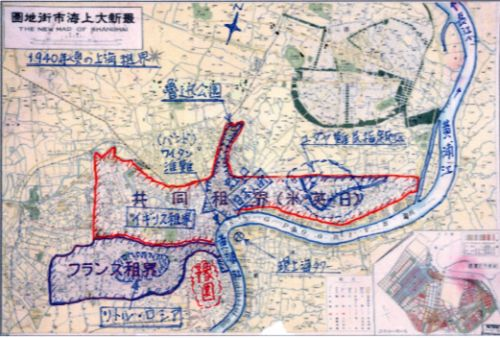

| 【続】上海から中国を見つめる: 中国の不思議をエッセイで綴る 第二弾 | |
| 竹宮青源 | |
| (2018) | |
【続】上海から中国を見つめる
（目 次）
一 上海の外国人と日本人（一）江戸幕府役人
二 中国の暖房システム（暖気：ヌアンチー）
三 上海の外国人と日本人（二）一八七〇年代の日本人
四 中国の山（黄山）
五 上海の外国人と日本人（三）日本人が住んでいた一九〇〇年頃のこと
六 中華料理（二）豆腐の起源
七 よく勉強する中国人（科挙制度を廃し、今の教育制度を模倣した国とは？...）
八 上海の外国人と日本人（四）イギリス人
九 中華料理（三）今も昔もグルメを唸らせる「上海蟹」
十 嫌われる上海人
十一 上海の外国人と日本人（五）アメリカ人
十二 中華料理（四）円卓の会食
十三 上海は巨大な豆腐の上に立つ楼閣
十四 日本から中国に渡った「和製漢字」
十五 中華料理（五）「火鍋」に見るサービス精神の変化の兆し
十六 上海の外国人と日本人（六）ロシア人
十七 中華料理（六）イスラム教徒の料理：清真料理
十八 中国御一行様「元祖：爆買い」
十九 上海の外国人と日本人（七）ユダヤ人
二十 中華料理（七）中国の各地方の料理体系
二十一 都合のいい歴史認識（一）捏造されてきた中国の歴史
二十二 環境問題（三）森林の喪失
二十三 日本の仮名が発想の契機となった中国の文字改革「ピンイン」
二十四 都合のいい歴史認識（二）共産党設立に係る経緯の真実
二十五 中華料理（八）満漢全席
二十六 都合のいい歴史認識（三）まんまと騙されたエドガー・スノー
【続】上海から中国を見つめる（主な参考文献）
一 上海の外国人と日本人（一）江戸幕府役人
かつて上海に住んでいたある日、行きつけの日本料理店に行った時のことである。この店は大阪からやって来た四十半ばの料理人が経営するこぢんまりとした店で、値段の割には味がしっかりしていたことと、マンションの近くということもあってよく通った。
カウンターのいつもの席に座って酒を飲みながらオーナーと雑談をしていたとき、ひとりの見知らぬ日本人が入って来た。年恰好は四十半ばと思しき男だったが、ちょっとしたしぐさや目つきが普通の人とはどことなく違う、どちらかといえば薄気味悪ささえ感じさせる男だった。
その男もどうやらこの店に最近足繁く通っている様子だった。オーナーは私の違和感を先刻見通しのようで、微妙な視線をその男と私の交互に送った。
「何にしますか？」オーナーが聞くと、男は少し勿体ぶって「ビール」とつぶやいた。
女性の店員がすぐにビールを持ってきて、コップに注いで差し出すと、男は何も言わずに飲み干し、そっと見つめる私を横目で睨むようにちらっと見つめた。
気まずい沈黙が流れると、「例の件はうまく進んでいますか？」と、オーナーがその場を和ませようと男に聞いた。男は軽く頷いてそれにすぐ答えようとしたのだが、私にちらっと視線を送ると、また黙り込んでしまった。そしてそのあとはひと言も喋らず、雑誌を見ながら酒をちびちびと飲んでいた。
数日後その店に行ったとき、オーナーにそのときの男のことを尋ねてみた。すると彼は何故かふいに辺りを窺うと声を潜めて「探偵ですねん」と言った。
「探偵！...この上海でどんな仕事が？」私も声を潜めて言った。「これですねん」と、オーナーは小声でニヤリと笑いながら小指を立てた。
私がポカンとしていると「日本人のなかには飲み屋 の 小姐 といい仲になっている人がいてますが、その小姐が浮気をしていないか気になる人がいますねん」
「えっ！小姐の浮気の調査？」
「へぇ。でも...その逆。つまり小姐が男の調査を依頼することもあるそうです」
小姐とはもともと日本語でいう「お嬢さん」という意味である。しかしこの表現も、近ごろはもっぱら飲み屋の女性を対象に使われることが増えたため、どちらかというと「お姉ちゃん」という響きになってきた。このためか上海の一般の女性は小姐と呼ばれることを最近は嫌がるようだ。
いずれにしても、あまりにも次元の低い話に私はうんざりしてしまった。どうりであの男の顔が...と私は思い、それ以上この話をしたくなくなってしまった。
ここでこのような次元の低い話をあえて紹介したのは理由がある。日本から目と鼻の先の外国である上海には、多くの日本人たちが働いているのだが、実はその人たちのなかには様々な階層の人たちが住んでいて、このような日本人もなかにはいるのだ。
ニューヨークやロンドン、パリなど、遠く離れた欧米に住む駐在員は、基本的には一流企業から派遣された人たちが多数を占めているので日本人のレベルも比較的高い。しかし上海はなにせ距離が近いこともあって、中小企業から個人商店、果てはヤクザに近い者までの、あらゆる階層の人たちが流れ着いて、蠢めいているのである。
二〇〇九年に、高樹のぶ子氏の 「 甘苦 上海」という小説が日本経済新聞に連載されたが、登場する主人公が飲み屋の小姐と情事にふける姿ばかりを描いた小説だったことから、一時期上海の企業の有識者たちを騒がせたことがあった。
「あの小説は、真面目に仕事に取り組んでいる我々駐在員からしてみれば、変な誤解を与えかねない」と、上海の企業連合体である上海日本商工会議所から、日本経済新聞社にクレームが出されたと聞いている。
とはいえ、上海にはありとあらゆる階層の人たちが集まっているだけに、あの小説のなかで描かれた内容は、あながち根も葉もないまったくの作り話とも言えず、一部は真実であると私は思っている。特に南部の広東省の深圳あたりまで行くと、そのような話を聞く機会が少なくない。
因みに同じアジアで、少し離れたタイやマレーシアにも、欧米とは異なる階層の日本人が集まっているところがあり、どうやら上海や深圳と似たり寄ったりの状況も一部にはあるようだ。
このように今でこそ日本人だけでなく多くの欧米人たちで溢れる上海であるが、かつては沼地の多い寂れた寒村にしか過ぎなかった。しかしイギリスを初めとする外国の租界ができると状況は一変し、一旗揚げようと大勢の中国人たちが磁石に吸い寄せられるように各地から集まってきた。そしてやがては中国で最も世界に開かれた窓口の都市として経済を長く牽引し、常に先頭をひた走る街に生まれ変わったのだった。
その証が市の中心を流れ る 黄浦 江 の東側にある百階建ての超高層ビル群で、最近はニューヨークのマンハッタン島の景観に少し似てきた。
二〇〇五年に八十八階の金茂大厦が開業すると、その三年後の二〇〇八年には百階建ての上海環球中心。そして二〇一六年三月十二日には百二十八階（六三二メートル）建ての上海中心が開業している。これは世界一といわれるドバイのブルジェ・ハリファ（八二八メートル）の次に高いビルという。
こうした超高層ビルが矢継ぎ早に建設されているところを見ていると、上海の発展はいったいどこまで続くのだろうかと、その勢いに舌を巻かざるを得ない。
現在約十五万人の外国人が居住していると言われる上海であるが、出張者や旅行者も加えると、その数は毎日約二～三十万人にもなると言われている。
そんななかで最近は減少傾向に転じたと言われる日本人であるが、私が住んでいた当時は五万人が居住登録をし、二～三万人が居住はしているが登録はしていないという状況だった。こうした人々に出張や旅行で来ている人たちも加えると、一日約十万人近い日本人が上海で活動していると言われていた。
因みに外国人としての最大勢力は台湾人が最大で、約三十万人が住んでいると言われている。とはいえ彼らは上海ではなく、隣接する江蘇省の昆山に、目立たないように住んでいる。
さて、こうして見ていると、これだけ多くの日本人が上海に住み始めたのは、つい最近になってからのことと思われる方も少なくないが、実はそうではない。歴史をひも解いてみると、今から七十年近く前の一九四四年当時の上海には、なんと現在を上回る十万人もの日本人が住んでいたのだ。
居留民が十万人ということであるから、出張や旅行で来た人たちや軍人も含めると、おそらく現在を遥かに上回る十二～三万人という、大変な数の日本人が、当時の上海の租界に住み、そして行き来していたことになる。
では日本人が上海に住み始めるきっかけとなったのは、果たしていつ頃のことだったのだろうか？
それは一八六二年六月三日午後四時のことだった。『千歳丸』という名の日本の帆船 が 外灘 （バンド）のふ頭にゆっくりと接岸し、帆を下したその日から日本人の上海での大がかりな活動の歴史は始まったのだった。船上には日章旗の他に、何故かイギリス国旗とオランダ国旗が風になびいていた。
この千歳丸は一八六二年五月二七日に長崎を出帆し、六月三日に上海に入港した。日本人が正式に中国を訪れるのは二世紀ぶりであった。
さてこの千歳丸に乗って上海へやって来た日本人乗船員は、勘定方の根立助七郎以下の江戸幕府役人のほか、次のようなメンバーであった。
長州藩の高杉晋作・佐賀藩の中牟田倉之助ほか、ＮＨＫの二〇一五年下半期放送の、朝の連続テレビ小説の「あさが来た」のなかで、日本のおばさま方の目をくぎ付けにして話題になった、ディーン・フジオカが演じる薩摩藩士の五代友厚で、彼は水夫として乗船していたようだ。
その他長崎県の大村藩の峰源助などの諸藩士、長崎商人などで構成された五十四名の他、英国人のヘンリー・リチャードソン船長を含む、外国の船員を合わせれば総勢六十七名だった。
名目上の船長は一八五九年長崎奉行付となった幕臣の沼間平六郎であったが、この当時はまだ船を操縦できる日本人がいなかったため、実際はイギリス人を中心とした外国人船員一六人が担当した。
このため船上にイギリス国旗が掲げられたのだった。またオランダ国旗があるのは、当時日本は中国との貿易権を持たなかったため、それを持つオランダを仲介として貿易を始めようとしていたからだった。
当時の上海人は日本人たちを物珍しい想いで見つめたに違いない。なぜなら彼らはみな着物を着 て 髷 を結い、またその一行を取り仕切る人物たちの多くが大小の刀を腰につけた侍だったからだ。好奇心旺盛な上海人たちはすぐに彼らを取り囲むと「東洋人！東洋人！」と呼んだようだ。
彼らは多くの商船や軍艦などが停泊する黄浦江の港の賑わいや、その港を見下ろすように外灘に並び立つ高い建物群に驚きの目を向け、しばらくその景観に圧倒されたのだった。そのときの感想を高杉晋作は「上海は中国で最も繫栄した港である」と、書き残している。
高杉晋作は欧米を旅した経験を持つ五代友厚らと、滞在中にイギリスやフランスなどの上海の租界を時間の許す限りくまなく歩きまわった。そして彼らは上海のことを、アメリカのワシントンやニューヨークよりも遥かに栄えていると、日本のすぐ近くにある上海の凄まじい発展ぶりに驚愕したのだった。
しかしその一方で、彼らは租界の境界の外側に広がる、いわゆる華界と呼ばれる中国人ばかりが住む地域が、太平天国の乱などの内戦の影響でひどく立ち遅れ、腐敗し混乱した世界であることも同時に見逃さなかったのだった。
つまり西欧列強に支配された租界が都市としての繁栄を謳歌している一方で、国家としての主権を喪失し、体制の腐敗とともに衰亡していく清国の落ちぶれた哀れな姿の一端をつぶさに見つめたのだった。
彼らが目にした甚だしい落差は、翻ってみるとまさに自国にひたひたと迫りつつある危機でもあると、幕吏たちの目にはそう映ったようだった。この状況は高杉晋作が『遊清五録』として旅行記のなかで記述し、警鐘を鳴らしたことでよく知られている。
そしてこのとき抱いた彼らの危機感こそが、やがては江戸幕府を終焉に向かわせ、明治維新へのエネルギーへと昇華していくきっかけとなったのであった。
（了）
（一九四〇年頃の上海租界地図）

二 中国の暖房システム（暖気：ヌアンチー）
上海に住んでいた当時、毎年十一月の初めになると家に帰ってもアパートのなかはうすら寒く、厚着をして震えていたことを思い出す。私が住んでいたアパートは「上海から中国を見つめる」の第二十八章の「西洋に憧れる中国人」というエッセイに出てくる、衡山路界隈近くの徐家匯という地区で、アパートは全館集中冷暖房のシステムが設置されていた。
上海の緯度を地図で眺めて見ると、ちょうど鹿児島県の薩摩半島の先端辺りに位置している。皆さんが思われるより結構南にある。この緯度ならきっと暖かいところに違いないと考えられる方が少なくないと思う。けれども中国はユーラシア大陸の一部であるため、上海にも陸続きのシベリアからの寒気がそのまま伝わってくるのである。つまり比較的南方に位置しているとはいえ、気候はそれほど暖かいところでもなく、言ってみれば東京とほぼ同じ程度である。とはいえ東京との違いをもう少し掘り下げてみると...。上海は東京に比べて、夏はより暑く冬はより寒い。特に冬は氷点下になることが少なくなく、しかも近郊に湖沼が多いことから乾燥した東京と違って、冬でも湿度が高い。このため骨身に凍みるという表現がふさわしい寒さなのである。そしてさらに付け加えると、残念なことに春と秋のベストシーズンが日本に比べてかなり短いのも特徴のひとつである。
因みに東京とほぼ同じ緯度に位置する中国の大きな都市といえば、山東省の青島がそうであるが、冬場の平均最低気温は零下三℃程度である。省都の済南がその少し北側にあり、冬場の平均最低気温は零下四℃ほどである。
そしてかつて隋・唐の都であった古都で、多くの日本人観光客が押し寄せ る 兵馬俑 で有名な西安が、千葉県の房総半島の先端辺りに位置する。
房総半島は伊豆半島と並んで関東では冬でも暖かいところといわれるが、同じ緯度の西安は冬になると、平均最低気温が零下三℃から四℃となるかなり寒いところである。
このように地図を眺めながら日本と中国の気候の違いを考えるとき、日本の気候の特徴は、なにより周囲に広がる海の恩恵を抜きにしては考えられないことがわかる。つまり日本列島は黒潮（日本海流）と対馬海流というという暖流に優しく包まれているため、比較的緯度が高くても温暖な気候となっている。
この話のついでながらヨーロッパに目を転じてみると、イギリスはロシアのカムチャッカ半島と同じ緯度にありながら比較的温暖な気候なのは、近くをメキシコ湾流という暖流が流れているからである。また同じように緯度の高いフランスなどヨーロッパ諸国の気候が温暖なのも、すぐ南に火鉢の役割をしているサハラ砂漠があるからでもある。このようにそれぞれの地域の気候は単に地理的な緯度だけでなく、海洋や周囲の環境からの影響も大きく受けているのである。言い換えてみれば日本では中国の暖房システムに相当するものが、海から受けている自然の恩恵、つまり海流であるともいえるのだ。
さて話が脇道にそれてしまったが、上海のアパートの部屋のなかがこう寒くては堪らないと、集中暖房を入れてくれるようにと管理人に頼んでも、「上海市政府からの通達で、暖房を効かせるのは十一月十五日からになってからしかできない」と、つれない。
ということで、しばらくは厚着をして我慢することになるのである。（その点集中暖房ではない、個別のエアコンを設置している家庭では、特に制約を受けることもなく自由に使用できるのではあるが...）
しかし同じ中国でも、長江以北になると俄然冬の生活環境が異なってくる。社会インフラとしての地域の暖房システムがしっかりと整備されているのである。
北京辺りでは冬は零下二十度にもなるし、更に北に位置する瀋陽やハルビンまで足を伸ばすと、そこは零下三十度から四十度にもなる極寒の地で、この集中暖房なしで人は生きていけない。その集中暖房のシステムとは、発電所などからの熱水を暖房用として配管で各戸に供給する方式である。
この暖房システムのことを中国では「暖気（ヌアンチー）」と呼んでいる。約六十℃ほどの熱水が配管を通じて各家庭に供給されるのである。この熱水は各家庭の居間、台所、浴室、寝室、廊下そして階段などに設置されているラジエータで放熱して部屋を暖めるのである。
さて社会インフラとしてのこの集中暖房システムを世界で最初に導入したのは、一九三〇年代に本格的に着手した旧ソ連だった。発電所などで発電と併用したボイラーなどで作った熱水を、配管を通じて各家庭に供給し、ラジエータで放熱したあと冷却された温水は再びボイラーにもどして加熱するというこのシステムは、いわゆる閉ざされた熱水のサイクル網である。これは「平等に暖かさを」という社会主義国家の理念にかなった施策で、
中国は一九四九年の中華人民共和国の建国以来、このシステムを全国的に整備・展開していった。（それまでの中国北部の暖房システムは、後述するオンドルと朝鮮半島で呼ばれ る 炕 を元にしたものである）
さて東西南北に広い中国では、中緯度から南の上海などのいわゆる温帯と呼ばれる地域から、広東省などの亜熱帯の地域まである。国策としての集中暖房システムの展開に当たって、このような比較的暖かい地域に「暖気」の必要はないとして、当時の政府は国土を長江を境に北と南に分けて考えたのだった。つまり北側の地域と高山地帯であるチベット自治区を「暖気」という社会インフラ設備を敷設する対象地域と規定した。この結果長江のすぐ南側にある上海をはじめとする中緯度の家庭での冬は寒く、北部では暖かいというねじれた状況が生まれている。
このシステムのお陰で北部の家庭では、各部屋及び浴室などすべての室内空間は真冬でも暖かく、快適に過ごせることになったのであるが、それが近年では大気汚染の元凶とも言われ始めている。汚染物質は石炭を燃やすボイラー設備から排出されるガスに含まれる二酸化硫黄やＰＭ２．５など微粒子を含む煤煙だ。
「暖気」の供給は、都市ごとに委託された熱供給会社に委託されている。けれどもこうした会社の設備は一様に古く、環境対策がなされていない旧来の石炭ボイラーを使用しているため、大量の汚染物質を放出し、これが大気汚染の主要な原因となっている。そのため北京などの大都市では最近、燃料を石炭から石油や天然ガスなどに転換して、更なる大気汚染の拡散を防ぐ対策も進み始めているようである。
さて同じように寒い朝鮮半島の暖房システムは「オンドル（温突）」である。これは台所の竈で煮炊きしたときの煙が通る煙道を居住空間の床下に通し、床を暖めることによって部屋全体を暖める設備である。しかしアパートに住む人が増えてきた近年ではこのような設備は不可能なため、床下に温水を巡らす、いわゆる床暖房がオンドルという言い方で使われているようである。
因みに中国北部の暖気は十一月一日から翌年の三月三十一日まで供給され、暖房費は住宅面積の大きさに応じて徴収される。
（了）
（中国の暖房システム区分）
三 上海の外国人と日本人（二）一八七〇年代の日本人
......美津代が何日もお茶を挽き続けると、秀乃は言われなくても小さなザルを持って物乞いに出た。映画館や劇場のある賑やかな通りへ行き、誰かがザルに金を投げてくれるまで土やアスファルトの上に座り続ける。そうして稼いだ僅かな銭で、秀乃は一個の饅頭に、美津代は火酒にありつく。（中略）誰も金を恵んでくれない時は、邪険に追い払われながらも市場へ行き、野菜くずや果物の皮や魚の頭、鶏や豚の骨などを拾い集めた。（中略）上海には掃いて捨てるほど乞食がいて、熾烈な生存競争を繰り広げている。幼児だからと容赦してくれたりはしない。
秀乃を市場から追い出すのも、市場の労働者ではなく同じ立場の乞食達だった。たいていは中国人だが、阿片で身を持ち崩したらしい日本人も混じっている。鶏の骨のひとかけらを争うのに、異国人も同国人もあったものではない。かりんとうほどの小さな骨にでもありつければ幸せで、それを何日もしゃぶり続けて飢えをしのぐのだ。死体から衣服や靴を剥ぐことも覚えた。クリークのあたりでは犬や猫の死骸より、人間の死体に出くわすことのほうが多い。病気か飢えで野垂れ死にしたり、下層労働者同士の喧嘩で殺されたりしたものだ。もとからろくなものは着ていないが、それでも死んだとわかるやいなや、蠅より先に人間が取りつき、身に付けている物を根こそぎ剥ぎ取る。髪を結んでいる糸の一本も、擦り減って半分の大きさしかない草履も、あれば決して逃さない。死体の衣服剥ぎには、しかしプロの集団がいて、容易に割って入ることはできない。いつしか秀乃は、死にかけていて動けない人間から、わずか な 襤褸 を奪い取ることまで覚えた。死ぬのを待っていたのでは間に合わないのである。そうやって手に入れた襤褸を片っ端から身にまとい、冬場をしのぐ。......
なんとも殺伐とした地獄絵図を覗き見るような描写である。これは一九三〇年代の上海租界で翻弄される日本人を描いた、山崎洋子の小説 「 炎 精 」の第一章で、租界に隣接する中国人居住区 で 野 鶏 （売春婦）にまで落ちぶれた美津代と、その娘の秀乃の日常を描いた一節である。
この小説に描かれた時代は、前回「上海の外国人と日本人（一）」で紹介した、江戸幕府の幕吏の他、各藩士や商人の代表団五十一人が『千歳丸』に乗船して、初めて上海にやってきた一八六二年六月当時から七十年余り経った一九三〇年代後半である。当時は日本が満州国を建国して、中国をまるで自国の一部のようにしていた時代で、日本から移り住む人の数も半端な数ではなかった頃の話である。
さて多くの日本人が住んでいたこの時期の生活については別の機会にご紹介するとして、今回は一八六〇年代末の、日本人が少しずつ増え始めた時期にスポットライトを当てて、その当時の日本人たちの姿や社会状況について触れてみることにしたい。
一八七〇年に七名の日本人が上海のイギリス領事館にやってきて居留申請を行い、認可されたことが記録に残っているようだが、これが日本人最初の居留民であったようだ。
そのなかのひとりに田代源平という長崎から来た人がいた。やがて彼は、南蘇州河路と圓明園路が交差するイギリス領事館裏の静かな雰囲気のところに、有田焼を取り扱う「田代屋」を開業した。
この辺りは、当時上海では一等市民と呼ばれていたイギリス人などが多く住むところに近く、店先に並んだ有田焼はさっそく彼らの目に留まって評判となり、連日多くの客が押しかけるほど繁盛する店になっていった。
田代屋は長崎で有田焼を扱う老舗の陶器店であった。田代源平の養父に当たる、長崎の田代屋の主人（田代慶右衛門）は二年前、高杉晋作らとともに千歳丸に乗り込んで、上海にやって来た五十一名の視察代表団のひとりだったようだ。
彼は上海の租界の各地を商売人の目でくまなく歩きまわり、将来の可能性を探った。彼が驚いたのは、思ったより多くの西洋人が暮らしていることと、彼らの生活のスタイルが日本とは比較にならないほど豊かで、華麗だったということだった。
おそらく上海は、今後も国際都市として発展する見込みがある。また彼らの下で働く大勢の中国人たちもまた洋風のスタイルに憧れ、あらゆる面で彼らの真似もしていることから、かつてヨーロッパを風靡したことのある有田焼は、上海でもきっと受け入れられるに違いないと確信した。
田代源平は上海の視察から帰って来た養父の意見を聞くと、二年後に単身上海にやって来て田代屋を開業したのだった。
元々士族の出である田代源平は人情味に溢れているばかりでなく、武士道の忠義や仁愛の心も強く、多くの人たちから慕われた。そんな優しさを持つ彼は、上海に着いてしばらくしたある日、租界の各地を歩いて回った。
少し離れたフランス租界辺りまで足を伸ばすと、贅を尽くしたと思える洋館が点在していることに驚き、その都度立ち止まっては、その華やかさにしばし目を奪われたのだった。
一方租界を一歩出た中国人居住区ではその対極ともいえる、極貧のみじめな生活に明け暮れる人々がいることに衝撃を受け、憐れみを秘めた視線で彼らを見つめたのだった。
当時の清国は王朝末期の権力争いと、それに絡んだ腐敗と混乱のさなかで、中国史上最大の内戦といわれる太平天国の乱が、その混乱に更に拍車をかけるという、まさに乱れに乱れた闇の世界が広がっていた。
そんな状況のなか、彼はある日、外国人の妾という立場に身を落として苦労する日本女性たちの存在を知った。少しでも彼女らの心の慰めにでもなればと、彼は日本から木櫛や化粧品そして手鏡など、彼女らが好む日本の品物を取り寄せて店の片隅に並べた。
こうした女性たちは当時『からゆきさん』と呼ばれていた。からゆき（唐行き）さんとは、当時九州で使われていた言葉で、十九世紀後半、主に東アジア・東南アジアに渡って、娼婦として働いた日本人女性のことを指している。
女性たちの多くは長崎県島原半島や熊本県天草諸島の農村、漁村などの貧しい家庭の娘たちだった。主な渡航先はシンガポール、中国、香港、フィリピン、ボルネオ、タイ、インドネシアなどである。またシベリア、ハワイ、カリフォルニア、アフリカなどさらに遠くの国々へ渡った例もあったようだ。
ノンフィクション作家の山崎朋子がその著書『サンダカン八番娼館』のなかで、大正中期から昭和初期のボルネオを舞台に、その様子や労働条件などを詳しく書いている。これは映画にもなったころから、ご存知の方も少なくないと思う。
上海にいた当時の『からゆきさん』は街頭で客引きをし、人力車夫や小商人、または租界に住む西洋人などを客としていたようだ。
一八八〇年代に入ると、四馬路（現福州路）や西華徳路（現長治路）に『東洋茶館』という新しい名の娼館が登場した。当時この娼館は毎日七〇〇～八〇〇人の客を集めるほどの大変な賑わいで、店内のそこかしこで娼婦たちの長崎方言が飛び交っていたようだ。
しかしやがて、当時は新聞記者で後に政治家となる尾崎行雄がこの東洋茶館のことを、『...本邦の醜名を遠く海外に流せる東洋茶館の如き...』という記事を書くと、日本政府は一八八四年、上海領事館からの要請に応じて巡査を派遣し、領事館による東洋茶館の取り締まり、および娼館関係者の逮捕を命じて、連日賑わいを見せていたこの東洋茶館の運命もやがて終焉を迎えることになる。
この東洋茶館が繁盛していた頃、日本から来た多くの旅行者も、話のタネにと、おそらくこの館に通ったに違いない。
当時上海には西洋のホテルは複数あったが、料金が非常に高いこともあって、日本人にとっては敷居が高いところだった。その一方で、「客桟」と当時呼ばれていた中国の伝統的な旅館も多数あって、価格も破格に安いのだが、文化的風習が余りにも異なることと、なにより言葉がまったく通じないことから、日本人には別の意味で敷居が高かった。
そこで田代屋は旅館の経営にも乗り出すことになった。中国とさほど変わらない価格で日本の旅館に泊まれると言うこともあって、その後訪れる日本人のほとんどは、この旅館のお世話になったようだ。
田代源平は旅館を経営しながら、日本人の客の多くが東洋茶館に通う姿に目をしかめていたに違いない。そして前述した、新聞記者として上海にやって来た尾崎行雄と、おそらくは「東洋茶館は日本の恥だ！」云々の話をしたに違いない。
（了）
（一九四〇年頃の上海の日本人街「虹口地区」）
四 中国の山 （ 黄山 ）
若いころの私は結構山に入れ込んでいた。雪と氷に覆われた厳冬期の剣岳や、正月の八ヶ岳を一週間かけて北から南に全山縦走や、北アルプスの剣岳や穂高の岩壁のロッククライミングなどにも挑戦する、いわば命知らずの山仲間のひとりとして青春を過ごしていた。
そんな若かりし頃のことである。それは新緑の六月頃のことだったと思うが、仲間と四国の石鎚山に登ったときのことだった。
麓から行者谷という深い森を少しずつ登り、石鎚山脈に属する山のひとつである瓶ヶ森（標高一八九七メートル）に至る急斜面を励まし合いながら登った。
そして四時間をかけてやっとの思いで辿り着いた稜線に立ったとき、我々の目の前に現れた光景を見て誰もが唖然とさせられたのだった。
石鎚山系は近畿以西の西日本の最高峰である標高一九八二メートルの石鎚山など、高い山々が連なる人里離れた険しいところにあるはずなのに、そこは大自然を背に記念写真に納まるハイカーたちで一杯の石鎚スカイラインの駐車場だったのだ。
重いリックを背負い本格的な登山靴を履いて、汗だくの格好で突然現れた我々の姿は、ハイカーたちの目にはどこか場違いで、そこに漂う空気感からは完全に浮き上ったピエロのような存在に思えたに違いない。
こんな遠い昔に山で体験したことをふいに思い出させてくれたのが、初めて行った中国南部の安徽省にある黄山に行ったときのことだった。
黄山は七〇を超える標高二〇〇〇メートル近くの険しい峰々が連なる景勝地で、荒々しい岩肌と奇岩、そしてその奇岩に凛と植生する孤高の美を漂わせるねじれた松の木が、岩肌に迫る雲海に浮かぶ、この世のものとは思えない水墨画のような美しい世界が広がる絶景の山である。
黄山の最大の特徴は荒々しい絶壁と奇妙な形をした松が奇岩に取り付く姿と、それを包み込むように広がる雲海である。この「奇松」「怪石」「雲海」を「三奇」といい、麓に広がる温泉を含めて「黄山四絶」（黄山の四つの絶品）と称えられている。こうした中国のなかでも稀有な山と崇められている黄山であるから、今でも人の手がほとんど加えられていない、大自然を見ることができると期待して出かけたのだが、実際に足を踏み入れてみると、想像以上にというか、そこまでしなくてもいいのではないかと思うほど、人の手が加えられていることに内心がっかりしてしまった。
本格的な登山道もあるようだが、それを使う人はめったにいないだろう。
この山域全体は黄山風景区と呼ばれていて 、 雲谷 風景区 、 玉屏楼 風景区そし て 松谷 風景区と三か所にあるロープウェイを使えば、それぞれ中心部の山域までは十分ほどで行けるようになっている。
当時私は、せめてそこから本格的な山登りの気分が味わえるものと思っていたのだが、目の前に現れたのは幅一・五メートル程のコンクリートできれいに舗装された道だった。
黄山に行こうと思ったとき、本格的な登山靴を履いていかなくても大丈夫だろうかと一時期心配した自分のことがおかしくなったほどだった。
けれどもまさかこんな大自然の山の上まで、これほど人の手が加えられていることに驚いてしまった。しかしこんな山のなかに、こんなものまであるのかという驚きは、実はこのあともさらに続くことになるのだった。
そんな整備の行き届いた山道を歩きながら、人々は目の前に現れる絶景に歓声を上げては記念写真に納まる。そんな彼女らの姿を見ていて、やはり中国人だと改めて感じることがあった。
それは写真に納まるときにとるポーズのことである。普段はおとなしい、どちらかと言えば控え目だと思っていた女性でも、このときだけはまるで映画スターになったような大胆なポーズをとるのである。日本人女性なら恥ずかしがって、ここまでする人はおそらくいないであろう。けれども大胆な中国の女性は恥ずかしがってなどいない。このときだけは、世界は自分を中心に回っているというような想いで写真に納まるのである。
最近日本の観光に訪れる中国の女性たちが、東京の浅草界隈で和服を着て颯爽と歩く姿をよく目にするが、そのときの彼女らは正にこのような心持ちでいるのだろう。
さて話が脇道にそれてしまったが、山水画の世界を彷彿させる黄山の美しさはつとに有名で、国の内外からの観光客が冬の時期を除いて絶えないところである。
また古代から「黄山を見ずして、山を見たというなかれ」と言われるように、数多くの文人もこの地を訪れている。黄山は古代より絵画をはじめ、文学においてもテーマとして数多く取り上げられていて、文化的な存在感は際立っている。
またこの山域では多様な動植物が生息する豊かな自然もあることから、複合遺産として一九九〇年にユネスコの世界自然遺産にも登録されている。
中国の美しい山水画に心を惹かれた方は少なくないだろう。最近では映画「アバター」の撮影地として有名になった湖北 省 張家界 の、天に浮かんだような奇岩の数々。最近はそうした絶景を見ることができる観光地に、わざわざガラス張りの廊下を作って話題になったようであるが、これはちとやりすぎであろう。
さて中国の美しい山々であるが、特に道教の五つの聖なる山（山東省 の 泰山 、湖南省 の 衡山 、河南省 の 嵩山 、陝西省 の 華山 、山西省 の 恒山 ）は五岳、仏教の四つの聖なる山は（山西省 の 五台山 、四川省 の 峨 眉山 、安徽省 の 九 華山 、浙江省 の 普陀山 ）と言われている。このうち泰山、嵩山、五台山、峨眉山は世界遺産にも登録されている。
こうした中国に数ある名山のなかでも、黄山の素晴らしさを明の地理学者 ・ 徐 霞客 が次のように讃えている。
「五岳より帰りて山を見ることなし、黄山より帰りて岳を見ることなし」。つまり「五岳を見てしまったら他の山なんて見てられない。でも黄山を見てしまったら、その五岳さえも見てられない」。と言わしめるのが黄山の神秘的な美しさなのである。それはあちこちにあるユニークな形をした奇岩であり、断崖絶壁の岩の割れ目に根を張り巡らせて、凛と佇む松の姿は、正に山水画の世界を彷彿とさせる自然の芸術品でもある。
そしてそんな景観にさらに上等な味付けをするのがめったに消えることのない雲である。険しい峰々は時に雲海を従え、仙人のような崇高さを漂わせている。冬は雪を春から夏は新緑にそして秋は紅葉など、黄山の四季折々の美しさはいつ見ても際立っている。
さてこのように美しい絵画のような世界を歩いていくと、途中からおやっと思わせる景色がやがて目の前に広がる。山のなかに入ったとばかり思っていた我々の前に現れたのは、大きなホテルが並ぶちょっとした街であった。
驚いたことに郵便局やコンビニまであるではないか。これは例えば日本の北アルプスの立山の室堂周辺に、ホテルやコンビニそして郵便局と、それらに従事する人たちの住宅を作るようなものである。日本の山域ではまず考えられない。観光客対応とはいえ、これは少々やりすぎなのではと思ったのは私だけだろうか？
（了）
❖❖❖ あとがき（中国の山（黄山）） ❖❖❖
黄山への交通手段は次の通りあるが、上海からはバスが便利である。
① 飛行機：黄山屯渓空港から黄山風景区までバスで約一時間。十六元
② 列車 ：上海からは十二時間と不便。黄山風景区まではバスで一時間半。一五元
③ バス ： 上海南駅から黄山風景区までは小型バスで約四時間。料金は一四〇元
黄山入山料：二三〇元
✤ロープウェイ情報
（１） 雲谷ロープウェイ
（起点）雲谷寺～（終点）白鵞嶺、（距離）二八〇四ｍ、落差（七七三ｍ）
（乗客数）五七名、（所要時間）八分間、（運行時間）七：三〇～一六：〇〇
（２） 玉屏ロープウェイ
（起点）慈光閣～（終点）玉屏楼、（距離）二一七六ｍ、落差（七五〇ｍ）
（乗客数）六名、（所要時間）八分間、（運行時間）七：三〇～一六：〇〇
（３） 松谷ロープウェイ
（起点）松谷庵～（終点）丹霞峰、（距離）三七〇九ｍ、落差（一〇一五ｍ）
（乗客数）一〇〇名、（所要時間）十分間、（運行時間）七：三〇～一六：〇〇
❖❖❖❖❖❖❖❖❖❖❖❖❖❖❖❖❖❖❖❖❖❖❖❖❖❖❖❖❖❖❖❖❖❖❖❖❖❖❖❖
（黄山）
五 上海の外国人と日本人（三）日本人が住んでいた一九〇〇年頃のこと
上海には七～八万人もの日本人が住んでいることから様々な団体がある。その基本は勿論、活動する縦軸ともいえるそれぞれの企業体なのであるが、同時に出身や趣味などの共通項でくくった様々なグループがある。例えば○○県人会や○○大学同窓会から、面白いところでは上海猛虎会という、阪神タイガースを応援するグループさえあったほどだ。
こうした日本人の様々な集まりのなかの文化活動では囲碁や将棋、そしてお茶やお花の会。そしてスポーツでは野球やソフト、そしてテニスなどのグループがあったが、なかでもテニスは複数のグループがあって、毎年団体戦を開催していたり、商工会議所が企画するダブルス選手権があったりと結構盛んである。
またゴルフも多くの日本人が楽しんでいるが、商工会議所が主催するゴルフ大会から、東京の大学のゴルフ選手権や特定の大学のゴルフ対抗戦などあげればきりがないほど各地で盛んにおこなわれている。
七十年前の上海にも十万人規模の日本人が住んでいたというから、テニスやゴルフはまだしも、○○県人会や○○同窓会などは結構盛んにおこなわれていたものと思われる。
確か二〇〇八年頃のことだったと思うが、海外にある日本人学校の生徒数で、上海がバンコクを抜いて世界一になった。おそらく現在もトップの座を守りつづけていると思うが、上海にはそれだけ多くの日本人が住んでいるという証である。
その日本人相手の日本料理店も数えきれないほどで、なかには大阪の老舗と呼ばれるほどの高級料理店まで進出していた。ただ日本料理店の多くは中国人経営者で、客層も中国人が主体というところが少なくない。日本人たちはその味を試しに一度は行ってみるのだが、違和感を覚えると二度と行かなくなる。
同じように日本人を相手にしたスナックやクラブ、そしてマッサージ店も数えきれないほどあって、日本人が多く住む市西部の虹橋地区や古北地区には、夜ごと日本語のネオンが煌煌と輝いている。
日本の各地からやってきた男たちは、こうした場所に出入りをはじめると、やがて上海のことを竜宮城だと勘違いする者もいて、夜遊びにのめり込む者も少なくなかった。それが「上海の外国人と日本人（一）」で書いた、怪しげな私立探偵の登場に繋がるのである。
このように昼間は商売にしのぎを削り、夜になると安らぎを求めてネオンの向こうの暗闇に消える人たちが住む上海であるが、このように尽きることのない魅力を発散させる上海は、なにも今に始まったことではなかった。
「上海の外国人と日本人（二）」でも書いたように、十九世紀末の共同租界の初期には、続々と集まる日本人を相手にした商売がはじまり、その究極の例として、日本人が経営する娼館まで現れたことに触れた。
その後も一旗上げようと大勢の日本人が移り住み、やがて彼らが作った集落は日本独特の街並みを形成し、やがて食生活も含めて日本と変わらない暮らしができるほどの街へと発展していったのだった。
最盛期の人口は十万人にも膨れ上がり、出張や旅行者そして軍人なども合わせると、一日当り十二～三万人もの日本人がその頃上海の街を歩き回っていたことも想像に難くない。
また驚いたことに、当時の上海では日本語の新聞である「上海新報」も発行されていたようだった。この新聞は一八九〇年六月五日に創刊し、日本人の経済活動や文化事業などを主に報じていたが、上海日清貿易研究所に関する批判的な記事をきっかけに、同研究所の学生から襲撃を受けて、一八九一年五月二十九日に五十二号を最後に廃刊に追い込まれてしまった。
さて当時の上海租界には日本人をはじめイギリス人やフランス人、アメリカ人、そしてロシア人など多くの外国人が住んでいた。こうした外国人が織りなす独特の文化が異国情緒を溢れさせていた。なかでもフランス租界の霞飛路辺りに広がっていたロシア風情が一番との評判もあったようだ。
けれども日本人居住区である虹口地区の呉淞路周辺の日本商店街も、異国情緒という点では決して負けていなかった。それは客の目を楽しませる商品の美しさとともに、陳列の妙と清潔感、そして日本らしい親しみやすい接客態度が評判だったからだった。
現在の上海には数百件の日本料理店があるが、一九三〇年代の上海にも百軒を超える日本料理店があったようだ。当時の主な料理は懐石料理、すき焼き、水炊き、寿司、そば、うどん、洋食、カレーなどであったようだ。
当時上海にはあらゆる国の人々が住んでいたが、収入の面で比べてみると、最も高給取りは西洋人で日本人がその次だった。とはいえ料理の値段で比較してみると、最も高価なのが日本料理で、西洋料理がそれに続き、中華料理やロシア料理は手ごろな大衆料理という位置づけだった。
もっとも日本料理が高価だった理由は、芸者が付くいわゆる「料亭」がその対象だったからで、同じ日本料理でも大衆料理店は当然のことながら値段も庶民的で安価だった。
さて当時最高級の料亭と評判だったのは虹口乍浦路四二号の「藤村家」で、芸者上がりの女将の腕が特に優れていたこともあって、連日大勢の客が押し寄せて、大変繁盛していたようだった。
芸者のいるこの他の料亭としては、六三亭、六三園、月酒家、月酒家花園、松酒家、東語、新六三、若松、濱吉、叶家、美濃家、京亭、新陽、三福などがあった。どの店も少なくとも四～五名の芸者を置いていたが、最も多かった六三亭では六十人以上の芸者を置いていたようだった。こうした芸者たちの多くは、長崎県の島原や熊本県の天草辺りから来た娘たちで、多いときは総勢二百人を数えたようだった。
この当時の日本人居留民は、最盛期には十万人にも及んだが、彼らの胃袋を満たす食材を取り扱うところとしては、三角地采場という市場が虹口地区にはあった。この市場は文字通り呉淞路、漢陽路、峨眉路と塘沽路に囲まれた三角形の土地にできたもので、正式には虹口マーケットと呼ばれていた。
その生い立ちは一八九〇年代の初めに、この辺りで野菜を売る者が現れ、やがてそれを真似る者たちが少しずつ増え、一九〇二年、一九一二年、一九二三年と、市政府の投資が続けられた結果、一七〇〇店舗が収容できる三階建ての立派な市場が完成した。
一階は魚と野菜、二階は肉類、三階は遊技場になっていて、当時は東洋一の規模を誇る市場であった。
この虹口市場には日本の雑貨屋、八百屋、魚屋、精肉店、菓子店、寿司屋、果物店、饅頭店などが軒を連ねていた。食材の豊富さは日本国内とほぼ変わらず、当時虹口地区に住んでいた日本人は、ここで買い物をして生活をしていると、外国に住んでいることすら忘れるほどであったという。
因みに魚は、黄浦江や揚子江で獲れた白い鱗をした川魚と、東シナ海で獲れた魚とともに日本から輸入された魚も置いていた。日本から直送された魚には特別に張り紙がはられていた。笹の葉が敷かれた箱にきれいに並べられ、さらにかち割りした氷が周囲に添えられるなど日本と同じように鮮度が保たれていた。川魚を買うのは主に中国人で、日本人は内地から直送された割高な魚を買うのだった。
日本居留民は一九三七年の盧溝橋事件をきっかけに日中戦争向かっていくさなか、人口は大幅に増加したのだが、一九四五年に日本が敗北すると、十万人を超す上海の居留民は中国政府の「以徳報怨」（徳を以って怨恨に報いる）政策に救われて、日本に粛々と無事帰国できたのである。
（了）
❖❖❖ あとがき（上海の外国人・日本人） ❖❖❖
上海の日本人居留民推移（一八七〇～一九四五年）
❖❖❖❖❖❖❖❖❖❖❖❖❖❖❖❖❖❖❖❖❖❖❖❖❖
六 中華料理（二）豆腐の起源
「なんか変な臭いがしない？」
「そういえば、そうね？」
「マジ臭い！なんだ...これは...」
このような会話が車内のあちこちで始まり、その騒ぎは少しずつ広まり始め、なかには気分を悪くする者まで現れると、電車のなかは騒然となってきた。
「おい！これはひでぇ臭いだ！」
「もう。我慢できない。とにかく降りて車掌を呼ぼう。鼻が曲がりそうだ。もう我慢できない」
二〇一六年二月上旬にＪＲ関西本線の普通列車の車内で異臭騒ぎが起きたとき、おそらくこのようなやりとりがあちこちで交わされ、車内は大騒ぎになったものと推定される。
この騒ぎで乗客二十人が途中下車したがけが人はなかった。列車は結局一時間四十五分のあいだ運転が見合わされ、約四七五〇人の乗客に影響が出た。
ＪＲによるとトラブルが起きたのは二月七日午後一時過ぎのことであった。関西本線の弥富駅で停車していた列車の乗客から「アンモニアのような異臭がする」という声があがったあと、車内ではちょっとした騒ぎになったようだ。
警察が調べたところ、車内の床に液体のこぼれた痕が見つかった。また、同日夜、弥富駅のゴミ箱か ら 臭 豆腐 が発見され、どうやらこれが悪臭の原因だったようだ。
この臭豆腐を車内に持ち込んで騒ぎを引き起こした当事者は見つかっていないが、日本では特定の中華料理店以外では作らないものであることと、季節が二月というところから想像すると、おそらく春節休暇で日本に旅行に来た中国人旅行者が持ち込んだ可能性が高い。おそらくその中国人は臭豆腐が大好きで、税関をすり抜けて日本国内に持ち込み、何も考えずに旅先に持ち込んだのだろう。それがこんな騒ぎを引き起こすとは思ってもみなかったはずで、やがて自分がこの騒ぎを起こした当事者であることに思い至ると、そっとゴミ箱に捨てて、黙って立ち去ったのであろう。
さて冒頭から臭豆腐による異臭騒ぎの顛末を想像もまじえて書いてしまったが、日本では馴染みのないこの臭豆腐のことは後述するとして、今回は私たち日本人にとっても馴染みの深い食材である豆腐について、その起源にまで遡って触れてみることにしたい。
暑い夏は冷奴、寒い冬になると湯豆腐など、日本の家庭の食材としてすっかり溶け込んでいるのが豆腐である。豆腐を使う料理としては味噌汁、味噌田楽、揚げ出し豆腐、炙り豆腐、豆腐ハンバーグやすき焼きなどによく使われる。また地方料理では半助豆腐、どじょう豆腐や沖縄料理として有名なチャンプルーなどがある。
また豆腐を製造する際にできる副産物としては「おから」があるが、二次加工品としては焼き豆腐、乾燥豆腐（高野豆腐）、油揚げ、厚揚げ、がんもどきなどがある。
現在の日本の豆腐は柔らかくて淡白な食感を特徴とする独特のものであるが、中国や韓国の豆腐は炒めたり揚げたりして調理されることが多いため、日本の豆腐に比べると水分が少なく、どちらかといえば堅いものとなっている。
中国において豆腐料理は国を代表する料理、つまり国菜といわれている。それは豆腐が中国起源の食材であるという事実だけでなく、世の中に広く浸透し、誰からも好まれ歓迎されている食品であるからである。
そんな風に人々の生活にすっかり溶け込んでいる豆腐であるが、ではいったい、豆腐はいつ頃中国で誕生したのだろうか？
それ は 王仁湘 という中国の考古学者が『図説 中国 食の文化誌』のなかでその由来について考察している。ここではその主要な部分を、わかり易い言葉で引用させてもらっている。
孔子（前五五一～前四七九）の時代にすでに豆腐を食べていたという説があるようだが、清代の医学者であ る 汪伋 は「事物原会」という事物の起源を著したその著書のなかで、豆腐は豆の塊にほかならない。それゆえ鬼食と呼ばれることもあったことから孔子は食べなかったと述べている。また汪伋は豆腐が発明されたのを春秋時代（前七七〇～前四〇三）のこととしているようだが、関連する文献や資料も見当たらないことから、この説にはどうも無理があるようだ。
その点宋代（九六〇～一一二〇年）には豆腐のことに触れている文献が少なくないので、すでに普及していたことが十分窺える。隋 の 煬 帝 （在位六〇四～六一八）の料理長であっ た 謝諷 の 『 食 経 』という料理書に記述された、日本にはあまり馴染みのない豆腐を腐らせたいわばチーズのような「加乳腐」を豆腐とみなせば、豆腐に関する最初の文献である可能性がある。そうであれば、隋、唐の時代に豆腐作りの技術が存在していたことに疑いの余地はない。
また北宋時代の儒学者で朱子学を大成した朱子は、豆腐は前漢時代の准海王の劉安が発明したものであるとしている。不老不死の薬の研究をしていた劉安は動植物の薬理を研究したりする過程で、偶然に凝固する豆乳の特性を発見し、豆腐を作ることができた可能性がある。
その後、明時代末期の医学者で薬学書として有名な『本草綱目』を著し た 李 時 珍 （一五一八～九三）もその著書の中で朱子の見解を踏襲している。
しかしながら前漢時代には豆腐の製造に関する文献は見当たらない。ところが驚いたことに、考古学者による出土品の研究の過程で、それに関する思いも寄らない重要な手がかりが得られたのだった。
それは一九五九年から一九六〇年にかけて 、 河南省 新密 市 の 打 虎亭 村で二つの漢の時代の墓が発掘されたのだが、そのひとつである一号墓の壁に、なんと豆腐作りの光景が描かれていたのだった。専門家によれば、この「豆腐作房図」はまさに豆腐を作る主要な作業工程の写実的な描写だという。
この打虎亭一号墓が後漢時代後期のものであることは、早くも二世紀には、豆腐作りの技術が、穀倉地帯である中原地区に普及していたからこそ描かれたことを物語っている 。 准 南 王の劉安が活躍していた時代からわずか二世紀後のことである。豆腐作りの技術があまり複雑ではなく、大豆が漢の時代にはすでにかなり広範に栽培されていたようだ。
こうした状況を考慮していくと、劉安の時代には豆腐作りが行われていた可能性があり、確たる文献を見つけることのできなかった当時の朱子の意見にも、いまだに知られていない論拠があったのかも知れない。とはいえ、現在も未だ可能性の段階でしかなく、確定した根拠と位置付けられるものは現れていないのが現実でもある。
さて豆腐の本家としての中国で、豆腐料理は広く普及していて、様々な料理として提供されている。
冒頭の異臭騒ぎを引き起こした臭豆腐のことであるが、これは豆腐を塩漬けにして発酵させ、石灰のなかで保存した豆腐で、表現は好ましくないが強烈な糞便臭がある。中国や台湾の街中や観光地などで、突然漂ってきた異臭に鼻をつまんだ経験をお持ちの方がおられるだろうが、多くの場合それは臭豆腐のせいなのである。
多くの日本人はこの強烈な臭いに驚くとともに嫌悪感を表すのだが、ごく一部の食に好奇心旺盛な日本人のなかには、さくさくとした食感と爽やかな味が堪らないと、やみつきになる者たちがいるようだが、彼らはあくまで少数派だろう。
ところで日本の臭い食べ物の代表例には「くさや」があるが、ある日友人たちを招いてバーベキューをしたときにその「くさや」を庭先で焼いたところ、悪臭が辺りに漂い、見たこともない銀バエがあっという間に飛んで来て驚いた経験がある。
またその他の臭い食べ物として沢庵漬けがあるが、この馴染みのある臭さを日本人は何とも思わないが、しかし欧米系外国人にとって、それは堪らないほどの悪臭であるようだ。そのことを思い知らされた体験がある。筆者はかつてブラジルに住んでいたことがあるのだが、ある日、日本食料品店で買った沢庵を持ってバスに乗ったところ、周囲の人たちが異臭がすると言って騒ぎはじめたことがあったからだった。要するに馴染みのない臭いを感じたとき、どうやら人は驚き騒ぎ出すようだ。
中国での有名な豆腐としてはこの臭豆腐の他、南豆腐（華南で消費される白色の柔らかい豆腐）、北豆腐（華北で消費される黄みを帯びた少し硬めの豆腐）、凍豆腐（高野豆腐のような豆腐）、油豆腐、腐乳などである。
なお家庭やレストランで提供され、よく知られる料理としては小葱拌豆腐（小ねぎ添え豆腐）、白菜熱豆腐、日本でよく知られた麻婆豆腐（四川）、鏡箱豆腐（江蘇）、炒豆腐（上海）、砂鍋魚頭豆腐（浙江）、鍋煽豆腐（山東）、葵花豆腐（湖北）、包子豆腐（湖南）、髪菜豆腐（福建）、酥油豆腐（広東）、蘭花豆腐（河南）、清蒸豆腐（広西）、豆腐餃子（山西）などがある。
（了）
（臭豆腐）
七 よく勉強する中国人（中国が科挙制度を廃し、今の教育制度を模倣した国とは？...）
中国に出張で通い始めた二〇〇二年頃、いつも驚かされることがあった。それはどこに行っても必ずといっていいほど日本語の流暢な人がいることだった。現地でサポートしてくれる関係会社の中国人スタッフは、それを条件に採用された人だから当然であるが、それでも日本語のレベルはみな驚くほど高い。そして彼らを伴って取引先の製造メーカーに行くと、出てきた相手側の営業の担当者も流暢な日本語を話すのに驚いてしまった。
その人は中国語しか話せない技術者との通訳を見事に果たしてくれた。同行したこちら側の通訳にそのレベルをそっと聞いてみると完璧だという答えが返って来た。気になってその理由を聞いてみると、その人は大学の日本語学科で勉強したあと、日本のある会社で三年ほど仕事をした経験があるのだという。日本人が三年間中国で仕事をしたとしても、果たして彼の日本語ほど中国語がうまくなるのだろうか？この営業担当者は私にそんな疑問を抱かせたひとりだった。
そして一日の仕事を終えて向かった日本食レストランに行くと、ここでも女性従業員たちが流暢な日本語を話す。聞いてみれば彼女らは日本に行ったことさえないという。失礼ながらこのようなところで働く彼女らが本格的な教育を受けたとも思えない。つまり独学で日本語を覚えたようだ。
日本のレストランでは店員が客とおしゃべりに高じることはまずあり得ないが、上海では、ひとりで食事をしていると従業員によく話しかけられる。単身赴任で働く日本人の多くは、実はこうした彼女たちにどれだけ癒されていたことか？けれども彼女たちは決してお客を癒そうと思って話しかけてくるのではない。自分の日本語のレベル向上のために客を利用しているのだ。
食事を終えた後の二次会で行く日系のスナックやクラブでは、その世界を更に深化させた光景を見ることになる。席に座ると複数の女性がやってきて囲み、お酒を飲みながら色々な話が始まる。日本語を流暢に話す人もいればそうでない人もいる。そうでない人はおかしな日本語を懸命に喋り、それを見かねた客がつい日本語の指導をしてしまうことになる。
お金を払う側としては、そんなことまでさせられてはやりきれないと思う人もいるが、話題づくりとしては一定の効果もあっていいのかも知れない。教える人の顔もまんざらではなさそうでもある。
彼女たちはいつも小さなメモ帳を持っていて、聞いたことを真剣にメモしている。おそらく深夜帰宅したあと、それらを整理・復習しているのだろう。そして半年もすれば片言の日本語もそれなり様になってくるから、その努力は仕事のためとはいえ、すさまじいものだと感心する。
さて話が夜の方に脱線してしまったが、学生や企業の社員そしてレストランやスナックの従業員たちがこれほど勉強するのはどうしてなのだろう？生存競争がそれほど激しくない日本の方々はついそんな風に考えるが、中国は一三億もの人口がある。うかうかしていては人に先を越されてしまうのだ。何をするにも圧倒的な数のライバルたちとの競争を勝ち抜かなくてはならないのである。
ある機関が二〇一四年に行った、中国の大学卒業者の就職状況を調査した結果によると、一九九九年に八五万人に過ぎなかった大学卒業生はその後増加の一途をたどり、二〇一四年にはついに七〇〇万人の大台を突破して七二七万人となった。このうち就職できたのは八五％程度で、残る一〇〇万人近くが大学は出たけれど仕事がない、いわゆる就職浪人となったようだ。
では次に日本語を学習する人たちは世界にどのくらいいるのだろうか？二〇一二年のデータによると中国が一〇〇万人を超え、続いてインドネシアが八七万人、韓国八四万人、オーストラリア三〇万人、台湾二三万人、米国一五万人、タイ一三万人、以下ベトナム、マレーシアそしてフィリピンが四万から二万人と続く。これを見ると、その国に進出している日系企業が多いほど日本語を学ぶ人が多いことがわかる。
さて話を中国にもどすと、日本語の学習熱はおよそ次のようなステップを経て今日に至っている。
一九七二年の日中国交正常化によって第一次日本語ブームが起き、多くの大学で日本語の教育が始まった。また一九八〇年代にはテレビでの日本語講座がスタートして、第二次日本語ブームが訪れた。そして一九九〇年代には、日本語は英語に次ぐ第二の外国語の地位を確立した。そして二〇〇〇年代に入ると、日本企業の中国進出が激増すると同時にその数も増加してゆき、今では一〇〇万人を超える人たちが日本語を学んでいる。
彼らが日本語を勉強する理由は非常に明快だ。少しでも大きく有名な日系企業に就職するためである。
いずれにしても、中国で日本語を勉強している人の数が多いのは、草の根レベルでの国際交流につながることでもあり、日本にとって悪いことではない。マスコミなどを通じて中国が反日の姿勢を強めているときでも、日本語などの日本文化に日頃から触れている人たちは決して反日という訳でもない。日本の良さをよく理解してくれる頼もしい人たちなのだ。その意味で多くの中国の方々が日本語をはじめとする日本文化にもっと触れて、交流が活発になれば両国の関係はもっとよくなると思う。歴史の針はあれからまだ七十年ほどしか進んでいないのだ。
さて中国の学校制度は基本的には日本と同じ六、三、三、四制である。
実は中国のなかでは伏せられ、あまり話題にされたくない日中国交の一幕のなかに、清朝末期に日本の明治維新に倣って、君主専制から立憲君主制に改めようという政治運動 （ 戊 戌 維新）があった。
日清戦争で敗れてしまうとこの運動は更にその動きを加速し、多くの使節団とともに留学生たちが続々と日本に向かったのだった。そしてさらに、その後日本が日露戦争にも勝利すると、その運動は益々熱気を帯びていったのだった。
この当時、強い日本の基盤が教育にあることに着目したのが、清朝末期の思想家で政治家そして書家でもあっ た 康有為 だった。彼はアヘン戦争の屈辱から始めた洋務運動時代の人材教育が、結局はモノにならなかったことから、日本をモデルとした国民教育の転換を政府に訴えたのだった。
しかしながら彼らのこの運動は、当時微妙に揺れ動いていた西太后ら保守派の反感を買い、わずか一〇〇日あまりで頓挫してしまった。 （ 戊 戌 の変法）しかしその教育理念はやがて新政権に受け継がれていったのだった。
まず一九〇四年に当時の湖北省と湖南省を統合した地域の総称である、湖広総督 の 張之洞 や管学大臣 の 張百熙 が、新たな教育制度をまとめた 「 秦 定学堂 章 程 」を提出し、中国最初の学制として施行された。
これは近代中国の教育システムの原形だが、その学校の編成内容や修学期間など、内容の殆どが彼らが視察した日本の学校制度の模倣であり、唯一違うのはただその名称ぐらいだった。
この学校制度はその後必要な改定を加えられてはいったものの、基本的には中華民国や、今日の中華人民共和国にまで引き継がれているのだ。
因みに一九〇七年の日本における児童の就学率は九〇％を超えており、義務教育の年限が四年から六年に延長されている。
清朝末期に制度化された「秦定学堂章程」にある初等教育の規定には、「全ての府庁州県は官費で初等小学を設けよ」と、日本の小学校と同等の教育機関を全国に設けるよう規定している。
当時日本の教育制度を熱心に視察・研究して、中国にも同等の教育制度を具体的な形で根付かせた功労者のひとりが 「 厳 修 」という人だった。
厳修は清朝末期の教育家で天津の塩商の家庭に生まれている。彼は科挙出身の官僚という立場でありながらも革新の精神に富んでいて、科挙の科目に「経済」を加えるよう上秦し、このことが原因で一度は免官されるという悲哀を味わっている。
しかしその後一九〇二年に自費で日本を訪れ、幼稚園から大学に至るまで、日本の各種教育機関の幅広い視察をしている。帰国後袁世凱総督の指揮の下に加わると、彼は近代改革を試行するモデル地区である先進地区で教育行政を指導し、多くの学校の設立に携わった。
中国は古来、古典を丸暗記することが主体の科挙試験に合格した者のみが、初めて官吏になる資格を得られた。しかし日本の教育制度と事情をつぶさに視察してきた厳修は、近代社会において「四書五経」の暗記など全く意味がないと断じた。
戊戌維新当時の康有為が「中国にはひとつの才能、技芸に通暁する者すらいない」と科挙制度の改革を上秦したのだった。そしてようやく「科挙制度を廃止しなければ、学校を興すなどという資格はない」と訴えたのが厳修だった。
彼はその当時の権力者であった袁世凱に強く働きかけ、張之洞らとの連名で上秦文を提出したこともあって、一九〇五年ついについに、隋・唐の時代からおよそ一三○○年続いた科挙制度の廃止にようやくこぎ着けたのだった。
（了）
八 上海の外国人と日本人（四）イギリス人
上海は香港を除く中国の他のどこよりも早くから世界に開かれた窓として、新しい時代の流れと文化を取り込んで独自に発展してきた街である。
その生き証人ともいえる骨董品のようでまだ現役のバンドの建物は、あの残酷な暴力に明け暮れた文化大革命さなかの大混乱など、百年以上もの上海の歴史を見つめてきたのだ。そしてここ十数年、その対岸に見上げるような超高層ビル群が現れても、決して怯むこともなく、今も威厳を持ったたたずまいを崩していない。この先進性と歴史の重みという対極のコントラストのなかに、かつて租界を創ったイギリス人のプライドのようなものが息づいているのである。
「上海の外国人と日本人」の一～三はかつて上海で暮らしていた日本人にスポットライトを当てたものであったが、かつて荒地のなかの小さな漁村に過ぎなかった上海を、いまや世界でも屈指の大都会へと変貌させる先駆けとなる租界を創ったイギリス人たちに、今回は触れてみたいと思う。
明代末期の十六世紀頃の中国の外国との貿易は、当時は世界の強国であったポルトガルがマカオを租借して独占的に行っていた。この当時世界の覇権を争っていた国は、イベリア半島のスペインとポルトガルであったのだが、なかでもポルトガルは、スペインが中南米に力を入れている間にアジアに進出し、中国との貿易では先陣を切ることで、長年そのうま味を独占してきたのである。しかしやがて産業革命とともに国力を増大してきたイギリスに世界の覇権の中心が移ると、世界はこの国の動きを中心に、歴史のページに新たなイベントを刻んでいくようになるのである。
マカオを通じてポルトガルが中国と長年うまく貿易をしているのを横目に、イギリスも中国との貿易を始めたのだが、彼らがアクセスを許されたのは広東省の広州だけで、しかも条件が圧倒的に不利だった。そのうえ彼らが相手にした中国人たちは「我々こそが世界の中心である」という中華思想にどっぷりと染まりきっていて、まるで施しを与えるかのように尊大に振る舞うのだった。
これが当時のイギリス人たちにとって何よりも我慢ならないことだった。そして彼らのその気持ちに拍車をかけたのが、商人とつるんであからさまな賄賂を要求する、ずる賢い腐りきった役人たちの存在で、彼らはこんな連中に媚びを売りながら商売をすることにいつも辟易し、鬱屈した日々を味わっていたのだった。
こうした商人たちの怒りに満ちた声に押されて、イギリス政府は対等な条件での貿易を清国に要求したのだが、清国側は逆に反発し、これまでの慣行を頑なに守ろうとしたのだった。こうして双方の不満と圧力が極限までに高まった結果、とうとう一八四〇年にアヘン戦争が始まったのである。
軍事衝突は広州湾から中国の沿岸をしだいに北上し、やがて上海にまで迫って来た。そして上海を守っていた清朝軍は、圧倒的な軍事力を誇るイギリス軍を前になす術もなく敗走し、とうとう彼らの上陸を許したのである。そして一八四三年にイギリスは南京条約によって念願の上海をようやく開港させたのだった。
実はイギリス人たちは随分前から中国各地の港を密かに調査していて、上海の将来性をいち早く見抜いていたのだった。彼らは上海の中心を流れ る 黄浦 江 に初めて船で乗り入れたとき、蛇行しながらゆっくりと長江に注ぎ込むこの川が、ロンドンのテムズ川にあまりにもよく似ていることに驚き、それが彼らのこの地への愛着へのひとつとなったのは想像に難くない。そして港を手に入れるとしたらここしかないと思うほど、上海の将来性とともにこの地のことをいたく気に入ったのだった。
上海にやって来た初めの頃、イギリス人たちは中国人の住む地域に部屋を間借りして住み始めたのだが、昼夜の別なく続く周囲の喧騒と、絶え間なく漂ってくる糞便の異臭に耐えかねて、一八四五年に彼ら独自の管理区である租界を設置することにしたのだった。
彼らはまず港湾設備を充実させるとともに、当時としては世界最新といわれるビル群を建設した。冒頭のバンドの建物群である。そしてそこをオフィスにすると、少し離れたところに住居用のビルを建て、上下水道を整備し、町全体をロンドンのコピーのように造り、食べるものや着るものから娯楽、そして社交生活までヨーロッパのスタイルを導入して守ったのである。
イギリス人の多くは中国を未開で野蛮な国だと思っていたので、現地の古来からの文化や風俗に関心を持つ者は誰もおらず、従い自分たちをその土地に合わせるつもりなど毛頭なかった。
英国の商人たちはインド産のアヘンと英国の繊維製品を持ち込み、中国の生糸と茶を自国に送った。彼らの主な取扱品目である茶はいわゆる「季節もの」であったから、年中を通して忙しい訳でもなかった。
茶は四月から六月にかけての数か月間が勝負で、ロンドンに最初の茶を誰が届けるのかと言う、いわゆる「ティーレース」が複数の貿易会社間で毎年のように展開された。このためどの会社もこの期間だけは寝る間も惜しんで仕事をした。しかしそれが終れば他にする仕事もなく、午前十時頃にオフィスに顔を出し、そして夕方の三時には帰ると言う実に優雅な生活をしていたようだ。そして週末ともなれば、今の人民広場辺りにあった競馬場に出かけるのであった。
人々はその他にクリケットやテニス、そして運河の多い土地柄を生かしたヨットやレガッタなどの水上スポーツも楽しんだようだ。ただこうして外国の生活を謳歌しながらも、変化の少ない上海の生活が何年も続くと、実のところあきあきしてもいたようだった。
租界のその後の発展は目覚ましく、開設の二年後には外国人の数は一〇〇人を超えていたようだった。
上海のイギリス租界は、百年という期限付きで植民地として割譲された香港とは、その位置づけが大きく異なっていた。香港は期限が定められているとはいえ、イギリスが領有し統治も行ったが、上海の領有権は清朝に帰属したままで、イギリスは警察権を含む行政権を持っていたに過ぎない。そのため香港がイギリス国王に任命された総督以下、数多くの官僚たちによって行政が行われてきたのに対して、上海にはイギリス政府から派遣された官僚は誰もいなかった。とはいえ最低限の行政らしきものは必要な機能でもあり、それは住民自身の委員会や参事会などの組織によって行われた。
租界には様々な国籍の人々が住んでいたが、やはりイギリス人がその多くを占めていたようである。このような状況で行政が行われていた上海のイギリス租界は、中国でもイギリスでもない、いわば「自由都市」的な存在であった。
そしてイギリス租界が一八六三年にアメリカ租界と合併して共同租界となると、これまでにも増して、いずれの国家にも属さない「自由都市 上海」としての脚光を浴びることとなったのだった。
そしてやがて革命と戦争に明け暮れる二〇世紀に入ると、この自由都市は各国の難民にとって格好の逃避先となるのだった。
ナチス・ドイツに追われたユダヤ人たちが大挙してやってきたのは、当時上海が世界で唯一ビザなしで受け入れてくれる場所だったからである。
このように民族単位で逃げるようにしてやってきた国が実はもうひとつあった。それはロシアであった。
一九一七年に起きたロシア革命では、社会主義政権を嫌った貴族や官僚、資本家などが祖国から逃げるようにして脱出した。金持ちは西ヨーロッパを目指し、そうでないものはシベリア鉄道経由で東に逃れ、中国の東北部やハバロフスクから乗船して、どこか受け入れてくれる国を目指したのだった。こうしたユダヤ人やロシア人のことについては別の機会に触れることにする。
上海に生きる人々の間には明らかな格差が厳然と存在していた。それは支配者であるイギリス人をはじめとする外国人と、被支配者である中国人という人種間の差だけではなく、イギリス人自身の社会のなかにも、貴族や大商人などの上流階級と中産階級、労働者階級との区別がはっきりと存在していた。
最初にやって来た英国人たちは大商人やそこに勤める社員などの上流階級で、租界を仕切る役目を担っていた人たちでもあった。けれどもヨーロッパで第一次世界大戦が勃発すると、上流階級を中心に五〇〇名もの人たちが従軍のために上海を後にした。このため租界の管理を携わる工務局が機能不全に陥り、新たな要員を本国で募集することになったのだった。
その多くは英国の田舎からやって来た若者たちであった。彼らは経済的には下層に位置していたのだが、上海で優雅な生活を送る貴族や大会社の社員たちの姿を見ると、逃げるようにして出てきた本国の格差と何ら変わらないことにやがて気づくと、うんざりとするのだった。そして本国でもそうしたように、自分たちのさらに下の階級の暮らしに目を向けるのだった。
それはイギリスの植民地のインドからやって来て警察官として働く、頭にターバンを巻いたシーク教徒やロシア人、ユダヤ人など、そして変わり種としてはフランス租界で巡査として働く編み笠をかぶったベトナム人だった。
彼らはこうした自分たちの更に下に位置する外国人を見ることで、どうしようもない劣等感や妬みと折り合いをつけていたのだ。とはいえ彼らもまた、ここに未来永劫住むつもりは毛頭なく、金さえ貯まれば、本国かまたはほかのイギリス連邦の国にでも行こうと思っていた。そんななか一九二五年頃からの反英運動や一九三二年の上海事変などの結果、台頭する日本に少しずつ勢力を脅かされていくのだった。
（了）
（上海租界地図：一九四〇年）
九 中華料理（三）今も昔もグルメを唸らせる「上海蟹」
冬の最高味覚は何かと問われれば、多くのグルメの御仁が蟹と答えるのではなかろうか？私もそのなかのひとりである。毛蟹、ズワイ、そしてタラバと日本人が食べる蟹のほとんどは海で獲れるもので、それぞれ大きさと美味しい部位の味も異なるが、いずれも絶品でグルメには堪らない冬の味覚である。
そんなグルメの日本人が秋から冬の時期に上海を訪れると、必ずと言っていいほど食べたいと思うのが上海蟹なのである。
上海蟹は日本人が想像するよりもかなり小ぶりだが、蒸したばかりの蟹の甲羅を開けると、湯気とともに出て来る鮮やかな黄色のミソは舌に柔らかく絡みつき、その濃厚な味に触れたとき、グルメは思わず舌鼓を打ってしまう。それほど美味なのである。
上海蟹の正式名称は中国モクズガニと言い、ほぼ全土に生息する淡水蟹である。因みに我々日本人は上海蟹という言い方をするが、中国人は大閘蟹（ダージャーシエ）という。
さてこの蟹は長江下流で獲れるものがいわゆる上海蟹と呼ばれている。なかでも江蘇省昆山にあ る 陽 澄 湖 という湖で獲れるものが極上と言われ、シーズンが始まる十月になると市場に偽物が出回るほどである。そのためわざわざ陽澄湖産であることを証明する、プラスチック製のブランド保証リングが脚につけられているほどである。
陽澄湖はその名の通り澄んだ水質で臭みもなく、餌も豊富なため大きく育つと言われている。このためこの湖の周囲は上海蟹の養殖が盛んで、獲れた蟹をその場で料理してくれる店が軒を並べ、今や一大観光地となっている。
夕刻にこの地を訪れると、暗闇の中に突然煌煌と明りの灯るある一角が現れて来る。このけばけばしいネオン街の前には広大な駐車場が広がり、沢山の車が止まっている。陽澄湖沿いに並ぶ最も賑やかな上海蟹のレストラン街である。
高速道路が整備された今日、上海から一時間足らずという近い距離であるため、シーズンになるとどこも人や車で一杯になる。
さて上海蟹に話を戻そう。当然の如く雄と雌があるが、お腹に卵を抱く十月の雌、そして十一月の雄の濃厚な白子という順で、月ごとに美味しさが異なる。
現地の駐在員同士でよく話題にしていたことは、この時期は雌がいや雄が旨いとよく話していたが、通常食べるときは雄雌一匹ずつという具合によく食べ比べていた。
因みに大きさと価格であるが、重さは雄が二百グラム、雌が百五十グラムというのが標準的で、当時スーパーでは三十～七十元（五百～千円程度）で売られていたと記憶している。
冬の時期に上海を訪れると多くのレストランが上海蟹を出してくれる。そのレストランはピンからキリまでたくさんある。外灘に近い成隆行という店内を明朝の雰囲気で装飾した老舗のレストランに行くと、客の殆どが日本人という高級料理店なのである。
上海蟹の価格は中国の経済成長とともに上昇の一途をたどった。どこで食べるかにもよるが、高級レストランになると一匹二百元（二〇〇七年当時のレートで三千円程度）もしたが、これは正に上海の富裕層が吊り上げた価格と言われている。
上海市内ではこのように高価な上海蟹も陽澄湖のレストランに行くと半額以下になる。更に同じ陽澄湖でもボートに乗って行かなくてはならない少々不便な離れ島にまで足を伸ばすと、上海市内の二～三割の価格になる。
このように季節が廻って来ると、誰もが待ちかねたように上海蟹を食べることになるのだが、中国の長い歴史のなかで、この上海蟹への強い想いを学者や文学者たちが作品として残している。
それ は 王仁湘 という中国の考古学者が著した『図説 中国 食の文化誌』のなかで紹介されている。それによると中国の歴史上、飲食の道を研究した学者や文学者は少なくないという。その飲食観は歴代の王朝や流入してきた異民族の食文化、そして儒教をはじめ仏教や道教などの様々な影響を受けて変化してきたが、それを様々な学者たちが記録し、後世に残している。このように飲食について著された書物は少なくない。古くは周末から秦・漢時代の儒者の礼に関する諸説を集めた 『 礼記 』や、魏の文 帝 曹丕 （一八七～ニニ六）の文学書である 『 典論 』などで触れられている。またこれらの時代以降にも食に関する著作はたくさんあるが、それらのなかで特筆に値するものとして、王仁湘氏があげているのが明末清初時代 の 李 漁 （一六一一～七九？）の 『 閒 情 偶 奇 』と清時代 の 袁枚 （一七一六～九八）の『随園食単』であり、特に後者は中華料理の料理法、食材について詳細に記述したレシピであり、極めて体系的な集大成であると王仁湘氏は指摘している。
もうひとりの李漁は浙江省蘭渓の出身で、明末清初時代の文学者で戯曲や小説の執筆の傍ら随筆集も著し、そのなかの『閒情偶奇』が有名である。この随筆集 は 飲饌 （料理選）、種植（栽培） 、 頤 養 （保養）の三部からなり、飲饌部の内容はほとんど料理に関する自分の見解であり、献立レシピの類ではない。またこの部分は野菜、穀物、肉の飲食について触れている。
文学者でありグルメのひとりであった彼は江南（長江の南）の出身者であることから、上海蟹への思い入れは相当強いものであったようだ。彼はその著作の中で上海蟹について絶賛している。その記述を読むと、それはもう蟹に対する過剰なほどの強い想い入れとこだわり、そしてグルメぶりを次のように綴っている。
―私には飲食の美味について、道理を言えないものはひとつもないし、創造力を使い尽くさずに、その最も微妙なところを明らかにできるものもひとつもない。ただひとつ蟹だけは大好きで、口でもその美味を味わうことができ、私の生涯において蟹のことは一日も忘れることができないであろう。なぜこれほど人に好かれ、食欲を誘い、忘れさせないのかは、絶対に口では説明できない。この食べ物のために、私は飲食についての判断力を奪われてしまう。蟹はまさに天地の間の怪物にほかならない。
私はずっと蟹を食べており、毎年、蟹が出て来るまで金を貯め、買いに行く日を待っている。家人は私が蟹のことを自分の命のように考えていることを嘲笑するが、私は貯めている金をみずから「買命銭」と呼んでいる。蟹がはじめて市場に来た日から、市場から消え去ってしまう日まで、これまで一日も無駄に過ごしたことがなく、いつもこの美食を欠かしたことはない。私と一緒に仕事をしている人は、私の蟹好きを知っていて、この時期に私を招いたりもてなしたりするので、私は九月と十月を「蟹秋」）と呼んでいる。蟹をまたたくまに食べ尽くし、そのあとが続かないのを恐れ 、 糟 蟹 （蟹の酒糟漬け） や 酔 蟹 （蟹の酒漬け）を作るのに便利なように、家人に素焼きの瓶をしっかり洗わせて酒を仕込ませる。私は糟を「蟹糟」、酒を「蟹醸」、素焼きの瓶を「蟹瓶」と呼んでいる。かつて下女のひとりがかかりっきりであったので、その下女の名を「蟹奴」に改めたが、その下女はいまやいない。蟹よ、蟹よ、そなたは私の一生の大半の相手をすることになる。―
このように李漁は大の蟹好きであるとともに、蟹の食べ方にも一家言を有していた。その料理方法にも細かくやり方を書き残している。
このように上海蟹は幾世の昔から、言葉で説明できない味覚で人々を魅了してきたようだ。上海蟹の美味しさに一度魅了された日本人のグルメのなかには、この李漁のように上海蟹の虜になってしまった御仁がきっとおられることだろう。彼らは野山の木々が色づく季節を迎えると、おそらくそわそわとしはじめ、上海行きのチケットを手配するのだろう。
（了）
（上海蟹）
十 嫌われる上海人
上海にいた頃中国の各地を仕事や旅行で訪れたが、行った先々で「上海か...いいところだな......但し上海人を除いて...」という皮肉をよく耳にした。
中国の正月に相当する春節はともかく、五月の労働節（日本のゴールデンウィークに相当）や十月の国慶節などの国家的な連休ともなると、全国各地から大勢の観光客が訪れる上海の特徴はなにも経済活動だけではなく、中国の有数の観光地のひとつでもあることに改めて気づかされる。
観光客たちの目当ては、租界当時の繁栄を偲ばせるライトアップされた建築物が並 ぶ 外 灘 と、まさにその対極ともいえる 、 黄浦 江 を挟んだ対岸のひときわ派手な電飾の上海タワー（東方明珠）と、その周囲にそびえ立つ高層建築群の夜景である。（最近は二年前の二〇一六年六月に開業した上海ディズニーリゾートも、さらなる観光スポットとして新たに加えられたが...）
百万ドルの夜景と言えばこれまで、ビクトリア湾沿いに並ぶ香港島の高層ビル群を九龍半島側から眺めた景色のことであったが、上海の夜景は近ごろそれにとって代わる規模にまで近づいてきたと思わせるほどになってきた。
まるで異国のような煌めく夜景に圧倒されて、観光客たちはしばし言葉を忘れて呆然と見入る。そして、内陸部にある自分たちの故郷とは明らかに次元の異なる目の前の景観に深いため息をつくのである。それでもこれは漢民族の先進性が成し遂げた誇りなのだと思い直し、あえて言えば自分たちもその一員であるのだと勝手な連帯意識に思い至るのである。そして長い時間をかけてしばしの感傷に浸ると、満足感とともに帰途に就くのである。
彼らの多くは帰路の途中に、南京路の賑やかな歩行者天国を練り歩いてショッピングを楽しむ。ところが店員の話す上海語が解せない彼らは、どこか知らない外国にでもふと迷い込んだかのような違和感を覚えるのである。
それだけではない。地方からやって来た彼らのことをまるで辺境の民であるかのように 『 外地人 』と称して蔑む上海人は、ひとりひとりを上から下まで、それこそ顔つきから服装、そして持ち物まで、まるで品定めをするようにジロジロと見つめるのだ。そして最後にはどことなく見下して、馬鹿にするような含み笑いを見せるのである。
つい今しがた外灘の景色に、漢民族としての連帯感と誇りを意識したばかりの彼らは、そんな上海人の高慢な態度にひどく面子を潰されたような気がして、実に不快な気分を味わうのである。それが冒頭の上海人の印象に繋がっている。
さて上海は今でこそ中国最大で世界有数の都市となったが、過去の歴史を紐解いてみると、中国の歴史に「上海」という地名が出てくるのはせいぜい宋代（紀元一〇〇〇年頃、日本での平安中期）辺りからで、それ以前はほとんど人の住んでいない寂れた漁村に過ぎなかった。
そのことを示すのが上海の車のナンバーの先頭に付けられている「沪」という上海を意味する屋号である。つまりかつての上海はこの屋号が示すように、水辺に沪網が点在する、ぺんぺん草の生い茂る人気のない荒地にすぎなかったのである。
このように、かつては誰も見向きもしなかった上海が、中国第一の先進都市へと、一大変貌を遂げる契機となったのがアヘン戦争（一八四〇～四二年）であった。
当時、英国に敗れた清国は香港の割譲と併せて、広州、福州 、 厦門 、 寧波 そして上海の五つの港の開港と、治外法権や関税の自主権喪失なども押し付けられるという、正に屈辱的な南京条約の締結を余儀なくされたのだった。そしてまず英国が一八四五年、開港された上海に租界（外国人居留地）を設けたのだった。
当時「沪」という屋号に象徴されるほど上海は何もないところだったのだが、英国は立派な港湾機能を備えた将来性のある土地であることをすでにしっかりと見抜いていたのだった。
英国人たちは黄浦江沿いの外灘に、当時としてはモダンな高層建築物を建設する一方、市街地や交通などの社会インフラを整備して、上海の発展の礎を築いたのだ。
一五〇年前の時代には国家的屈辱の象徴でしかなかった外灘の建築物が、今では貴重な歴史的文化遺産となったばかりでなく、上海随一の観光名所にもなっているのは歴史の皮肉とも言うべきことなのであろうか...。
この後アメリカ、フランスそして日本も次々と上海に租界を開設し、一時は八か国二十七箇所にも及び、これを機に上海の本格的な発展が始まることになった。
こうした動きを見て、チャンス到来とばかりに勇んで集まって来た者たちがいた。
野心に燃えた中国人たちだった。彼らは一攫千金を夢見て南は広東省や福建省などの他、近隣の浙江省の各地などからの者たちで、租界建設の大事業に参加していったのであった。
野心に溢れた抜け目のないこうした人たちこそ、今の上海人の源流であることは「上海から中国を見つめる（上） 」の第二十九章（上海人と外地人）で述べた通りである。
彼らは租界にやって来ると欧米人たちの配下になるとか、或いは下請け業者としてビルや都市インフラの建設工事の仕事を請け負ったりしながら、欧米流のビジネスのやり方を少しずつ身につけていったのだった。そしてやがて彼らは合理的且つ金銭的に細かい欧米人のやり方に慣れながら、もともと彼ら中国人の特徴でもある金銭至上主義の商売感覚がさらに磨かれていったのだった。
一般の中国人は上海人のことを守銭奴呼ばわりすることが少なくない。普段は大らかで控え目な好人物だと思われている人でさえ、いざ金銭が絡むと驚くほど人物が豹変する。
身近な従業員との間で、上海人のそんな一面を彷彿とさせる経験談をある人から聞いたことがある。
その日本人総経理（社長）の話によると、彼が日本へ出張することになったある日、秘書が電子辞書を買ってきて欲しいと頼んできた。普段テキパキと仕事をこなしてくれる、有能でしかも可愛い秘書の願いを彼は二つ返事で引き受けたのだった。そして費用はあとで払うという彼女のひと言も、律儀な彼女らしいと彼は好感を抱いたのだった。
しかし日本でいざ買う段階になって調べてみると、指定された電子辞書は高機能の特殊な型式のもので、空港の免税店には置いていないことがわかった。そのため彼は都内の専門店を複数店舗歩いて探し回った挙句、ようやく見つけることができたのだった。
そして上海にもどって現物とともに領収書を渡すと、彼女はしっかりと消費税分を差し引いた金額を彼に差し出したのだという。
消費税分が抜けていることを指摘すると、自分が買えば免税してもらえるはずだと言って、頑として消費税分を払おうとはしない。
人様に面倒を頼んでおきながらなんてヤツだと、彼はただただ呆れてしまうばかりだったと言う。そして彼女のために額に汗して専門店巡りをした自分のことが、間の抜けたお人よしのように思えて、情けないやら腹が立つやらと、彼は私に苦い経験を打ち明けてくれたのだった。
その悔しい想いと憤りは税金の金額云々ということより、なによりも好意を踏みにじられたことだったようだ。そして、それが結局は上海人（中国人）なのだと改めて思い直すとともに、教育をすれば日本人と同じ人間になると思っていた自分の方こそが間違っていたのだと、改めて気づかされたのだった。
このように上海人は浅ましいほど金銭に執着する、いわゆる守銭奴が少なくないということを彼の話は改めて思い起こさせたのだった。
上海には地方から家族を引き連れて出稼ぎに来ている人たちが少なくない。彼らの多くは建設会社の下請けなどで働いているが、おそらく知人の例などとは桁違いの金銭的な苦汁をなめさせられてきたに違いない。
逆説的に言えば、シビアな金銭感覚に優れ、また欧米の契約という概念も思考方法も十分に承知している上海人は、中国におけるビジネスパートナーとしては最も信頼が置ける相手であるとも言えるのだ。
さてまた租界当時の話にもどると、当時の租界には日本をはじめ多くの外国企業が拠点を構えていた。その外資企業の屋台骨を支えていたのはもちろん上海人たちだった。彼らは外国企業に勤める機会にも恵まれ、当時の中国の一般的なレベルを遥かに上回る申し分のない収入を得て、比較的豊かな暮らしをしていたようである。
それと同時に上海人たちのなかには、その組織の一員としての仕事を通じて、外国のビジネスルールや習慣、そして思考方法などを習得し、やがて大きな信用力をつけてビジネスでも成功した人も少なくない。
当時の中国の社会状況といえば、清朝末期に起きた大規模な内戦といわれる太平天国の乱という大混乱のさなかで、租界の外に一歩足を踏み出せば、社会秩序も何もない無法者がのさばるひどく乱れた世界であった。そのなかに身を置くことを思えば「犬と中国人は立ち入り禁止」という、欧米人たちからの屈辱的な差別が現前としてあったにせよ、租界の外よりは安全で安心して暮らせるところだと感謝さえしていたのだった。
そして租界のなかの仕事を通じて彼らは、同時に欧米諸国の民主的な考え方や、自由な精神、そしてルールのなかでの平等な接し方、そして社会全般に向けられた博愛精神にも触れ、心底から欧米を崇拝するようになっていったのだった。
上海人はそんな欧米人のなかでも、伝統的で格式も高い英国人よりは、アグレッシブで斬新さのあるアメリカ人により親しみと魅力を感じたようだ。
その想いが清朝末期の洋務運動が始まったあと盛んになった海外留学先として、アメリカを選ぶ上海人が多かった理由につながったのである。
さて多くの留学生が向かう先は主として欧米だったのだが、一時期その欧米にも劣らず人気を博した国があった。あまり知られていないが、その国こそ実は日本であった。このことについてはまた別の機会に触れることにしよう。
（了）
十一 上海の外国人と日本人（五）アメリカ人
上海の各地に点在するジャズバーはこの地に住む欧米人たちの心の安らぎ場所となっているようだ。旧フランス租界の衡山路界隈にその多くが軒を並べているのは、この辺りに欧米各国の領事館が多く集まっているからである。
フランス人が植えたプラタナスは春から初夏にかけてその葉を大きく広げ、この地区に静寂と落ち着きをもたらすと同時に、強烈な上海の陽光から肌を守ってくれている。そしてその緑を背景とした空間に踊る、派手な色彩のデザインや横文字が訪れる者たちに、ここは中国のなかでも特別な場所であることを窺わせている。
そして陽が沈み辺りが闇に覆われる時刻になると、落ち着いていた通りは逆に鮮やかなネオンサインの点滅する、昼間とはまるで異なる、浮ついた甘い蜜を漂わせる夜の顔を見せ始めるのである。
夜の表情はこの界隈で随一の衡山路だけにとどまらない。この辺り一帯から音楽とともに誘惑の香りは漂ってくるのである。それに誘われるようにして、街灯に照らされた閑静な住宅街に足を踏み入れると、かつてフランス人が住んでいたらしき大きな屋敷から、人々の談笑する声が漏れ聞こえてくる。何だろう？好奇心をくすぐられる想いで近づいて行く。そして重そうな扉を押し開けてなかに入ると、そこには別の世界が広がっていた。
芝生に覆われた広い庭に並べられたテーブル席に並んでいるのは西洋人ばかりで、英語が飛び交っている。その様子をしばらく見つめたあと建物のなかに入った。部屋の隅に置かれたキャンドルの灯だけの薄暗い部屋は、かつてはリビングだったと思わせる古めかしい造りで、ここにも大勢の人たちが酒を飲みながらステージで演奏するジャズに聴き入っている。
かつての屋敷を改造してこのような庭付きの飲み屋にした、粋なジャズバーは上海に少なくない。そして多くの人たちが、このような店は改革解放が始まってから上海に広まったものだと思っているようだが、実は今から百年以上前の租界の時代から、明るく陽気なアメリカの文化として上海に住む人々の心を捉えていたのだ。
さてアメリカの租界が上海にあったこともあまり知られていないようだが、実はイギリスとほぼ同じ時期に上海に租界を開設している。一八四八年のことだ。しかしアメリカは租界を開設したあと、その本格的な発展がこれから始まろうとしていた矢先に、祖国の情勢がきな臭さを帯びてきて、租界の運営どころではなくなってしまったのだった。
自国で南北戦争（一八六一～六五年）がちょうど始まろうとしていたからだった。このためアメリカは、彼らの租界をイギリス租界と合併させて共同租界にし、当面の運営をイギリスに委ねると、関係者はすべて帰国してしまったのだった。
その後共同租界は次第に発展の一途をたどっていったのだが、アメリカが再び上海で影響力を及ぼし始めたのは、皮肉にも今度はイギリスやフランスが逆に第一次世界大戦で疲弊して、租界の運営がままならなくなった頃からのことだった。
特に租界の主役を張っていたイギリスの退潮が著しくなってきたこの時期、入れ替わるようにアメリカや日本の資本が急速に上海に進出し、結果としてこの二か国の現地の人数も増えていった。特に日本人は一九一五年には一万一四五七人と、初めてイギリスを抜いて共同租界の外国人では最大の勢力となった。一方アメリカは一三〇七人で日本、イギリス、そしてマカオからやってきたポルトガルに次ぐ第四位の勢力であったようだ。
このようにアメリカはイギリスとほぼ同じ時期に上海の租界を獲得しながら、本格的な中国への進出は二～三十年ほど遅れた十九世紀末となったのだった。
しかしアメリカは第一次世界大戦から太平洋戦争が始まるまでに、資金力の衰えたイギリスに取って代わるように上海の各方面に積極的に投資を拡大していった。そしてその影響力は年々高まっていき、それまで色濃く残っていたイギリスの文化とは一味も二味も異なる、アメリカという文化がやがて上海に根付いていくのだった。
イギリスに代わって主役になろうとしていたアメリカという国の登場を、上海人たちは溜息交じりの心がうずうずするような想いで見つめていた。それはこのところ彼らが上海にもたらした香水やストッキング、ラジオそして自動車などは、紛れもなく豊かなアメリカの象徴であり、自分たちも将来はこうなりたいと思わせる、彼らはその象徴的な存在だった。
そしてアメリカ人の気さくで陽気な性格は、それまでの律儀ではあるがどちらかというと堅苦しいイメージのイギリス人に代わって、上海人たちに受け入れられ、そして愛されたのだった。そうしたアメリカ文化の象徴が映画とジャズそしてダンスだった。
映画はアメリカのノウハウや機材が上海の映画産業の発展に大きく貢献し、上海はそのころ東洋のハリウッドと呼ばれるまでになっていた。
そしてもうひとつのジャズであるが、今から百年ほど前の一九二〇年代はまさにジャズが世界の音楽を席巻していた時代で、上海にもその波は当然やってきた。とはいえアメリカから本格的なジャズ演奏者たちがやって来たわけではなかった。演奏するためにやって来たのは思いも寄らない国の人たちであった。それはフィリピン人たちであった。
フィリピンは一八九八年に起きた米西戦争の結果、スペインに代わってアメリカの植民地となって以来、同国の強い影響を受けてきた。しかしフィリピン人の音楽や踊りの才能は、実はその前の三百年以上も続いたスペインの植民地時代（一五六五～一八九八年）にすでに浸透し進んでいたことから、西洋音楽を演奏できる人材が豊富にいたのである。
彼らは当時市内の各地にあったジャズバーや無声映画の演奏など、または領事館やホテルなどで催されるパーティーの演奏で引っ張りだこだった。こうして彼らが演奏して歌うダンスホールがあちこちにできて、欧米人はもとより、上海人も久しく求めていた「ナイトライフ上海」の魅力を、フィリピン人たちを介して推進することにもなったのである。
アメリカ文化はこうして上海人たちに受け入れられ、当時の強いドルとも相まって圧倒的な豊かさを象徴する彼らの憧れでもあったのである。
イギリス人やフランス人などが現地の文化や中国人に関心を示すことなく、経済的に利用していただけなのに対して、アメリカ人は貧しい中国人たちに同情を寄せ、彼らに何かをしてあげたいと考える人たちが少なからずいた。
アメリカはもともとイギリスの植民地で、独立戦争に勝って自由を勝ち取ったという自負を持っていた。そんな彼らのなかには、アメリカは列強の植民地支配に加担するのではなく、むしろ中国の独立を支援せねばと思う人の数も次第に増えていったのだった。そのような考え方をする代表格が、後に中国共産党発祥の地「延安」で、毛沢東へのインタビューに成功し、それを「中国の紅い星」という本に著したエドガー・スノーであった。（エドガー・スノーと毛沢東との関係は別の章でまた触れてみることにしたい）
こうしたアメリカのリベラルな考え方は、その後の中国における学校や病院の建設、そして文化事業への積極的な投資となって表れて来るのだった。その象徴的なものが一八七九年に設立された聖ジョンズ大学で「中国のハーヴァード大学」とも言われた名門なのである。
授業はほとんど英語で行われたため、外国の企業へ就職を希望する富裕層の子弟に人気があったようだ。
このように欧米各国のなかでも特にアメリカは、中国事業のなかでも教育事業の分野にとりわけ熱心に取り組んだ初めての国だった。例えば現在の中国での最高学府といわれる北京の清華大学の前身である清華学校の設立も実はアメリカが行っている。
清朝末期には海外への留学熱が一気に高まるが、この時期に蒔いた種が花を咲かせるように、多くの中国人たちは憧れの国であったアメリカを希望して海を渡ったのである。
（了）
（旧フランス租界の衡山路界隈）
十二 中華料理（四）円卓の会食
日本で十名程度の会食といえば、長方形の卓を二つくっつけて両側に五人ずつ座るというのが一般的であろう。なお会食をする場所により座卓と、テーブルに椅子という場合があるが、最近は正座 や 胡坐 で座ることに慣れていない若者が増えたことから、同じ座卓でも掘り炬燵の形式が増えているようである。
とはいえ老舗の料亭や旅館などでは、いまも銘々に小さな膳を準備して、そこに料理を並べるという昔からの方式を守っているところもあるようだ。昭和初期以前の映画やドラマの一幕に、一家そろって食事をする旧家の会食シーンを思い浮かべると、大体は銘々膳の世界になっていることが少なくない。
さて多くの日本人は中華料理と聞くと、丸いテーブルで食事をすることを想像されることだろう。実際、中国や台湾、その他世界各国にある中華料理店での会食は、少人数向けの四角いテーブルを除くと、どこでもこの丸いテーブルが標準になっている。
この方式は食事を提供する或いは、食べる側の双方にとって効率を引き上げるだけでなく、会食の会場全体に一定のリズムと落ち着きをもたらすのである。つまり提供する側は予め様々な料理を、あたかも凝った芸術作品のように装飾を施して並べることにより、料理をより豪華なものに見せると同時に、テーブルと会場全体を豪華な雰囲気に演出することができるのである。
そしてさらにもうひとつあえて付け加えるなら、会食会場と調理場を行き来するサービス員の行き来の頻度を抑え、会場に落ち着いた雰囲気を作ることができるということである。
また食べる者側にとっては、目の前に広がる様々な料理の色や香り、そして形などを楽しむことができるのである。特にスイカやメロンなど比較的大きな果物はどこでも見事なカッティングが施され、あたかも芸術作品のように人の目を大いに楽しませてくれるのである。
そうした会食が盛んな中国であるが、最近知識人のなかで伝統的なこの華やかで盛大な会食方式の見直しが提起されているようだ。つまりある問題から、この方式にそろそろ決別すべき時期に来ているのではないかという意見が支持を集め、政府の関連部門も、どうやら会食に対する分食制の規範と基準の制定に動き始めているようである。
このような動きの背景に存在するある問題とは、もちろん現在の会食方式の利点である華やかさや新密さ、そして人間関係つくりの濃厚さなどを避けるためにではなく、むしろこの方式によって知らず知らずのうちに唾液の交換という、衛生的に好ましくない状況を作っていることを認識したからである。それは知らない方がいい事実を突然突きつけられたときの、驚きと不快感を伴う、どちらかというと気分を滅入らせるような都合の悪い真実だった。
王仁湘 という考古学者が『図鑑 中国 食の文化誌』という彼の著書のなかでそのことに触れている。
それは中国の著名な言語学者である王力教授が『料理を勧める』という一文のなかに、唾液の交換という、衛生的に問題のあることに触れた次のような文章をしたためて社会に警告を発したからだ。
（十人余りの人が一皿の料理、一鉢のスープを共にし、酒席で同じ食卓の人が同時に箸をあげ、同時に料理を口のなかに送り込み、スープが出てくると、主催者は自分のレンゲで具をかき混ぜたがるし、料理が食卓に出てくると、やはり自分の箸で混ぜ合わせたがる。山海の珍味はこのようにして一人一人が箸をつけたのち、表面に六～七人の唾液が付くことになる）
この一文を読むと、おそらく誰しも、過去何度となく会食したメンバーの顔をいやいやながら思い出し、それがどことなく気持ち悪さを誘い、人によっては吐き気をもよおす人もいるかもしれないが、少なくとも多くの人はこの話を聞くと表情を曇らせ、嫌な想いに浸ることになるだろう。
テーブルに並べられた料理には、通常それを避けるために、それぞれとり箸やスプーンが置かれているのだが、宴もたけなわになって酔いもまわってきた頃には、先の一文にあった主催者だけでなく隣の人たちも、ひょっとするとあなたご自身だって、自分の箸やスプーンを無意識のうちに使った可能性だってあったかも知れない。
王力教授は箸やスプーンを介しての唾液交換を説いているが、私はそれにもうひとつ次のことを付け加えておきたい。それは大声で喋ることの多い中国人が飛散させる唾である。つまり激しい勢いで喋る彼らの唾が付着した料理が、回転するテーブルに乗って自分の前に回ってきて、それとは知らずに食べてしまうのだということを...。
こんな話は、できることなら知らないままにしておきたいものではあるが、このことを一旦知ってしまうと、あの豪華で濃密な人間関係を深める会食を、できることなら避けたいと思う人が増えてくるかも知れない。こうした背景からいずれはこの伝統的な会食方式がいま見直されようとしている。
ではこの会食方式は、中国では果たしていつごろから行われてきたのであろうか？誰もが長い歴史を想像してしまうが、よく調べてみると、実はたかだか一千年余りにしかすぎず、古代中国では会食ではなく、銘々膳の分食が少なくとも三千年以上つづいていたという証がいくつかあるようだ。
『史記』に 、 斉 の 威 王 の孫に当たる戦国時代の公族・政治家で戦国四君のひとりであ る 孟嘗 君 のことを既述した「孟嘗君列伝」のなかに、銘々膳であったことを窺わせるという記述がある。また考古学関係者が発見した各時代の壁画等の資料から、古代の分食シーンを描いた絵も何点か見つかっている。その証として最も古いものは、二〇〇五年十月に山西省南部 の 臨汾 市 襄汾 県市内にあ る 陶寺 遺跡から発掘・発見されたやや小さめの膳だった。銘々膳であった証の膳がこの遺跡のなかから発見されたことによって、分食で使われていた膳の歴史は四千五百年前まで遡ることになったのだった。
さてこのように古代中国で三千年以上つづいていた銘々膳を駆逐し、会食方式に変更させるに至った社会的な背景としては、いったい何があったのだろう？
三国時代の後 の 西晋 朝（二六五～三一六年）が滅亡すると、北方 の 匈奴 ・ 鮮卑 ・ 羯 ・ 氐 ・ 羌 などの異民族が、黄河中下流域 の 中原 と呼ばれる穀倉地帯に進出して彼らの政権を樹立した 。 五 胡 十六 国 （三〇四～四三九年）の時代である。（匈奴・鮮卑・羯・氐・羌という五つの外国民族を意味する五胡と、さらに十六の国々が乱立する正に乱世の時代であった）
この異民族流入による動乱は、漢民族が中原地区で殷・周の時代以降営々と築き上げてきた伝統的な風俗や習慣そして社会秩序などを破壊し、当時の世の中を大混乱に陥れたことだろう。こうした歴史的な背景のなかで、異民族としてやって来た新たな支配者たちがもたらしたものが、これまでとは異なる生活様式のひとつである椅子とテーブルだった。
足を垂らして座る方式は、当時としては画期的だったようで、それまでの床 に 筵 を敷いて座る方法に少しずつ取って代わっていった。また発掘された唐代の壁画には椅子に座り、テーブルに並べられた料理を九人の人たちが囲む会食風景も描かれている。
つまり食卓の変化によって、この頃から会食の形式が広まりはじめたようであるが、しかしこの移行は一気に進んだのではなく、北宋、南宋、元という、それぞれの時代を経ながらゆっくりと広まっていったようである。そして唐の時代になると、会食の方式は中国全土にほぼ広まり定着していったようだ。
❖❖❖❖❖❖ あとがき（中華回転テーブル） ❖❖❖❖❖❖
さて中華料理店での会食といえば、丸いガラスのテーブルが回転するようになっていて、好みの料理を自らテーブルを回して取ることができるようになっている。中国人は色々な物を考案するものだと感心していたものだが、しかしこれを考案したのは、実は中国人ではなかった。驚いたことにそれは日本人だったのである。
世界初の円形の回転中華テーブルが世の中に出たのは、東京の総合結婚式場「目黒雅叙園」だった。目黒雅叙園は一九二八年の開業当時、中華や和食を扱う料理店だった。
創業者の細川氏は、大皿で提供される中華料理は取り分けが難しい。かといって一人一人に給仕すると、高級料亭のように心づけが発生してしまうなど、お客様が気軽に利用することができなくなってしまうかも知れない。またお客様が料理を取り分けるために、立ったり座ったりするのも大変だということで、何かいい方法はないものかと考えた。そしてひらめいたアイデアが回転テーブルだった。開業四年後の一九三二年のことだった。
その後中国からやってきた旅行者がこれを見て「これは便利なものだ。中国できっと広まるに違いない」と、その後日本から輸入すると、それが全中国に広まっていったようである。
（了）
（中華丸テーブル）

十三 上海は巨大な豆腐の上に立つ楼閣
確か上海に住んでいた二〇〇八年頃のことだったと思うが、ある日、市の南部で完成したばかりの五階建てアパートが突然倒壊した。幸い入居前で死者は出なかったものの、なけなしの資金をつぎ込んだ入居予定者にとってこの事故は、正に寝耳に水の悪夢のような出来事だったに違いない。
彼らは慌てて開発業者の事務所に押しかけるなどして、一時は大変な騒ぎになり、そのことが連日新聞の紙面をにぎわせていた。その後補償がどのような形で決着したのか、何事も秘密のベールで覆うお国柄だから、実際の結末は当時者以外誰も知らない。
倒壊の原因についても、当初は手抜き工事だとか、地盤沈下だとか様々な憶測が流れていた。しかしあとで公表された原因とやらは、外構工事のショベルカーがアパートのすぐ近くを掘削しすぎて、地盤が不安定になったことから倒壊したと、誰もが唖然とする実にお粗末な内容が公表された。
その方面に詳しい日本の専門家の話を聞くと、基礎さえしっかり施行していれば、そんなことは起こりえないというから、真相は例の如くうやむやにされて、闇のなかに葬られたのかもしれない。
さて上海はもとより、中国の各都市が抱える悩ましい問題のひとつに地盤の沈下があるようだ。上海の古いアパートをよく眺めて見ると、一階の階段の上がり口が地面に潜り込んだところが少なくない。このように早くからあちこちで地盤の沈下が観測されている上海ではあるが、その進行速度も最近は深刻な状況になっているようだ。
地盤の沈下が始まったとされる一九二一年から現在まで、その総面積は一〇〇〇平方キロにも達し、最も沈んだところの深さは二．六メートルにも達したという。
上海市政府当局が二〇〇〇年に観測した際、地盤沈下は四．八ミリであったが、二〇〇六年の観測結果は七．五ミリと進行はさらに進んでいる。
今では三十階以上の高層ビルの数が世界一多い都市となった上海であるが、十分に練られたとは思えない都市計画と、百階を超える超高層ビルの建設、そして地下水の汲み上げなどが地盤の沈下に拍車をかけているようだ。
『上海はいわば巨大な豆腐の上に立つ楼閣だ』とある日、知人で土木工学を専門とする日本人の話を聞いたことがある。
筆者は土木の専門家でもないが、この話を聞いてなるほどと思った私は、上海周辺の地図をしばらく眺めた。そこには長い歴史のなかで長江が氾濫を繰り返した結果の置き土産のような湖沼があちこちに点在している。また上海の周辺は海抜一メートル前後の平らな低地ばかりが続いている。
一方長江を少し上流に遡って行くと、かつて春秋戦国時代の呉国（紀元前一一世紀～紀元前四七三年）の都だった蘇州や、我々日本人にも馴染みの深い、初代皇帝の孫権が治めた三国志の呉帝国の都として栄えた南京（当時の名前は『建業』）辺りには、ちょっとした山や丘がある。このふたつの都市は古くから栄えて人口も多く、都市機能的にも文化的にも栄えたところであった。
しかしながら上海周辺のいわゆる海抜ゼロメートルの地域は、気の遠くなるような長い地球の歴史のなかで、頻繁に起きた大洪水のたびに夥しい土砂が上流から流され、少しずつ堆積してできたところだ。
いまでこそ浦東空港や、最近開業して話題を呼んだ上海ディズニーランド、上海タワーそして百階建ての超高層ビルがひしめく浦東地区であるが、数万年前まで遡ると、今の上海の中心部のほとんどは、海のなかに沈んでいたようだ。
その後長年の土砂が積み上がった結果、水面上に顔を出すまでになった陸地、すなわち現在の上海は、その地名が歴史上に出てくるのは、せいぜい宋代（紀元一〇〇〇年頃、日本での平安中期）辺りからである。それ以前はほとんど人の住んでいない寂れた漁村にしか過ぎなかった。当時の浦東地区は勿論、今の上海の中心部一帯は、ぺんぺん草が生える湿地帯がどこまでも広がる荒涼とした何もないところであったようだ。
そんな当時のうら寂しい景観のなかで、人の営みの形跡として唯一目についたのは、河川や沼地に漁師が仕掛けた濾網くらいだった。こうしてこの地方のかつての特徴であった濾網の「濾」の簡体字「沪」が現在の上海を表す屋号となっている。
上海に行かれたことがある方は、車のナンバープレートの先頭に「沪」という漢字が使われているのを見て「何だろう？」と、不思議に思われた方が少なくないであろう。これは上海市の車であるという証明なのである。
このように上海はかつて、誰も見向きもしなかった土地柄であったのだが、アヘン戦争（一八四〇～四二年）とそれに続く南京条約を締結した結果、英国をはじめとする諸外国が租界を創設した。そしてこの租界こそが、上海を中国第一の国際都市へと変貌させる足がかりにしたのだった。
話が少し横道にそれてしまったが、その土木工学の専門家の話にもどろう。
上海はとてつもない水量を誇る長江が東シナ海に注ぎ込むところに位置していることから、地盤は常時大量の水分を含む、いわば飽和状態にあるという。つまりこの地域のほとんどが水分を大量に含む軟弱な地盤で覆われているという。そんなところに三十階以上のいわば高層ビルを沢山建てていて、その数も世界一多いのが上海だという。
高層建築物だけでなく、重量のある機械設備や構造物は、通常地中に鉄筋コンクリート製の杭を打ち込み、その杭が重量機器及びその基礎を含むすべての重量を支えている。その杭を支えるのが一般的には地中二十メートル程の深さにある硬い地盤である。
上海以上に超高層ビルがひしめくニューヨークのマンハッタン島は、上海とは比較にならないほどの固い岩盤でできた島のようで、あの高層ビル群は、その硬い岩盤に打ち込まれた強固な杭によって支えられている。
ところが長江によって運ばれた土砂が、気の遠くなるような時間軸のなかで堆積した結果できた上海は、支持層といわれる硬い地盤は五十メートル以上の深いところにしかない。
本来ならばそこに届く長い杭を打つことが、沈下を起こさせない間違いのない工法であるのだが、経済合理性という点から、実際は摩擦杭という方式が用いられている。
つまり固い地盤にコンクリートパイルを突きさすのではなく、少し太めの杭を打ち、その杭の表面と土壌との摩擦によって重量を支えるという方式を採用している。
大事なことは同じ沈下をするにしても、均等に沈下するように設計されているのである。
このように上海の地盤は極めて軟弱なもので、水分の量次第で微妙なバランスを保っているとも言える。
こうした状況から上海市政府は、地下水のくみ上げを固く禁じて監視している。地下水をくみ上げれば、それは豆腐から水が抜けて表面がへこむように、地面から水分がなくなると、高層ビルが次々と倒壊する危機にさらされることになるからである。
（了）
（湖沼が多く点在する長江流域）
十四 日本から中国に渡った「和製漢字」
初めて中華圏の国を訪れたのは二〇〇〇年の台湾だった。それまではサンフランシスコやロサンゼルス、またアジアではタイやインドネシアのいわゆる中華街を訪れたことは何度かあったが、そこで目にする文字は一部は漢字であっても、基本は英語などの現地語になっていて、特段の関心も抱くことはなかった。
けれども台湾に初めて足を踏み入れた時、目の前に溢れる見慣れた漢字が並んでいるのを見ると、親近感を覚えてしばらく見入った記憶がある。そして同じ文化圏にいるのだという安堵感を覚えたのも事実だった。
そしてその翌年に仕事で初めて中国を訪れた。このときは上海から江蘇省 の 無錫 を経て、河北省の省都であ る 石家庄 、そしてそこから車で北京まで移動して帰国するという一週間の慌しい出張だった。
そのとき中国の各地で目にした文字は、あれほど親近感を覚えた台湾とはどこか異なり、むしろ違和感さえ覚えたのが正直な感想だった。理由は見慣れない簡体字ばかりだったからだ。確かに漢字には違いないが、なにしろ見たこともない不思議な文字ばかりだった。
私はそれまで日本の漢字はすべて中国から輸入されたものとばかり思い込んでいた。おそらく多くの日本人もまだそう思っておられるに違いないだろうし、当の中国人ですら疑いなくそう思い込んでいる。
けれども日中の近代史を紐解いてよく眺めてみると、現在中国で使われている漢字の、しかも重要な言葉の多くが、実は日本で編み出された和製漢字として中国に伝わっているのである。
日本人が考案した和製漢字の主なものは、現代社会を表現するためにはなくてはならない、重要且つ出現頻度も多い言葉ばかりで、その数は約千字ほどにもなる。（詳細は後書きに記述）
ではこの和製漢字はいったい誰がいつ頃、どのようにして中国に伝えたのだろうか？今回はこの経緯について触れてみることにしたい。そのためには時代を日清戦争の前まで、つまり明治の中頃まで、時計の針を巻き戻さねばならない。
日清戦争開戦前の一八九一（明治二十四）年七月、清国の水師提督であ る 丁 汝 昌 率いる北洋艦隊が親善訪問と銘打って横浜港に入港した。そのときの衝撃は米国のペリー率いる黒船が一八五三年七月八日に横須賀沖に現れたときほど大きくもなかったが、それでも当時としては世界最新鋭の無敵艦隊と呼ばれた船団の寄港に、市民や関係者は度肝を抜かれたとともに、隣の大国である清国のことを恐れもしたことだろう。
この衝撃を現代の事情に当てはめてみると、昨年四月、アメリカの原子力空母カールビンソンとそれを取り巻く駆逐艦など、現世界では最強と呼ばれる無敵艦隊が、ひたひたと迫り来ることに恐れをなした、北朝鮮の政権幹部のような心持ちだったのかも知れない。
そのときの北洋艦隊の陣容は戦 艦 定遠 と 鎮 遠 など十七隻にものぼり、それは日本に対するあからさまな示威行動であることは明白だった。しかしこのときたまたま艦船内部を見学する機会に恵まれた東郷平八郎（後の海軍大将）は、甲板上に吊るされた洗濯物や将棋に嵩じる清国の水兵たちの姿を見て、海戦になっても日本は負けない確信を得たと、後日談に残している。
そもそも当時の日本と清国の対立とは朝鮮半島を巡るもので、清国の属国のような立場にあった朝鮮の完全な独立を日本は望んでいた。しかし清国は逆に属国である朝鮮の支配をさらに強めようとしていた。
このような状況のなか一八九四（明治二十七）年六月に朝鮮で農民の乱（東学党の乱）が起きると、清国は属国保護を名目として出兵し、一方の日本も均衡をとるために派兵した。
こうして七月二十五日、朝鮮の豊島沖で両国の海軍が交戦し、日清戦争の戦端が開かれたのだった。
さてこのときの両国の戦争のとらえ方には、実は大きな違いがあったようだ。日本側が国家の存亡をかけた戦いであったのに対して、相手の清国側 は 西太后 派 と 光 緒 帝 派が権力闘争をする混乱のさなかで、戦意も志気も日本側に比べると大幅に劣っていたようだ。
日本軍は黄海の海戦において、横浜で示威行動をしたあの北洋艦隊をあっという間に撃破し、一方陸上においては、陸軍が遼東半島や山東半島に上陸すると瞬く間に主要な街を占領した。
そして北京の攻略はもはや時間の問題というところまで戦局が進むと、当時権力の中枢にいた西太后派は 、 李鴻章 を全権代表として下関条約を締結させることを決断し、これによって戦争は終結したのだった。
西欧列強は当時の清国のことを「眠れる獅子」と見ていたが、実はそうではなかったことがこの戦争で暴露されると、その後はどのようにこの国に食指を伸ばそうかと、虎視眈々とその機会を狙い始めたのだった。
一方、東方の海に浮かぶ、取るに足らない小国と踏んでいた日本に敗れた清国側の衝撃は計り知れなかったようで、政府関係者は自国が世界から遅れていることをいやというほど思い知らされるとともに、新たな改革の必要性を、国の内外から突きつけられることになったのだった。
しかし当時の清国はアヘン戦争（一八四〇～四二）とそれに続くアロー号事件（第二次アヘン戦争 一八五六～六〇）、それに加えて世界史上最大規模の内戦と言われた太平天国の乱（一八五六～六四）を抱える大混乱のさなかで、国家としては衰亡の坂道を転げ落ちるように弱体化していったのだった。
このような国家の黄昏ぶりに気づいてようやく始められたのが、いわゆる洋務運動だった。これは富国強兵というスローガンのもと、主に軍需産業の振興を中心に展開されたもので、欧米からの技術を導入するとともに留学生を派遣して、進んだ産業技術を習得させたのだった。初期の一八七二年から七五年にかけて派遣した留学生の数は百二十名にも及び、その行先は米国がその中心であった。
しかし日清戦争に敗れると、明治維新という大改革を成功させ、西欧に倣って国家の近代化建設を着々と進めた日本というアジアの隣国こそ手本にすべきという声が上がり始め、やがて留学生の派遣先が欧米から日本に急遽変更されたのだった。
清国の留学生が初めて日本に派遣されたのは日清戦争直後の一八九六（明治二九）年である。この動きはその後、日本がロシアとの日露戦争（一九〇四年（明治三七）～〇五年（明治三八））に勝利すると益々熱気を帯びてきたのだった。
そしてその後は留学生とは別に、実は国を挙げての大型の官民視察団が日本に派遣されている。
この時期の清国からの官民視察団の概要については、山梨学院大学 の 熊 達 雲 教授がまとめた『近代中国官民の日本視察』（山梨学院大学社会科学研究所叢書）に詳しくまとめられている。
このような背景のなかで清国からやって来た官民視察者や留学生たちは、同国の当時の政治や社会体制、軍事、産業そして医療など、それぞれの分野から選抜された優秀な者ばかりのようだった。
彼らは日本で視察をしているとき、欧米の政治、経済、社会などの体制や、学術分野などを日本語に翻訳した、まるで宝物のような書籍が市中の書店に無造作に並べられているのを目にして、その分野の広さや量の膨大さに驚愕したのだった。
それは留学生たちにとっても同じだった。
彼らは役立ちそうな書物を片っ端から買いあさり、その一部は東京で中国語に翻訳して印刷・製本までする一方、有用な書物をすべて購入しては自国へ持ち帰ったのである。
そして日本人が考案し、中国には存在しない漢字を収集しては、自国の言葉として置き換えていったのだった。これらがいわゆる和製漢字として中国語のなかに組み込まれていったものである。
中国の一九一一年の「普通百科新大詞典」の「凡例」には「我が国の新詞の大半は日本から輸入されたもの」と書かれている。中国には約一万語の外来語があるが、その大半が 「 仏陀 」や 「 菩薩 」 「 葡萄 」 「 琵琶 」など、インドやイランなどの西域から入った言葉と言われている。
そして残る一割の千字余りが清朝末期以降に日本から輸入された言葉で、現代社会を語るには欠くことのできない社会科学系の言葉や、自然科学などの学術用語の実に七～八割が、英語やドイツ語などの原書を、日本語に翻訳する際に編み出された和製漢字であると、「現代漢語中的日 語" 外来 語" 問題」（現代漢字のなかの日本から伝わったもの）という、南京大学 の 王 彬 彬 教授が著した本に書かれている。
例えば...服務、組織、紀律、政治、革命、政府、方針、政策、申請、解決、理論、哲学、原則、経済、科学、商業、干部（幹部）、健康、社会、資本、主義、法律、封建、共和、美学、文学、美術、抽象...など。
著者である王彬彬は日本から輸入された漢字のことについてこう語っている。
「中国語の中で、日本から来た外来語の数は、驚くほどの数であり、現在我々が使用している社会とか人文・科学方面の名詞、術語の七割は日本から輸入したものである。これらの言葉は西洋の言葉を日本人が翻訳して、その後中国に入って、中国語として根付いたものである」と書かれている。論文の最後には、「私は言いたい。我々が使っている西洋の概念は、基本的に日本人が我々に代わって翻訳してくれたものだ。中国と西洋の間は、永遠に日本が横たわっているのだ」とある。
この七割と言うのは、語彙の種類の数ではなくて、出現頻度から数えたのかもしれない。日本から中国へ渡った和製漢字の数はそれほど多くなくて、千個ぐらいらしい。しかし日本から伝わった新詞は重要な位置を占める言葉が多く、また出現頻度も少なくないようだ。
因みに一九四九年十月一日は中華人民共和国建国の日であるが、この日快晴の北京の天安門で、毛沢東元主席が『同 胞们 ！ 中华 人民共和 国 中央 人民政府 今天成立了 ！』（同胞諸君！中華人民共和国の中央人民政府は今日成立した！）と、高らかに国家の建国宣言をしたが、このなかで傍線を引いた 人民 も 共和 も 政府 も、すべて日本人が考案した和製漢字なのである。
（了）
❖❖❖ あとがき ❖❖❖
王彬彬：文学博士・南京大学教授。一九六二年生安徽省まれ。
次の言葉は西洋（英国、ドイツ）の語彙を、日本で漢語にした言葉の一部抜粋で、王彬彬が著した中国語の論文の「現代漢語中的日 語" 外来 語" 問題」の中に記述されている。
（ア行）
亜鉛、暗示、意訳、演出、大熊座、温度、
（カ行）
概算、概念、概略、会談、会話、回収、改訂、解放、科学、化学、化膿、拡散、歌劇、仮定、活躍、関係、幹線、幹部、観点、間接、寒帯、議員、議院、議会、企業、喜劇、基準、基地、擬人法、帰納、義務、客観、教育学、教科書、教養、協会、協定、共産主義、共鳴、強制、業務、共和、金婚式、金牌、金融、銀行、銀婚式、銀幕、緊張、空間、組合、軍国主義、警察、景気、契機、経験、経済学、経済恐慌、軽工業、形而上学、芸術、系統、劇場、化粧品、下水道、決算、権威、原子、原則、原理、現役、現金、現実、元素、建築、公民、講演、講座、講師、効果、広告、工業、高潮、高利貸、光線、光年、酵素、肯定、小熊座、国際、国税、国教、固体、固定、
（サ行）
最恵国、債権、債務、採光、雑誌、紫外線、時間、時候、刺激、施工、施行、市場、市長、自治領、指数、指導、事務員、実感、実業、失恋、質量、資本家、資料、社会学、社会主義、宗教、集団、重工業、終点、主観、手工業、出発点、出版、出版物、将軍、消費、乗客、商業、証券、情報、常識、上水道、承認、所得税、所有権、進化、進化論、進度、人権、神経衰弱、信号、信託、新聞記者、心理学、図案、水素、成分、制限、清算、政策、政党、政府、性能、積極、絶対、接吻、繊維、選挙、宣伝、総合、総理、総領事、速度、
（タ行）
体育、体操、退役、退化、大気、代議士、代表、対象、単位、単元、探検、蛋白質、窒素、抽象、直径、直接、通貨収縮、通貨膨張、定義、哲学、電子、電車、電池、電波、電報、電流、電話、伝染病、展覧会、動員、動産、投資、独裁、図書館、特権、
（ナ行）
内閣、内容、任命、熱帯、年度、能率、背景、
（ハ行）
覇権、派遣、反響、反射、反応、悲劇、美術、否定、否認、必要、批評、評価、標語、不動産、舞台、物質、物理学、平面、方案、方式、方程式、放射、法人、母校、本質、
（マ行）
漫画、蜜月、密度、無産階級、目的、目標、
（ヤ行）
唯心論、唯物論、輸出、要素、
（ラ行）
理想、理念、立憲、流行病、了解、領海、領空、領土、倫理学、類型、冷戦、労働組合、労働者、論壇、論理学
❖❖❖❖❖❖❖❖❖❖❖❖❖❖❖❖❖❖❖❖❖❖❖❖❖❖❖❖❖❖❖❖❖
十五 中華料理（五）「火鍋」に見るサービス精神の変化の兆し
寒い季節になると私たち日本人は鍋料理が恋しくなる。湯豆腐、寄せ鍋、水炊き、しゃぶしゃぶ、そして坂本九が唄ってヒットしてからは世界語にまでなってしまったスキヤキなど、日本には様々な種類の鍋料理がある。これに日本各地の郷土鍋料理まで含めると、その数は膨大なものになるだろう。
そもそも鍋料理とは、鍋に入れたまま食事に供する形式の料理であると定義されている。では日本の鍋料理はいったいいつ頃世の中に現れたのだろうか？
近代以前の日本の住居には台所にあ る 竈 とは別に、煮炊きはもちろん照明や暖房も兼ね た 囲炉裏 を必ず備えていた。そこで煮炊きした料理をみんなで食べるという食習慣が記述として残されているのは、どうやら十七世紀頃からのようだ。
その後明治になると西洋から伝わった牛肉を使った牛鍋の流行や、時代を早送りして昭和になると、カセットコンロの発明と普及などによって、家庭での鍋料理が急速に広まったようである。
さて中国でももちろん鍋料理がある。 「 火 鍋 」というのがそれであり、どちらかというと一般の料理店で出されるいわば庶民料理なのである。寒い時期にその店に入ると、だだっ広い店内のあちこちの鍋から湯気がもうもうと立ち昇り、独特の香りが立ち込めている。中国人たちが辺り構わず怒鳴るような大声で話しながら酒を飲み、鍋をつついている。そして骨などを無造作にテーブル上に吐き出す、どこか飯場のような雰囲気さえ漂わせていたのが、少し前まで中国のあちこちにあった火鍋店であった。
中国に行かれて、実際に火鍋を食べられた経験をお持ちの方は、この件を読まれて「確かに、お世辞にも綺麗とは言えないところだったなぁ...」と、頷かれることだろう。いやむしろそれ以上にしっかりと記憶に残っているのは、とにかく舌が焼けるように辛かったということかも知れない。
中国の火鍋は一般的には中央を太極の「陰陽」に見立てて、中央でふたつに仕切られた鍋が使われている。辛いものとそうでないスープがそれぞれ入っていて、具材は野菜をはじめ魚貝類や肉類、そして練り物などである。辛いスープはその表面が唐辛子で真っ赤に染まり、見た目もいかにも辛そうである。
日本には辛さの目安として、激辛、大辛、中辛、そして小辛などの文字で表現されるが、中国の火鍋をこの尺度で表現すると、大辛から激辛に相当し、慣れていない人が食べるのは非常に難しいと思われる。私自身どちらかといえば辛い物を好んで食べる方で、火鍋もなかなか美味しいと思っていた方である。しかしそれでもしばらく食べていると喉と身体が熱くなって、ビールを飲まずにはいられないほどであった。それほどの辛さだから一般の日本人の、しかも女性であればおそらく非常に難しい食べ物だと思う。
中国の火鍋の起源は、かつて内モンゴル地方の羊肉料理として発祥したものであるとか、明清時代に陶磁器の産地として有名な、重慶近く の 磁器 口 という名の街の船乗りが、牛や豚の内臓に塩や胡椒を振りかけて作った「重慶火鍋」や「四川火鍋」など、四川省を発祥とする説もあって、実際その起源は明確ではないようだ。
とはいえ中国の火鍋は唐の時代にはすでに普及していたようだ。その後モンゴル帝国の支配する元の時代になると、羊肉を使った鍋が軍の食べ物として一般的だったとか、また明清の時代になるとその流れを汲んで、一般社会でも羊肉が具材として使われはじめたようだ。さらに清朝の乾隆帝の時代になると、火鍋料理は満漢全席という超豪華な王朝料理の世界にも顔を出し、そこで最高潮に達したようだ。
現在火鍋は中国全土に広まり、その種類も多く、使用される具材や味付けもさまざまである。中国の代表的な火鍋としては北京火鍋（北方火鍋）、河南火鍋、川味火鍋（重慶や四川）、湖南火鍋、貴州火鍋の他香港、マカオそして台湾の火鍋もある。
最近、羊肉を使った火鍋料理が瞬く間に中国全土に広まったが、その代表的なチェーン店が 『 小肥 羊 』という名前で、日本をはじめ欧米にも展開している。昨年、日本人の新横綱誕生（稀勢の里）で沸きあがる大相撲春場所を見ていたら、その『小肥羊』という名の懸賞金垂れ幕が土俵を回っていたのには驚いた。
因みにこの有名な『小肥羊』の火鍋スープ は 白湯 と 麻辣 の二種類で、羊肉特有の臭みを取り、ジューシーな食感が引き立つよう工夫されているという。そしてもうひとつ特徴を付け加えるならば、漢方の食材を多く使っているところである。それは例え ば 大蒜 、 棗 、 党参 、 良姜 、 龍 眼 、 枸杞 の実など、数十種類の精選した漢方食材で、血行促進や美肌、滋養強壮、老化防止の効果が期待できるとその能書きには記されている。
こうした火鍋の御託はさておき、火鍋を食べたときに感じるのは、とにかくひどく辛いということと、もうひとつはどこか馴染めない薬臭さとでも言おうか、そんな味になかなか慣れないという日本人も少なくない。
さてかつての火鍋にはどこか物足りない点があった。それはタレである。どの店に行ってもだいたいは黒酢に具材を浸して食べるのが一般的だった。しかしこの味に馴染まない日本人のなかにはわざわざポン酢を持参する者もいた。
そんななか、二〇一〇年頃から若者向きのモダンな火鍋の店が上海に現れはじめた。それ は 海底撈 火鍋という四川省発祥の火鍋料理チェーン店だった。その店の出現は中国のそれまでの火鍋文化の常識を大きく破るという点で衝撃的だった。それはモダンな店の内装と、驚くほど改善されたサービスだった。
何よりも大きく変わったのは、鍋を個人用にしたことである。つまりこれまでは大きな鍋を数人でつついていたのだが、個人用にしたことで、スープの味を自分好みにすることができるようにしたものだった。
さらに付け加えるならば、タレの種類も黒酢はもちろん醤油、豆板醤、オリーブオイル、ピーナッツオイル、ニンニク、味噌その他を準備していて、客はそれらを自由に調合してオリジナルなタレを作ることができるのだ。
そして最後に、従来の火鍋店と大きく異なっているのが、店のモダンな内装と、そして店員の行き届いたサービスである。
これまでこのエッセイ集のなかで、中国のサービス精神というか、そのレベルをさんざん酷評してきたが、この新たな店だけは中国にいることを忘れさせてくれる良質のサービスを提供してくれるのである。
日本の昔話の花咲か爺さんの話ではないが、この繁盛ぶりを見たどこかの経営者が同じように真似をして火鍋店を作るかも知れない。しかし店員の洗練されたサービスを真似たとしても、おそらく表面的なもので、客はいずれそのにわか仕込みのインチキさに気づくかもしれない。
黄文雄さんという台湾ご出身の評論家が、中国人には「詐」「争」「盗」「穢」「乱」の五大特質があると述べている。つまりいつわる、あざむく意の「詐」、あらそうの「争」、ぬすむの「盗」、きたならしいの「穢」、みだれるの「乱」である。そしてそのなかでも最も代表的なものが「詐」であると指摘されている。確かに現代中国では詐欺が横行しており、その代表的なものが、「上海から中国を見つめる（九）性悪説（三）ニセモノ文化」で紹介した、市場に溢れるニセモノの存在であろう。
この新たな火鍋文化を切り開いたチェーン店は今や中国だけでなく、台湾や日本の東京にも進出している。
おそらくこの経営者は中国でも稀に見る「徳」を持った方であろうと思われる。だから店員が客に喜ばれるサービスができるのだろう。もしそうでないお方なら、いずれ会社の内部からメッキが剝がれるようにして、この店もおそらく瓦解するのであろう。そうならないことを祈るばかりである。
（了）
❖❖❖❖❖❖❖❖❖❖❖❖❖❖❖ あとがき ❖❖❖❖❖❖❖❖❖❖❖❖❖❖❖❖❖❖❖
別に中国の火鍋店の宣伝をするつもりもないが、本文で紹介した行きがかり上、ここに紹介しておきます。
❶ 小肥羊： 渋谷、赤坂、新宿、銀座、品川、吉祥寺、関内、横浜、我孫子、心斎橋、大阪、京都河原町、札幌、宮古島
❷ 海 底捞 ： 池袋
❸その他従来の火鍋：千葉（舟橋、千葉、亀戸、綾瀬）、銀座、浅草、上野、赤坂、六本木、
❖❖❖❖❖❖❖❖❖❖❖❖❖❖❖❖❖❖❖❖❖❖❖❖❖❖❖❖❖❖❖❖❖❖❖❖❖❖❖❖
【中国の火鍋】
十六 上海の外国人と日本人（六）ロシア人
上海の街をよく歩かれた方のなかにはロシア風の建築が点在することに気づいた方もおられることだろう。市の中心を東西に貫く延安路沿いにある上海展覧中心という建物は見るからにロシア風建築であるが、これは旧ソヴィエト連邦の経済的・技術的支援を受けた中ソ友好記念会館として建設されたものだ。ここはかつては上海を代表する展示場であったのだが、二〇〇一年 に 浦 東 に大型の国際展示場ができると、ここは書籍や絵画などの小物専門の展示場に変身している。この他、外灘を北に向かった蘇州河 と 黄浦 江 の合流点に佇むロシア風の大きな建築物はロシア総領事館である。
そしてもうひとつ、新楽路に葱坊主のような尖塔を持つロシア正教の教会があるのだが、これは元々上海駅に近 い 閘北区 に建てられたものが、一九三二年の上海事変で破壊されたことから、翌年に現在のところに再建されたものである。とはいえ何故上海にロシア正教の教会があるのだろうか？それを紐解くには、時計の針を上海租界の頃まで、百年ほど戻してみなければならない。
上海の租界とロシア人とはあまり結びつきがないと思っておられる方が少なくない。けれども実は一九三〇年代の共同租界・フランス租界には合わせて一万五〇〇〇人から二万人近くのロシア人が住んでいて、外国人のなかで日本人、イギリス人に次いで三番目に多い国であったのだ。
また一九三六年に実施されたフランス租界の人口調査によれば、外国人二万三三九八人のうちロシア人が一万一八二八人と約半数を占め、イギリス人二六四八人、フランス人二三四二人で、フランス租界の主な住人はむしろロシア人だったことはあまり知られていない。
これだけのロシア人が住んでいれば、ロシア正教の教会がない方がむしろ不思議なくらいだ。ではどのような経緯でこんなにも沢山のロシア人が租界に住むことになったのだろうか？それを知るには、当時のロシアで何が起きていたのかに想いを巡らせば「なるほど」と合点がいくことになる。
それは一九二二年十二月五日のことだった。上海の中心を流れ る 黄浦 江 が長江と合流する河口に突如十数隻の艦隊が現れた。このとき上海の外国人たちは三週間後に迫って来たクリスマスを誰とどこで過ごそうかと、夢心地の日々を過ごしていたのだが、突如現れた艦隊はこの浮ついた気分に冷や水を浴びせるに十分すぎるほどの衝撃を与えたのだった。
それはロシアの海軍上将スタルクが率いる艦隊であったが、彼らは別に上海に攻め込んできたのではなかった。実は、彼らはソヴィエト共産軍（赤軍）との戦いから敗走してきた「白系ロシア人」の一群で、上海への上陸を求めてやって来た、いわばロシア難民と表現してもいい集団であったのだ。
その当時のロシアでは一九一七年にロシア革命が起きて以来、白軍と赤軍（共産革命派）の戦いが続いていたのだが、一九二二年十月に赤軍の勝利が決定的になると、白系ロシア人・軍人たちは逃げ場を失い、隣接する中国領に逃げ込むか、或いは東の海に出て外国に逃れるしか生き延びる方法はなかった。
この少し前、まだ両軍の激戦が続いていた頃、社会主義政権になるのを嫌った貴族や官僚、そして資本家たちが次々と祖国を脱出していた。金に余裕のある者は西ヨーロッパに逃れ、そうでないものはシベリア鉄道経由で中国東北部向かった。
この当時の中国東北部は十九世紀以来、半ばロシアの植民地のようになっていて、ハルビンを中心としたロシア人コミュニティがすでにしっかりと形成されていた。ハルビンに住むロシア人の数は、一九二三年までの最も多い時で二十万人にも達していたようで、現地の中国人の数を上回るほどの勢力だったようだ。
さてクリスマス熱気に冷や水を浴びせたロシアの艦隊ではあったが、スタルクの上陸許可申請に対して当時の中華民国政府は拒絶し、また自国民を守るべき立場にあるロシア総領事のグロスも、あろうことか困窮した彼らに便宜を図るどころか冷たく突き放したことから、現地のロシア人はもとより、彼らのことを気遣う多くの外国人たちからのひんしゅくを買ってしまったのだった。
なかなか上陸の許可の出ない事態が硬直していくなか、我慢しきれずに強硬上陸を図った難民たちを捕まえてはまた船に送り返すという、実に人間味を欠いた冷たい対応をクリスマス気分のなか、多くの人々が息を呑むようにして見つめていた。
その間スタルクは粘り強く交渉して、最終的には約一二〇〇名の難民の上陸許可を勝ち取ったのだった。
このようにしてロシアから上海にやって来たのはこのスタルク率いる艦隊がいわゆる先駆けで、その後もいくつかの艦隊がやって来た他、ソヴィエトの影響が少しずつ及び始めた中国東北部のハルビンからも陸路を逃げるようにしてやって来る者たちもいた。
初めの頃はロシア人たちに同情を寄せた租界の外国人たちであったが、彼らを隣人として受け入れることには消極的だった。貧しい難民が大量に入ってくれば雇用不安を招き、治安だって悪化するかも知れない。その上困ったことに彼らはいわゆる白人なのだ。
租界を管理する諸外国の人々は、これまで守ってきた白人の名誉を彼らが汚し、ひいては秩序を乱すことになるのではないかと恐れたのだった。
祖国のロシアで暮らしていたときは官吏や専門技術者そして教師などの職に就いていた者たちが、租界では英語や中国語を話せないがために仕事に就くこともできず、肉体労働をする中国人と同じ土俵に立たされたのだった。そのため彼らと仕事を奪い合うことになり、それが中国人たちの反感を買うという、いわば八方塞がりの困難のなかに、彼らは身を置くことを余儀なくされたのだった。
そうしたなかで最も悲惨だったのは女性たちであった。生きていくためには身体を売るしか方法がなかった。租界の外国人、特にイギリス人はそんな状況に追い詰められた彼らを見つめながら、同じ白人として苛立ちを覚え、ロシア人女性と付き合う男は村八分にされるほど、ロシア人は白人の体面を汚す民族だというレッテルを貼られたのだった。
このように外国人たちを苛立たせ、様々な懸念を抱かせることになった当のロシア人たちは、それからは運命を諦めたかのようにひたすら黙々と働き、近隣の中国人たちとも同じ目線で親しく付き合い、地域に溶けこもうと懸命に努力したのだった。
その結果、租界の住人たちの彼らを見る目は次第に変わってゆき、やがて専門技術を発揮する者や、手堅く商売をしてささやかな成功を収める者が現れてきたのだった。とはいえ彼らロシア人は所詮労働者や技術者以上のものでもなく、経済的に租界に貢献することはなにひとつなかったのだった。
中国人と変わらないギリギリの生活をするもの悲しげなロシア人たちは、すぐ近くで光り輝く西洋人たちへの強い憧れを抱いていた。その想いはやがて芸術活動となって昇華していくのであった。
一九三〇年代に生活に余裕のできたロシア人たちは同人誌や音楽会の開催などに力を入れるようになった。彼らのなかには少なからぬ音楽家、舞踏家そして画家などが混じっていたのだった。そのなかでも特に音楽家は、ペテルブルグやモスクワの音楽院などで高度な専門教育を受けた者もいて、革命前から演奏家としてのキャリアを積んだ者も少なからずいた。
共同租界では一八七〇年代から娯楽活動が盛んになり、音楽はそれを支える欠くことのできないものとして音楽家の需要は日に日に高まっていた。
租界における音楽活動家としてその頃有名だったのは、主にフィリピン人たちで構成するパブリックバンドであったが、やがて本格的なオーケストラへのニーズが高まっていくなかで、重要かつ貴重な人材として重宝がられたのがロシア人たちであった。
ロシア人たちを主体に構成された当時のオーケストラは「極東一」と言われるほどの演奏水準を誇っていた。またロシア人によるピアニストや声楽家、そして少年少女合唱団のレベルの高さは、租界のなかでも際立っていた。
そしてロシア人たちによるオペラやバレエなどの上演が定期的になると、上海にそれまで欠けていた文化の香りがにわかに漂い始めたのだった。それはロシア風の香りで、初めは彼らのことをあれほど忌み嫌っていた租界の諸外国人たちも、文化不毛の地であった上海に、上質な文化の香りをもたらしてくれたと、今度は掌を返したようにロシア人たちを称え、大いに感謝したのだった。
こうして貧しいロシア人たちは上海にようやく受け入れられ、経済的にもそして精神的にも着実な生活を始めたのだった。
太平洋戦争末期になると彼らはインフレや食料の不足に苦しめられたのであるが、日本軍によって生命を脅かされる危険のないことはせめてもの救いだった。
しかし彼らは戦争の前後から耳にし始めたある国内情勢に「もしや」という杞憂を感じ始めていた。それはかつて祖国で起きたような赤軍（共産党）が中国でも勃興していたからだった。そしてその杞憂は日本が敗戦を迎えた一九四五年以降、俄かに現実味を帯びてきたのだった。
彼らは上海を終の棲家と思ってやって来たのだが、ここもまた「赤化」の脅威に晒され始めたのだった。
社会主義革命を嫌って逃げてきた白系ロシア人にとって、同じ革命がまさか中国で起きるとは悪夢以外の何ものでもなかった。結局彼らは市民権を得るきっかけになった音楽という文化の種が花をつけるのを見届けることもなく、慌てるようにして上海から逃げ出し、再び流浪の旅に出たのだった。
（了）
（上海の旧ロシア正教教会）
十七 中華料理（六）イスラム教徒の料理：清真料理
このところ日本でもイスラム料理店が増えているようだ。イスラム料理は豚を食べることを禁じている他、食物の加工もイスラムの教えに従わなければならない。つまり食品を提供するには厳選された食材の使用とともに、厳格に規定されたプロセスで処理・調理することを定めた、いわゆるハラール認証なるものを取得しなければならない。
最近は一般の日本の料理店のなかにもこの認証を取得するところが次第に増え、その情報がネットで世界中に広がると、それがインドネシアやマレーシアなどの近隣アジアのイスラム諸国からの観光客増加にひと役買っている。
日本にイスラム教徒（ムスリム）はどのくらいいるのだろうか？二〇一三年に調査した結果によればおよそ十三万人弱のようである。多くはインドネシアやバングラディシュ、パキスタン、イラン、トルコ、エジプトそしてマレーシアなど、イスラム諸国からやってきた人たちのようであるが、最近は日本人がムスリムになるケースもあるというから驚きだ。
さて北京や上海など中国の大都会を歩いていると、ときどき路上で煙をもうもうと出して何かを焼いている屋台に出くわすことがある。辺りにはいい香りが漂い、大勢の人たちがそれを買い求め頬張っている。何だろう？...焼き鳥かな？...と、日本人はついそう思うのだが、近づいて見てみるとどこか違う。串に刺されて焼かれているのは焼き鳥よりは少し大き目の羊の肉だった。
また汗まみれになって焼く屋台の主人の顔をよく見ると、中国人とはどこか異なる顔をしている。どちらかといえば中央アジア系の顔をしているのだが、その顔がニコッと笑って「您好！」と中国語で語りかけると、こちらはどこか妙な気分になってしまう。けれども、これも中国によくある光景のひとつで、主に西方の中央アジアに隣接する地域からやって来たムスリムの彼らも大都市の住人なのである。
中国におけるムスリムは果たしてどのくらいいるのだろうか？そもそも母数が大きいので、その数も決して少なくない。最近の統計では全人口の約一．五パーセントに当たる二千万人を少し超え、その中身を見ると公式に認定されているのは十の民族で、ふたつのグループに属しているようだ。
ひとつは新疆ウィグル自治区に多く住むカザフ、キルギス、ウズベク、タタールそしてタジク族などの民族である。もうひとつはシルクロード沿線に近い 、 寧 夏 回族 自治区 と 陝 西 、 甘 粛 、青海、雲南の各省に住む、十二世紀以降にやって来たアラブ・ペルシャ系の外来ムスリム の 回族 、モンゴル系民族 の 東郷 族 、 保安 族、トルコ系 の 撒拉 族などの民族である。
ムスリムの中国への最初の伝来は、七世紀の「唐」の時代の中頃にアラビア商人が初めてやって来たときに始まったようだが、その後の「宋」の時代に彼らが住んでいたのは南方の広東省々都の広州、今の福建省の一部であ る 泉州 、そして浙江省々都の杭州など、一部の都市に制限されていたようだ。
このように「唐」や「宋」の時代にはまだ珍しい存在であったムスリムが、中国の歴史の表ページにその姿を見せたのは、モンゴルのチンギスカンが中原と呼ばれる黄河の中・下流一帯に進出、征服して「元王朝」（一二七一～一三六八年）を創設してからである。
その前の王朝は北部が「金」で南部が「宋」の、それぞれ漢民族が主体の王朝であった。しかし圧倒的な戦力の騎馬民族であるモンゴル民族を前に、農耕民族である漢民族の王朝はなす術もなく滅ぼされてしまった。
チンギスカンはそのあとすぐに軍を率いて、今度は西方の砂漠や巨大山脈を越え、さらには黒海、カスピ海の傍らを抜けて、イランやイラクまで進出して、遥か中東までの広大な地域を支配することになったのだった。征西である。
そして彼の孫であるフレグは一二五八年にバグダッドを攻略して、今のイランを中心に西は地中海のシリアやレバノンまで、東はアフガニスタンやパキスタンの一部を含む、モンゴル帝国の地方政権であるイルハン国（一二五八～一三五三年）を建国した。
こうした動きのなかで、中国とタジキスタン、アフガニスタンにまたがる辺境のパミール高原と、カラコルム山系の周辺に居住する民族の存在が知られ、「元王朝」は彼らのことを 「 回 回 」と総称し、彼らの宗教であるイスラム教は「回回教」といわれた。また新たな支配者となった「元王朝」の権威と繁栄に吸い寄せられるようにして、色目人と呼ばれる中央アジアの各民族、ペルシャ人、アラビア人たちが移住してきたのだった。
さて「元王朝」として新たな支配者となったモンゴル族は、現在の北京に首都を建設し、その名 を 大都 と命名した。大都は一二六七年から造営がはじめられ、二十六年の歳月を費やされて完成したが、中東まで攻め込んで支配下に治めた帝国である「元」の首都であったことから、当然のことながら、その名は世界に知られた有名な都市でもあった。
大都に住んでいたのは征服者であるモンゴル人の他、中央アジアや西アジアなど西域諸国出身者の総称である色目人、漢人そして南宋王朝時代の民であった南人であった。
このなかの色目人が西域に広がる草原の食の風味や、アラブやペルシャなど中東の独特の風味をもたらしたのだった。その結果、「元」の都である大都の飲食文化は、中国のそれまでの風味を基本としながらも南方の風味を取り込み、そして征服者であるモンゴル族の草原の食べ物や、さらには遥か西域の中東のムスリムの食べ物とも融合し、当時としては極めて国際色豊かな食文化を形成したようだ。
中国に居住する回族や他のイスラムの料理の名前は、中国では 「 清真 料理」、つまり清真（汚れがない）料理と呼ばれ 、 新疆 ウィグル自治区のウィグル料理や 、 寧 夏 回族 自治区の回族の料理がそれぞれの本場とされている。
主な清真料理には羊の丸焼き （ 烤 全羊 ）やモンゴル式羊焼肉 （ 烤 羊肉 ）、羊肉のしゃぶしゃぶである （ 涮 羊肉 ）の他、羊肉の甘辛炒めなどがある。また軽食としては先に触れた羊の串焼きや、羊肉の包子、清真チャーハン、蘭州ラーメンとして有名な清真ラーメンなどがある。これらを売る店はだいたい小さく路地裏の人目につかないところにあることが多い。そして店主はムスリムであることを窺わせる網の帽子をかぶっていることが少なくない。なおついでながら、こ う した清真料理の軽食店で食事をすると、美味しいうえに一品が日本円で百円前後と驚くほど安い。
（了）
（イスラム料理：蘭州ラーメン店）
十八 中国御一行様「元祖：爆買い」
中国人の生活レベルが向上すると、彼らはテレビに洗濯機、冷蔵庫、エアコンそしてかつては夢のまた夢であったマイカーを持つまでになった。そして次は海外旅行だと多くの人たちが海外に出かけるようになったのである。
その海外旅行ブームは九十年代後半から始まった。最初はイギリスから百年ぶりに返還された香港に始まり、やがてそれは東南アジアや韓国そして日本へと広がっていった。
また資金に余裕のある一部の人たちは、さらに遠くのヨーロッパやアメリカそしてオーストラリアなどにも足を伸ばし、いまでは世界のどの観光地でも中国人の団体客を見かけないところはないとまで言われるほどになってしまった。
そして日本ではひと頃『爆買い』と呼ばれ、その年の流行語大賞を争うほどまでになった彼らの猛烈な消費行動はまだ記憶に新しい。今から四～五年前のことである。
けれどもその後は、爆買いという言葉がすでに過去のものになるほど、最近の中国人旅行者の財布のひもはかなり固くなってしまったようだ。
さて当時とはいったい何が変わったのかを突き詰めれば、それは為替の影響に行きつく。この当時すでに帰国していた私は出張で幾度か上海を訪れる機会があったが、その頃は日本円が中国元に対して六割も下落していた時期で、かつてはなんでも安いというイメージだった中国が、逆に何もかもが余りにも高くて閉口した記憶がある。
この当時日本を訪れた中国人旅行者は私が感じた真逆、つまり「日本では、こんなにいい物が、なんと安いのだろう！」と思ったに違いない。しかも中国では当たり前のように掴まされるニセモノが一切存在せず、信じられないくらいすべてが本物だと...。
こうして日本の事情が少しずつわかってくると、やがて彼らは先を争うように日本に向かい、買って、買って、買いまくった。それが爆買いという新語が出るほどの社会現象を生んだのだった。
彼らはネットや口コミで評判の美味しいご飯が炊けるという炊飯器を、親戚や友人の分まで、それこそ両手で抱えられないほど買い込んで持ち帰った。このため一時は炊飯器メーカーの株価が急騰したほどだった。こうした電気製品の買い物が続く一方で、彼らは化粧品や医薬品などを取り扱うドラッグストアでも、また商品を山のように買い求めた。
当時中国は景気がスローダウンしていた時期でもあったことから、その消費行動をできることなら自国でと政府関係者は思っていたようだが、それをこともあろうに日本でするとは...。
こうして訪日客の爆買い行動は、北京の人民大会堂でも話題となって議論を巻き起こしたほどで、政府の関係者たちは自国民の日本でのそんな消費行動に、実は眉を顰めていたのだった。
そんな爆買いもやがて収束を迎えることになったが、それは中国政府が外国から持ち込む品物に新たに課した税金の効果とともに、もうひとつは為替、つまり人民元の円に対しての下落だった。爆買いが今後も続くと読んで投資をした日本のデパートなどでは、その反動で足をすくわれた格好になった。
このように多くの中国人が日本にやって来て物を買い漁るのは、つい最近始まったことだと思っておられる方が少なくないが、過去の歴史をひも解いてつぶさに眺めてみれば、規模と広がりこそまったく違うものの、ある物を対象に、爆買いとも言われる消費行動をしたことがかつてあったのだ。それは清朝末期の時代で、日本では明治時代の半ばに相当する、およそ一〇〇年以上前の出来事だった。
清朝末期の中国はアヘン戦争（一八四〇～四二年）とそれに続くアロー号事件（第二次アヘン戦争一八五六～六〇年）など、西洋列強の侵略が始まった時期でもあった。そしてそれが原因で清王朝は衰退の一途をたどることになったと一般的には認識されている。
けれども台湾出身で評論家 の 黄文 雄 氏の『日中戦争知られざる真実』によれば、それも勿論一因には違いないが、どうやらその最大の原因は世界史上最大規模の内戦と言われた太平天国の乱（一八五六～六四年）にあったようだ。この内乱に対応するため清朝は、逆に近代兵器を西欧列強に依存することで、なんとか崩壊を免れていたというのが、どうやら実情だったようである。
数千年に渡る中華帝国を自認していた当時の清国にとって、他の世界の国々は朝貢すべき野蛮人にすぎないと見下していたのだが、アロー号事件では英仏軍に北京を侵され、開国まで強いられると、これまで疑うことのなかった、自国が世界の中心という中華世界観を放棄せざるを得ない状況に、とうとう追い込まれたのである。
このため彼らはようやく重い腰を上げ、外国の技術を学んで富国強兵を図ることを目的とした洋務運動に遅ればせながら着手したのだった。
さっそく莫大な資金を投じて外国からの技術を導入し、各地に鉄鋼などの近代的な重工業設備とともに兵器工場を建設した。しかしいつまで経ってもその成果が現れることはなかった。その原因は西洋の最新技術は取り入れたものの、製造設備の運転技術をはじめ会社組織の運営などのソフトが未熟だったからである。つまり自国の政治・社会システムは、未だ世界最先端の文化であると自惚れていたから、組織的に物事を取り進めることができなかったのである。
どれだけ西洋の進んだ技術を見せつけられても、それを汚らわしいと思う徹底した中華思想は、革新的ともいえる洋務運動をはじめても、旧態依然として何ひとつ変わることはなかったようだった。
このように柔軟性を欠き、国家の改革に苦心していた清国ではあったが、東側の海に浮かぶ小さな取るに足らない弱小国と見下していた日本に、日清戦争（一八九四～一八九五年）で思わぬ大敗を喫すると、さすがの政府官僚たちも、これまでの洋務運動とは果たして何だったのかと、その失敗をはじめて悟ったのだった。そして今度こそと、すべての基本である政治制度を近代化させて、日本のように富国強兵を図らねばならないと思わせるほど『日本の衝撃』は、余りにも大きなものだったのだ。
こうして清国のなかに、日本に学ぶための視察団の派遣が検討され始め、日本政府にもそのことが打診された。そしていよいよ日清修好条規が締結（一八七一年）されてから十五年を経過した一八八六年、中国人の日本内地旅行視察が条件付きで認められることになったのだった。これを皮切りに中国官民の日本視察ブームが到来したのだった。
そのはしりは日本遊歴大臣として任命され た 傅 雲 龍 と 顧厚焜 の二名だった。彼らは一八八七年十一月十六日、上海港から当時定期便として運行していた日本郵船の東京丸に乗り込み、十九日に長崎に上陸すると、それから半年間に渡って日本各地を巡り、見聞を深めたのだった。そして視察を終えて帰国したふたりは、後日、ぶ厚い報告書を世に公表したのだった。傅雲龍は『遊歴日本図経』と『遊歴日本図経餘』を、そして顧厚焜は『日本新政考』を出版した。
このふたりが清朝末期の中央政府が派遣した日本視察団のはしりであったが、その後も視察団を毎年のように送り出し、結局それは一九一一年までの約二十年近くに渡って続けられることになるのである。
派遣された者たちはいずれも優秀な三十～四十代の、中央及び地方の実務官僚が主体であったが、それら視察団の全貌は山梨学院大学 の 熊 達 雲 教授の『近代中国官民の日本視察』という本にまとめられている。
清国は視察団を派遣する一方で留学生の派遣も増やしていった。その頃日本への留学を主張した実務官僚のなかで最も影響力があったのは、当時湖北省と湖南省を統括した地域の総称である湖広総督 の 張之洞 であった。この時期すでに欧米への留学が始まっていたのだが、これからの留学先は西洋より日本にすべきだと彼は説き、この考え方を示した本なども著した。
やがて日本の明治維新に倣って、上からの改革により清国を強国にするという 、 戊 戌 維新と称した新しい政治がはじまると、日本への留学生派遣は清国政府の政策のひとつになったのだった。
また一九〇三年には、「日本の中学、高校、実業学校、大学、帝国大学、大学院を卒業した留学生のなかで優秀な者には 、 貢士 、 挙人 、 進士 な ど 科挙 制度の資格保有者とみなして禄を授けることにした。ここに「日本留学」はとうとう、隋の時代の五九八年から清の時代までおよそ一三〇〇年の長きに渡って続いた科挙試験に相当する、士官へ通じる道にまで昇格したのであった。
最初に十三名の清国の留学生が派遣されたのは日清戦争直後の明治二十九年（一八九六）だった。この年を皮切りに毎年百人前後の留学生たちが日本に向かった。
そして日本が日露戦争（一九〇四～〇五年）で勝利して世界をあっと驚かせると、日本への留学熱は一気に高まったのだった。
清国からの留学生の数は、一九〇五年には八千人を超え、ピークの一九〇六年には一万人前後、資料によっては二、三万人に達したというものもある。
日本にやって来た彼らは、日本各地の街に豊富な刊行物があふれていることにまず驚いたようだった。それに触発された彼らは、やがて彼らなりの中国語での刊行物を同僚の留学生や本国向けに発行することになるのだった。
一方日本の書店に並ぶ大量の書物は、彼らに尽きることのない興味を誘うのだった。
彼らは争うようにして本を買い、読みふけったのであった。例えば西洋の思想家たちの本を読んで新たな知識と価値観に触れると、それらを砂漠に染み込む雨水のように、日々吸収していったのである。そしてやがてはこれらを中国語に翻訳しなければと思い立ったのである。
一八九六年から一九一一年にかけて翻訳された日本の著作は計九百五十八点にも及んだようだ。その内訳は科学が最も多く、その他多い順に並べると、技術、歴史、地理、政治、法律、語学、教育、軍事、経済、哲学などである。
これら日本の書物の中国語への翻訳事業は、清国政府及び各地方政府の推奨と維新派知識人によって推進されたものである。翻訳の主力は留学生や清朝末期に設立された各種の近代学校の学生たちだった。
この時期の東京には、こうした留学生がせっせと翻訳したものを印刷する会社があったというから、これも驚きだ。
さて日本留学が科挙と同等の士官へ通じる道になったことを先に触れたが、一九〇五年を境に留学生が急増したのは、ついに科挙制度がこの年に廃止されたことが大きく影響したようだった。
こうした清国の教育制度の大改革は、視察団や留学生などの目に映った、進んだ日本の教育制度が大きな役割を果たしたのであるが、そのことについては何故かあまり知られていない。
彼らは主な留学先である東京のそれぞれの大学に通いながら、時間の合間を見つけては、都内の書店を見てまわったようだ。そこで彼らは自国で入手することが難しい中国の古典までもが日本の書店に並べられているのを発見すると、おおいに驚いたようだ。
彼らは都内の各地に足を伸ばし、異国情緒溢れる日本文化に触れながら、珍しい品物を買い求めたりしたようだが、おそらく最も多くの時間を費やしたのは、明治維新後にその原型ができていた神田の古書街だったことだろう。その初期の頃の彼らの行動を想像すると、あちこちでおそらく、こんなやりとりがあったのだろう。
「おい！これを見てみろ。掘り出し物だ」
「なんだ、それは...英語ばかりじゃないか？」
「そうだイギリスの政治制度を解説した本のようだ」
「それならこっちの本を買った方がいい。これはその制度を日本語に翻訳したものだ。いや、翻訳したのではなく、これを参考にして日本の政治制度のことが書かれている」
「確かにそうだな。いいものを見つけた。このふたつの本がひとつのセットで、なんでもわかるだろう」
「おお！これを見てみろ！これは宝物だ。とうとう宝物をみつけたぞ」
「なんだ！宝物って...」
「辞書だ。英和辞典とあるから、英語を日本語にしたやつだ」
「何冊ある？」
「五冊だ。種類の違うものも結構ある」
「よし！"辞書は全部買っておこう。他の店にも同じようにあるだろうから、行こう」
「そんなに買い込んでどうする？」
「みんなで手分けして、新しい言葉、つまり新詞の中国語辞書を作るんだ」
清国から来た留学生たちによるこれらの本の翻訳が、別の章で触れた「日本から中国に渡った和製漢字」の源流になったのだった。
（了）
❖❖❖❖❖❖ あとがき ❖❖❖❖❖❖
熊達雲の『近代中国官民の日本視察』によると、清末の日本視察者は次の通り
❖❖❖❖❖❖❖❖❖❖❖❖❖❖❖❖❖❖❖❖❖❖❖❖❖❖❖❖❖❖❖❖❖
十九 上海の外国人と日本人（七）ユダヤ人
日本人にユダヤ人というイメージ定着させるうえで大きく貢献したのは、なによりも一九七一年にイザヤ・ベンダサンという人物が著した『「日本人とユダヤ人』という本ではなかったかと思う。
日本では「安全と水はただである」とか、よく耳にする「満場一致で修正案を議決した」などと、全会一致での議決を当たり前のこととしているが、「全会一致は無効」などと、この本はユダヤ人から見た日本人の恵まれすぎた立ち位置と、世界の常識から少しずれている考え方を真っ向から指摘したのだった。
このユダヤ人の視点は、当時多くの日本の知識人たちに新鮮に映っただけでなく、同時に大きな衝撃も与え、日本人には絶対気づくことのなかった新たな視座を提供してくれたものと評判になったのだった。そしてこの本は「日本人と〇〇人」という、その後数多く出てくることになる比較文化論に関わる本の先駆けにもなったのである。
またこの本は大宅壮一ノンフィクション賞を受賞し、単行本・文庫本の合計で三百万部を超えるベストセラーになったため、著者であるイザヤ・ベンダサンなる人物がいったい誰なのかと、その正体を巡っても当時のメディアで大きな話題となった。
その話題の人物は実はその本の訳者、つまり山本書店々主の山本七平さんではないかとのもっぱらの噂が流れたが、その真相は闇の中に葬られたままであることを、本好きなご年配の方々はおそらく覚えておられることだろう。
さてユダヤ人は民族の土地を持たない流浪の民として、ヨーロッパをはじめ世界各地に住んでいたのだが、キリストの死をめぐる宗教的な問題や、他の民族との同化を拒絶する偏狭な民族性が目立つことで、どちらかというと嫌われ、疎まれる傾向にあったことに加えて、そのあまりにも優秀すぎる民族性が逆に妬まれることが少なくなかったようだ。
そしてこのような民族性があの狂気のナチス・ドイツの餌食となって、最後はホロコーストという人類史上稀な悲劇に見舞われてしまうのだった。
第二次世界大戦後、彼らはユダヤ文化の復興や、かつて住んでいたというパレスチナの地に祖国を造るなどを目指したシオニズム運動を経て、一九四八年にイスラエルという念願の国家を建国することになった。但しそこはアラブ民族であるパレスチナの人々が永く住んでいた土地で、土地を奪われた格好になった彼らとの新たな闘争は、終わりのない争いのように今も続いている。
さてそんな複雑で苦難に満ちた歴史を歩んできたユダヤ人のことを、我々日本人は遥か遠く離れた中東やヨーロッパに住む人々だと、どちらかといえば縁の遠い存在のように思っているのだが、実はある時期彼らはアジアに大挙してやって来て、日本人の隣人として暮らしていた時期があったことを、多くの日本人は知らないようだ。
これまで触れたように、上海の租界には様々な国からやって来た人たちが住んでいた。前回はロシア人が難民として上海にやって来て、住んでいたということに驚かれた方も少なくないと思う。
しかし難民としてやって来たのはロシア人だけではなく、実はユダヤ人たちも含まれていたのだった。しかも彼らの多くは日本人が多く住む虹口地区に隣接する地域で暮らしていたのだった。
ユダヤ人たちはロシア人に遅れること十五年後の、一九三八年末から上海に到着し始め、その数は最も多いときで二万人にも達していたようだ。
そのきっかけは一九三八年十一月九日に、ドイツの各地で発生した『水晶の夜』と呼ばれる反ユダヤ暴動事件だった。この事件ではユダヤ人の居住する住宅地域や、シナゴーグと呼ばれるユダヤ教の会堂などが次々と襲撃・放火されてしまったのだった。このためドイツ、オーストリアそして東欧に住んでいたユダヤ人たちは一斉に国外に脱出を始めたのだった。
当時西ヨーロッパの国々やアメリカはユダヤ人のこうした窮状を知りながら、その裏では移民の数に制限を設け、裕福な者しか受け入れたがらなかった。貧しい移民が一気に増えれば職が奪われ社会が不安定化するという理由からだった。
こうして行き場をなくしたユダヤ人たちが藁をもつかむ想いで目指したのが上海だった。
なぜなら当時の上海は、ユダヤ人をビザなしで受け入れてくれる、世界で唯一の場所だったからだ。
ヨーロッパから上海へ向かうにはふたつの方法があった。ひとつはシベリア鉄道を横断して東の海に逃れる方法と、もうひとつはイタリアから船に乗ってスエズ運河、インド、シンガポールを経由して南回りで行く方法である。彼らの大半はより安全な南回りのルートを選択すると、四週間の船旅のあとようやく上海にたどりついた。
彼らが上海にやって来たとき、その思惑は同じ難民として少し前に来たロシア人たちとは随分異なっていた。ロシア人たちは上海を終の棲家と思ってやって来たのに対して、ユダヤ人たちはアメリカやヨーロッパなどへ渡るまでの、当面の期間を暮らす中継地点という位置づけであったのだ。
また上海に到着したときの彼らの歓迎のされ方も、ロシア人たちとは大きく違っていた。
ときの総領事が自国民に冷たく対応した結果、なかなか上陸できなかったロシア人たちに比べて、彼らは割合と暖かく迎えられ、上陸もスムーズにできたのだった。それは上海で長く事業を展開していたサッスーンなどの複数のユダヤ系財閥が、彼らに暖かな救いの手を差し伸べたからであった。
彼らは上海に到着すると、こうした裕福な同胞たちからの支援を受けながら、特に大きな困難に直面することもなく、新天地での生活を始めることができたのだった。
しかしユダヤ人の難民たちを個人ごとに見てみれば、宝石など財産を隠し持ってきたか否かで、上海でのその後の生活も大きく違った。ある程度資産を隠し持って来た者はフランス租界に住み、比較的裕福な生活をすることができた。一方着の身着のままでやって来た人たちは、上海事変の後、住人の多くが逃げ去って空き家となっていた、虹口地区の家賃の安価な住居を当てがわれ、ここで新たな生活を始めたのだった。
虹口地区といえば日本人が多く住むところである。当時の日本人は西欧人と違ってユダヤ人への偏見など一切なく、むしろ彼らのことを逆に気の毒な民族と思う人たちが少なくなかったのだ。
しかしユダヤ人たちの側から見ると、日本は馴染みのないアジアの国であるうえ、ドイツ、イタリアと枢軸国の同盟を締結した国でもあることから、ドイツと同じように、いつか自分たちに危害を加えるのではないかと必要以上に警戒したのだが、結局それは杞憂に過ぎず、彼らは胸をなでおろして上海での日々を過ごしたのであった。
ユダヤ難民としてやって来た者たちのなかには音楽家が相当な割合を占めていた。その多くがウィーンから来た人たちで、少なくとも三人はあの有名なウィーンの黄金のホールで演奏をした経験を持っていた。彼らが新たに加わったことで、上海のオーケストラの質は一気に世界レベルに近づくなど、彼らは上海の音楽文化レベルの向上に大きく寄与するとともに、個人レッスンなどを通じて地域住民からも重宝がられたようだった。
彼らの多くが住んでいた虹口地区でのユダヤ人たちは、日本人がドイツ人のように危害を加えることはないとわかってはいても、決して気を緩めることもなく、どちらかというと、日本人に媚びるように接していた。つまり人間関係はつかず離れずで、付き合いを表面的なものだけに制限して、心を開くことは決してなかったようだ。
日本人のなかにはそんなユダヤ人のことを、
「あの連中は、すぐ近くにいるのだから、俺たちともっと打ち解けてもいいものを、いつもどこか警戒しているようで、白々しいし、何を考えているのかがよくわからない」
と思う日本人が少なくなかったようだ。けれどもそんな日本人が彼らの店に立ち寄ると、彼らは日本人に機嫌をとるように軍艦マーチなどで歓迎することもあったようだ。
いずれにしても彼らは、太平洋戦争中は指定地区に隔離されることになるのだが、逆に外部からの襲撃を受けることもなく比較的安全に過ごすことができたようだ。
そして一九四五年八月、日本がポツダム宣言を受諾したというニュースがラジオで流れると、彼らは中国人たちと手を取り合って喜んだようだ。そしてしばらくしてやって来たアメリカ軍に狂喜すると、彼らはアメリカへ渡る準備をいそいそと始めたのだった。
（了）
（一九四〇年頃の上海租界地図）
二十 中華料理（七）中国の各地方の料理体系
中国は広い。各地を出張や旅行で訪れるとき、できるかぎりその地方ならではの名物料理を味わうことにしていたが、なにせ広い国だけあって、地方によって味付けがまったく異なるなど、それぞれ独特の特色がある。
箸を使って白いご飯を食べる。日本と中国は一見同じ食文化のように見えるが、その料理の中身をつぶさに眺めてみれば、似て非なるどころか、まったく違うものであることがよくわかる。
それは日本が四方を海に囲まれている小さな島国であるのに対し、中国は広大なユーラシア大陸の東に位置する、大きな大陸国家であるという地理的条件から、手に入る食材も自ずと違ってくる。それが両国の食文化の大きな違いとなっている。
日本と中国の食文化を単純に比較するという方法には、実のところ少し無理があるのかも知れない。なぜなら中国は日本の二十三倍もの国土面積を持つ大国で東西南北の地方によって気候や食べ物が自ずと異なってくる。
北は冬になると氷点下三十度にもなる極寒の地であり、西には牧草地や砂漠が広がり、そして南へ行くと亜熱帯気候となるように、様々な顔を持つ国であるから、どこを基準にするかで比較しなければならない。それほど中国は多様性に富み、その食文化もその地方なりの独特のものがあるのである。
とはいえ、いきなり細部の話をするのは焦点がぼけてしまうので、ここではあえて中国を大きく南北に分けて対比してみると、北と南ではあらゆる面で対照的な要素を持っている。
ここでいう北とは、かつて王朝の盛衰の都度、都が置かれた中原と呼ばれる黄河の流域のことで、南とは長江の下流域、つまり上海、蘇州、南京、杭州などいわゆる江南と呼ばれる地域を指す。
例えばこのようにあえて強引に分けた北と南の食の特色は、次の通りまず主食が異なるということである。北の主食は小麦を中心の、つまり餃子や饅頭そして麺などを食べる粉食文化であるのに対し、南の主食は「魚米之郷」といわれるように、主食の米とともに豊富な淡水魚や野菜などの食材をふんだんに使う食文化である。
もう少し中国を詳しく眺めてみると、他にも特色のある様々な食文化を持つ地方がまだたくさんある。例えばさらに南に行った広東省や中央内陸に位置する湖北省や、湖南省。そしてさらに奥に入った四川省も稀有な食文化のあるところであるのだが、これは後程詳しく触れることにしたい。
さて中国各地の料理を今度は味付けの違いという切り口で比較してみると、北方は塩辛く、上海を中心とした江南地方ではどちらかというと淡白な味付けになる。そして華南の広州（広東省）に行くと、「食は広州にあり」と言われるだけあって、その味はどこまでも奥深く、世界の中華料理の愛好家が「中華といえば広東料理」と思っていると言っても過言ではない。
また少し内陸の湖北省辺りまで行くと、料理に酢が加えられて少し酸味のある味わいになり、さらにその南に位置する湖南省に行くと、その酸味に加えて強烈な唐辛子の辣が入る 、 酸辣 の味付けになる。そしてその酸辣味はさらにもっと奥に入った四川省まで行くと、その辣に痺れるような辛さの山椒が加わった、いわゆ る 麻辣 と言われる独特の風味の辛さとなる。
確かに中華料理はどこで何を食べても、外れのないとてもおいしい料理ではあるが、どちらかというと脂っこく、しばらく中国に滞在した日本人はやがて、あっさりした日本食を食べたいと思うようになるようである。同じように日本を訪れた中国人たちは、味があっさりしすぎた日本料理ばかりを食べていると、逆にこってりとした中華料理が恋しくなるようだ。
人は誰しも、かつて自分が育った地方の味を忘れることができず、やがてはその味に回帰すると言われているが、これは世界中の人々にとっても共通することだろう。
さて中国は日本とは比較にならないほど広く各地の気候風土もまるで異なる。その違いが、それぞれ特色のある食べ物に結びついている。その料理を体系的に並べると次の八大料理に分類される。⑴山東料理、⑵江蘇料理、⑶浙江料理、⑷安徽料理、⑸福建料理、⑹広東料理、⑺湖南料理、⑻四川料理である。
では、こうした特色を持つ中国のそれぞれの地方料理が確立されたのはいったいいつ頃のことだろう？『図説 中国 食の文化誌』の著者であ る 王仁湘 はその著書のなかで、かつての文献から抽出した資料を元にその見解を次のように示している。
三国時代から西晋時代の政治家で文学の才能も併せ持ってい た 張 華 （二三二～三〇〇年）は、その著書である「博物誌」のなかで（東南の地方の人は水産物を食べ、西北の人は陸上の畜類を食べる。...水産物を食べる者は亀 、 蛤 、 田螺 、 蚌 を珍味とし、その生臭さを感じない。陸上の畜類を食べる者は、狸、兎、鼠、雀を珍味とし、その生臭さを感じない）と書いている。
さて地方に独特の料理が出現した時期については様々な文献から、紀元前一七〇〇年の殷代初期まで遡ることができ、すでに三千年の歴史があると指摘する人もいる。
それによれば、つまり秦代以前における地方の料理の特色はすでに確立されていて、例えば南北でどのように違っていたのかの範囲は明確に示されている。すなわち北方 は 斉 と 魯 （ともに現在の山東省）の風味に代表され、南方 は 荊 （現在の湖北、湖南省） と 呉 （現在の江蘇、浙江両省）の風味に代表されていた。そして時代が進んでやがて唐、そして宋代の頃になって初めて、それ以外の各地の地方料理が現れてきたという説である。
もうひとつの説は、各地の料理に風味の顕著な特色が生まれたのは、秦、漢時代になってからだとしている。その説によると、例えば北方 は 咸 （塩辛さ）と鮮（鮮度）を重んじ 、 蜀 （いまの四川省と重慶） は 辣 （辛さ）と香りを好み 、 荊 （いまの湖北、湖南両省）と呉（三国志で有名な孫権がいまの江蘇省々都の南京のかつての呼称である建業を都として建国） は 甜 （甘さ）と酸（酸っぱさ）を好むという。
それぞれの説は実際のところ確たる証拠もないが、しかし宋代になると地方別の料理の特色がはっきりと形成されたようである。当時の市井の料理にはっきりと「南食」と「北食」の名前が載っており、そのなかには四川料理を表す「川飯」というものもあったようだ。
そして明・清代になると主な地方料理がほぼ出そろい、清代の文筆家であ る 徐珂 （一八六九～？）が 『 清稗類鈔 』「飲食類」の「各省の特色ある料理」という部分で各地方の料理について次のように言及している。「料理に特色のあるのは、京師（北京）、山東、四川、広東、福建、江寧（南京）、蘇州、揚州、准安（江蘇省准安）であり」、われわれが現在、大地方別料理といっているものがすでにいくつか含まれている。
中国の大地方別料理がいくつあるのかについては、研究者たちの意見は未だ一致しておらず、四つ、八つ、さらには十二という説もあり論戦になっている。
そんななかで公認されている四大地方別料理とは、山東料理、四川料理、江蘇料理、広東料理、であるが、その他のかなり名の通ったものに、北京料理、上海料理、湖南料理、湖北料理、浙江料理、安徽料理、陜西料理などがある。
（了）
二十一 都合のいい歴史認識（一）捏造されてきた中国の歴史
九十年代のなかごろ私はあるプロジェクトの調査で何度かインドに行ったことがある。
そのとき現地の人と交わした会話のなかで、今でも忘れられない印象的なことがあった。それは東部に位置する古都コルカタの街中でのことだった。
新聞や雑誌、煙草、駄菓子などを並べた小さな売店は、インドでは通りのいたるところにあるのだが、そんな売店のひとつを覗いていたある日、店主がふいに言葉をかけてきた。
「日本人か？」彼は短くそう聞いた。
「ああ、そうだが...」新聞や雑誌を興味深く眺めていた私は、少し面倒くさそうにそう答えてから店主を見上げた。真っ黒な皮膚に深い皺が刻まれたその顔は、柔和などちらかといえば、私のことを眩しいような目で見つめたあとこう言ったのだった。
「あのロシアを負かした日本人ですね？」突然こう切り出された私はキョトンとして、なんのことか分からず彼をしばらく見つめた。彼は表情を少し曇らせたが続けた。
「あの白人のロシア帝国と戦って勝った日本に、あの当時我々インド人はどれだけ勇気づけられたことか...」
私は意味をようやく理解して頷くとともに嬉しくなって笑みを返した。
多くの日本人が忘れてしまった百年ほども前のことを、言葉は悪いが、コルカタの街中で小さな出店をやっている彼のような庶民ですらしっかりと覚えている。そして日本のことをアジアの誇りを守った英雄だと、インドでは今でもそう語り継がれていることに改めて驚かされたのである。
因みにこの話に絡む興味深いもうひとつの逸話がある。それは台湾とともに、不思議なことに中国でも建国の父と敬われる孫文が、ちょうどこの頃イギリスからの帰途のスエズ運河を通過中に、多くのアラビア人から「お前は日本人か？」と問いかけられたこと。そしてその質問の背後にある日露戦争の結果を彼らから聞かされると、孫文は彼らと手を取り合って喜びを分かち合ったようだ。
このように日露戦争での日本の勝利は、インドなどのアジアの国々だけでなく、欧州人に長く辛酸を舐めさせられてきた、遥か遠方のアラビア人たちをも興奮と歓喜に包み込んだようだ。そしてそれがやがて彼らの民族意識を覚醒させ、その後の独立運動のきっかけに発展するなど、大きな影響を及ぼしたのだった。
ところでおひざ元の清国の社会では日本の勝利を、当時はどのように受け止めていたかというと、予想外の結果に多くの清国人たちも驚愕し、各地の新聞や雑誌もその興奮を次のようなヘッドラインで表現して伝えていた。
「東方民族が西方民族を打ち破った。四十余倍の土地、三倍の人口を持ち、地の利もあったはずのロシアが東アジアの小国の日本に負けた」
「白色人種は強く黄色人種は弱いという、これまでの考え方は改め、われら黄色人種はこれにより大いに奮起せねばならない」
「ここ数百年来のアジア人がなしえた、欧州人に対する最初の勝利である」
「中国の前途は有望である」
というように、どの新聞や雑誌にも、歓びに溢れた民衆の言葉が躍動し、当時の清国をはじめインドやアラブ諸国を含めたアジア人に大きな希望と自信を与えたのだった。
しかしながらこの日露戦争について、中国国内では共産中国が成立して以来、その事実は歴史書のなかに存在しない。
日本の多くの中国歴史学者たちが種本として参考にした中国の近現代史がある。共産党員で華北大学 の 胡 華 教授（一九二一～八七年）という人が著した『中国新民主主義革命史』である。それを日本語に翻訳したものが一九五一年に五月書房から出版されている。
これは中華人民共和国成立以降に書かれた初めての近現代史なのであるが、その内容をよく見てみると、第一頁の「第一次帝国主義世界大戦中と、戦後初期における資本主義の新たな発展」という記述のはじまりのなかに、 「 辛亥 革命」という言葉はあるのだが、中華民国という言葉は一切出てこない。そして二頁目からは、この当時の史実としてはどうでもいい、些細な動きでしかない中国プロレタリアートに関する記述を主要なテーマとしている。
中国の四川省に生まれ、文化大革命を幼少の頃に体験し、その後日本に帰化した中国問題評論家の石平氏は、その著作である『偽装国家・中国の歴史認識』のなかで次のように書いている。
中国の学校の歴史教科書には、一九一二年から中国を統治した政権で、共産党軍に敗れて四九年に台湾に遷都した中華民国のことは、その時代すら存在しなかったかのように抹消されている。つまり近現代史はすべて「共産党史」となっているという。既述したように、共産中国成立後に初めて出版された歴史書が、事実を無視した恣意的ものであるのだから、当然と言えば当然のことでもある。
従ってほとんどの中国人は、中華民国はもちろん日清戦争や日露戦争のことなど聞いたこともないのだろう。そしてこの事実を知らないばかりか、日本に学べと、清朝末期の時代に多くの中国人が視察や留学生として日本に向かったこと。そしてすでに日本語に翻訳されていた欧米の思想書をはじめ政治・経済、科学技術など、あらゆる分野の書籍がその当時東京にいた留学生たちの手によって中国語に翻訳され、それが今日の中国の思想や科学技術の基盤の一部となっていることも、この本は一切触れていないので、殆どの中国人は何も知らないのだろう。
そして西欧の書籍を翻訳していく過程で日本人が編み出した和製漢字の多くが、いまでも中国で広く使われているという事実（第十四章の日本から中国に渡った「和製漢字」に記述）も、当時の国家的な政治・社会の動きであったにもかかわらず、完璧に無視されるというよりは、あえて隠蔽されている。
日本においても中国の歴史を扱った書籍は多く発行されているが、中国での歴史書を踏襲しているものが多く、例えばより客観的に書かれているといわれている岩波新書の『中国近現代史』のなかでも、目次に日露戦争という言葉もなく、孫文のイニシアチブではじめられた「中華同盟会の成立」というタイトルのなかにわずかに記述されているだけだ。短いのでその主要な部分をここに掲載してみる。
だが開戦以来、中国の立憲派や革命派は、自国領内で戦われていたその戦争を傍観せざるをえなかったみずからの無力に屈辱感を抱き、また勝利後の日本の野心を警戒しつつも、一般に日本の勝利を望んでいた。ロシアの侵略を焦眉の急とみなしていたからである。彼らは日本の勝利を「専制」に対する「立憲」、「ヨーロッパ」に対する「アジア」の最初の勝利とみなして、立憲運動や革命運動にはずみをつけた。
本来ならば当時この東北地方が、ロシアの植民地になりつつあったという危機的状況に触れてしかるべきなのであろうが、なぜかそのことには何ひとつ触れていない。その不自然さは中国にとって、当時の東北地方は化外の地と言ってもいい、異民族（つまり清帝国を興した女真族）の住む地域で、中国領とは認知されていなかった地域であったからだと考えれば、あながち不自然とは言えなくなるのだが...。
中国は歴史を克明に記録し、後世に残すことに熱心な国である。このようなお国柄であるから、歴史書は紀元前一世紀頃に書かれたといわれる『史記』を皮切りに、現在に至るまで歴代の王朝の歴史をしっかりと残してきた。『史記』から『明史』までの二十四の歴史書は『二十四史』と称され、これが清史までになると『二十六史』と中国では称されている。
世界の歴史書はどこも、主要な歴史学者が史実に照らして忠実かつ公平な立場で、政治におもねる恣意的な記述は一切排除して書かれてきた。けれども中国の歴史書は正にその逆なのである。
先に触れた石平氏によれば、『史記』をはじめとする隋王朝の頃までの初期の歴史書までは、権力から独立した学者によって書かれたことから、ある程度の公平性が保たれていた。けれども唐の時代以降は、王朝に仕えた官僚・政治家たちが、その王朝の正当性を誇示するために、前王朝の評判を貶める恣意的な記述に書き改めた可能性が高く、その信憑性が問われることが少なくない。その具体的な手法は、成し遂げた輝かしい成果をぼかすか或いは歴史的事実から消し去るか、または事実ではないフィクションを織り交ぜるなどである。
共産中国の成立以降の近現代史の伝えられ方も、中華民国の存在すら抹消してきたように、現政権にとって都合の悪いことは徹底的に排除するという、恣意性に溢れた都合のいい歴史認識の伝統はしっかりと守られているようだ。
（了）
二十二 環境問題（三）森林の喪失
上海から中国を見つめる（上巻）の第十二章で、中国では鳥を見かけることが少ない。そして、どうしてなのかと問い、その理由を禿山ばかりで鳥たちを育む森がないことに思い至ったことを書いた。そして森が喪失した大きな原因のひとつとして一九五八年頃に毛沢東が強引に進めた大躍進計画があることにも触れた。
今回はこの森の喪失というテーマをもう一度取り上げてみたいと思っている。
その前に大躍進計画とはどのようなものであったかについて改めて振り返ってみたい。
当時、中国の共産党で全権を掌握した毛沢東は、世界における自国の立ち位置を明確に理解していなかったようだが、それでも近い将来に、中国を世界最強の国にするという野望に燃えていた。そんななかで突如出てきた施策が、『大躍進計画』というものだった。
当時、世界第一の鉄鋼生産量を誇っていたのは英国であった。毛沢東は国を発展させるには重工業の振興が必要で、なかでも鉄鋼業の強化は喫緊の課題であると思っていた。そこで彼は一九五八年に大躍進計画を発令し、この大号令とともに英国に追いつけ追い越せという国家的な運動を始めたのだった。
しかしその当時中国にあった製鉄設備といえば、日本がかつて統治していた満州に残した製鉄所があるくらいで、それさえも長い内戦の最中に破壊・放置され、さらに技術者たちも散逸していた。
大号令は国内の製鉄設備の状況がこれほど貧弱であるのにもかかわらず発令されたもので、どちらかといえば、まるで成功する見込みのない単なる思い付きだと批判されかねないものだった。
しかしこの大号令を受けて、全国の人民は一斉に動きはじめ、全国のあちこちに粗末な土法炉が次々と作られた。そして鍋、釜や鍬など、いわゆる鉄物を溶かしては、何の役にも立たない屑鉄を大変な労力と時間をかけてせっせと作るという、世界史のなかでも例をみない実に愚かで本末転倒の活動が始まったのだった。そして燃料としての木炭を作るため、これまでにない広範囲な規模の伐採が行われて、森が一気に失われてしまったのだった。今回はその続編というか、まだ語られていないことについて触れてみることにしたい。
さて中国最古の地理書と言われる 「 山海 経 」は、中国最古の王朝である、夏王朝の初代の王の禹王の治水の記録と言われている。それによると、今でこそ禿山ばかりになってしまった華北の山々であるが、この本に記述された内容をみると、当時は鬱蒼とした森林に覆われていたことがわかる。
夏王朝とは殷王朝の前、つまり紀元前二十世紀頃に、今の山西省の運城市 （ 安邑 ）を都として栄えたといわれる中国最古の王朝である。
それから二千年ほど過ぎた紀元前三百年頃に活躍し、その名を今も残すあの有名な孟子（前三七二～前二八九）の時代になると、すでに森林の消失は始まっていたようだ。彼は伐採の規制や植林の必要性について、つまり乱伐を禁じることは「王道のはじめ」と「梁惠王章句上（孟子梁の惠王にご進言）」で述べている。
中国の歴史において乱伐はしばしば禁じられたが、孟子も推奨した植林を奨励された記録は残っていないようだ。
さて江南、つまり南京や蘇州など長江を中心とした地域は、もとは森林に恵まれた豊かなところだったようである。それが今日のように森林が無くなり始めたのはどうやら南北朝時代からのようである。
南北朝時代の南朝では建業（今の南京）を首都とする東晋（紀元三一一年～四一六年）の時代であったが、同じ時期の北朝は五胡十六国の時代であった。
五胡と は 匈奴 ・ 鮮卑 ・ 羯 ・ 氐 ・ 羌 などの異民族のことで、彼ら異民族が支配する一六の王朝が乱立して、互いに激しく争い混乱していた。そのためこの混乱を避けるようにして、この時代に多くの漢民族が南朝に侵入したようである。そしてそれ以降急激に森林がなくなっていったのだった。
日本シルクロード文化センターの二〇一一年三月十日のブログによれば、同じように森林と漢民族の関係についての記述がある。
つまり衛星写真から中国の森林を実測した結果、中国全土で森林の分布が偏っていることがわかった。
東北地方のロシアとモンゴルの国境沿いを南北に走 る 大興安 嶺 山脈には中国全土の半分以上の森林が残り、残る三十パーセントが少数民族が多く住む貴州省から雲南省にかけて の 雲 貴 高原という四川省の奥地にある。つまりこれらの地域には漢民族が住んでいなかったのだ。逆に漢民族の住む地域は、ほとんど森林が消えているか、或いは極端に少なくなっているかのどちらかとなっている。
東北地方の北朝鮮の北側からロシアの沿海州沿いに広が る 長白 山脈は、中華人民共和国の建国初期には森林面積が八十二パーセントもあったが、その後は漢民族の大規模な移住もあって、十四パーセントにまで減ってしまっている。
中国の木材生産量の半分以上を占める黒竜江省は、いま森林資源喪失の危機のさなかにあると言ってもいい。もちろん政府も森林伐採の規制をしているようだが、なんら効果が出ていないようだ。
このように現在においても、手っ取り早く現金を稼ぐ手段でもある森林の伐採がつづいているが、過去の農地においてもおそらくそうであったろう。彼らは生きることに精一杯の生活のなかで、自然の恵みでさえもいつも先を争うようにして奪い合ってきた。もちろんひとつは生活に欠かせない燃料の確保だった。木材は暖を取るためだけではなく、料理や住居を作るためにも必要だった。また森林に生息する害獣や毒蛇などはこれまで度々彼らを悩ませてきたが、その駆除を目的とした丸ごと山を焼く習慣は、焼き畑農業のように耕地面積を広げるためにも有効だった。
このようによく観察してみると、漢民族の住むところに近い森林はすべて喪失してきたことがわかる。
ではなぜ漢民族はこれほどまで乱伐を繰り返して森林を喪失させてきたのか？それは圧倒的な人口過剰に起因する激しい生存競争が繰り広げられた結果に過ぎない。それは生き残るためなのであり、その行動癖は彼らの現代の運転マナーを見れば一目瞭然である。
隙さえあれば頭を突っ込み、他人が入ろうとすればそれを遮る、他人への思いやりと良心の欠ける彼らの殺伐としたこの流儀は、自分本位でしかない思考様式が見事に凝縮されている。
日本においては山岳信仰に見られるように、山はかつて神聖なものとして恐れ崇められ、信仰の対象でもあったが、漢民族にとっては今そこにある森林資源以上の何物でもなかった。従って誰よりも先に奪わなければ人に奪われることになる。漢民族とは利益のみを追求する民族性で、生きるためなら自然であれ何であれ、とことん征服すると、作家で評論家の黄文雄氏はそう書いている。
こうして漢民族の民族性を考えるとき、次なる危機は海洋資源ではないかといわれている。小笠原近海のサンゴ礁でのサンゴの根こそぎ収奪事件や、いわし、サンマそしてマグロなど、日本の近海で獲れる海洋資源の漁獲量が最近減少しているが、その理由のひとつに中国の海洋進出があげられている。
（了）
❖❖❖ あとがき ❖❖❖
『山海経』（せんがいきょう）は、中国の地理書で、中国古代の戦国時代から秦朝・漢代（紀元前四世紀～三世紀頃）にかけて、徐々に付加執筆されて成立したものと考えられており、人類最古の地理書（地誌）とされている。
『山海経』は今日的な地理書ではなく、古代中国人の伝説的地理認識を示すものであり、どちらかというと「奇書」扱いをされている。
編者は禹およびその治水を助けた伯益であると、序などに記述されているが、実際は多数の著者の手によるものと考えられている。内容のほとんどは各地の動物、植物、鉱物などの産物について書かれているが、その中には空想的なものや妖怪、神々の記述も多く含まれ、そこに古い時代の中国各地の神話が伝えられていると考えられている。そのため、後世失われたものの多い中国神話の重要な基礎資料ともなっている。
❖❖❖❖❖❖❖❖❖❖❖❖❖❖❖❖❖❖❖❖❖❖❖❖❖❖❖❖❖❖❖❖❖❖❖❖❖❖
（中国東北地方にあるＡ：大興安嶺山脈、Ｂ：小興安嶺山脈とＣ：長白山脈）
二十三 日本の仮名が発想の契機となった中国の文字改革「ピンイン」
「マ↑、マァ↖、マァ↩、マア↱」中国語を勉強された方は、この四声の発声練習を、来る日も来る日もさせられて、おそらくうんざりしたご記憶があるに違いない。
中国語は分からなくても同じ漢字の文化圏ということで、話せなくても筆談で意味はなんとか伝わり、互いに通じ合えると思っておられる日本人も少なくない。
そこが西洋人とは大きく異なる漢字文化圏同志だと、妙な連帯意識持つ方もおられるほどだ。けれども実際の会話となるとさっぱりわからないし、ましてや話すことになれば、悩ましいあの四声を駆使しなければならないし、到底考えられないと多くの日本人は思っているようだ。
それほど難しいと思われているのが中国語である。英語などアルファベットを使う外国語であれば、かつて少しはかじったこともあって、時間をかけて辿って行けばなんとかなるような気もするが、中国語ばかりはとにかく取り付く島がないように思えるのである。
その難しさはなんと言っても、どう発音していいのか分からないことと、最初に書いた四声の複雑な発音方法がその難度をさらに上げている。そして同じ漢字文化圏であることには違いないのであるが、よく見てみると、その漢字自体が部位を省略された簡体字であり、それがどちらかというと親近感を阻害しているようにも思えるのである。
このようにハードルが高いと思われている中国語であるが、実際に住んでみると、場所によっては中国人同士でも言葉がまったく通じないところがあることには驚いてしまった。それほど中国は広く多様性に富んでいるのだ。
私たちが通常いう中国語とはいわゆ る 普通話 、つまり北京語（マンダリン）のことであり、テレビや新聞など公共媒体の言語として使われている。とはいえ北京の人が上海にやって来ると、上海語がまったく分からない。また上海人が広東省に行くと、広東語がさっぱりわからないということが、今でも当たり前のようにあるのである。
上海に駐在していた頃、仕事で広東省のメーカーを訪ねたことがあった。そのときはいつもの通り社員を通訳として連れて行った。ところが彼は打ち合わせをはじめるとすぐに、広東語がさっぱり分からないと言って苛立ちはじめ、何度となく声を荒げながら話していたが、結局どうにもならないと思ったのか、なんと筆談を始めてしまった。会議の時間は一時間程度と見込んでいたのだが、結局三倍の時間を要してしまうことになってしまった。
さて私たちが中国語の勉強をするとき、まず四声の発音から入ることはすでに述べた通りである。それが終ると次は 「 你 好 ！ 好久 不 見 。 你好码 ？」、「こんにちわ。お久しぶりですね。お元気ですか？」などの簡単な会話を繰り返して覚えることになるが、このとき頼りになるのが漢字に添えられている拼音（ピンイン）と呼ばれるアルファベットである。
このアルファベットの母音と子音の発音方法を単語の発音に合わせて覚えていく。
やっかいな作業だが、これを繰り返し耳に慣れさせる以外に方法はない。こうして頭の中に単語と発音が入って来ると、日本語のカナ漢字変換と同じ要領で、携帯電話を使って簡単なメール文書を欠くことができるようになるのだが、一般的な用件を発信できるまでにはおそらく数か月から半年程度はかかるであろう。
さてここではなにも中国語の勉強方法について解説するつもりはないが、中国語には発音を表すこの拼音（ピンイン）という存在があり、これが中国人はもちろん、中国語を勉強する外国人にとって、役に立つ有難い存在であることを書いておきたい。そしてこの拼音（ピンイン）の元になるものを発想させたのが実は日本の平仮名、片仮名文化であったことを知っている方はおそらく少ないだろう。今回はその経緯について触れてみたい。
さて日本から中国に渡った「和製漢字」で書いた通り、日清戦争で日本に思わぬ大敗を喫した清国は、明治維新という大改革を成し遂げ、西欧に倣って国家の近代化を着実に進めた日本にこそ学ばねばと多くの留学生を送り込んだ。
最初に清国の留学生が派遣されたのは日清戦争直後の明治二十九年（一八九六）だった。その当時彼らがまず上陸した場所は長崎だった。彼らは高鳴る胸のときめきを抑えて長崎の街を歩いているとき、彼らの目にある信じられない光景が飛び込んできた。それは制服を着て整列をして歩く学童たちの姿だった。
「あの子たちはなんだ...？同じような服を着て...いったいどこへ向かっているのだろうか？」
誰もがそう思いながら興味深そうに見入っていると、彼らを引率していた日本人が言った。
「学校に向かっているんです」
「学校？...」
彼らはおそらくこんな会話を交わしたに違いない。やがて彼らはその学校が街の至る所にあることを知ると、驚きを隠せない表情で学童たちの背中をしばらく追った。
「それで、あの学童たちは特別に選ばれた子供たちですか？」
「いえ。日本では義務教育といって、子供たち全員が通うことになっています」
「......」
それはおそらく衝撃的な光景だったに違いない。彼らを驚かせたのはそれだけではなかった。それは新聞や刊行物が街中に溢れ、いたるところにある書店には本が山のように積まれていたことと、そして一般大衆が読書をする姿だった。そんなことは自国ではまず想像できないことだった。
彼らは日本の実情をつぶさに見て驚くとともに多くのことを学び、自国に持ち帰った。その過程で中国語の新詞となった日本製の漢字が多く採用されたことはすでに述べた。
この章ではこうした視察団のなかのひとりが気づき、感心させられたことがあった。それは日本語の中にある平仮名と片仮名の存在だった。
日本の一般大衆が新聞や本を読むことができる理由のひとつが、仮名の存在であることを見抜いたのは、実は留学生たちがやって来る少し前に、日本に政治亡命していたひとりの学者であった。
その人 は 王 照 という河北省出身の国語学者で、清朝末期 の 戊 戌 維新の運動で挫折すると広東省出身の政治家、ジャーナリスト、歴史学者 の 梁啓超 と日本へ逃れた。
彼は日本亡命中、日本語の仮名の存在を知るとともに、その効用に深く感心し、中国語に適用できないかと考えたようだった。
当時の清国には科挙制度の狭き門を通り抜けた秀才、挙人、進士は合わせて二十万人ほどいたようで、彼らが官僚となって政府を動かし、あらゆる伝統文化を守り、且つ発展させる立場にあった。
逆に言えば、それ以外の一般大衆は文字さえ読むことができない文盲ばかりだった。つまり中国の一般大衆はそうした愚民政策のなかに放置されてきたのだった。しかし当時の日本では義務教育を受けている者の数は実に五千万人もいて、文字の読めない者など皆無という、彼ら中国人にとっては驚愕すべき状況であった。この教育を可能にしているのが言文一致の仮名文化であることを王照は見抜いていたのである。
下層教育を広めていくには、なによりも言文一致をさせる文字の考案が必要であり、日本で目にした平仮名や片仮名は、それこそ当時の王照にとっては目から鱗のような存在だったに違いない。
王照はこのあと言文一致の拼音（ピンイン）つまり表音文字の導入を政府に上程し、検討されることになったのだが、やがて清国が崩壊したことですぐに実行に移すことはできなかったようだ。しかしその後権力の座に就い た 袁世凱 指揮の新軍で、彼が進言した「官話合声字母」がようやく日の目を見ることになったのだった。
今日中国で使われている拼音はローマ字だが、当時王照が考案した「官話合声字母」は漢字の一部分を使ったもので六十二の字母で構成された。
王照の発想はその後、現在台湾で使用されている注音符号や一九五八年に漢語拼音方案と変化していきながら現在に至っている。
（了）
二十四 都合のいい歴史認識（二）共産党設立に係る経緯の真実
前回（第二十一章）で中国の歴史書はその当時の王朝が正当性を誇示するために、前王朝の評判を貶める恣意的な記述に書き改めた可能性が高く、その信憑性が問われることが少なくないということに触れた。その具体的な手法は前政権が成し遂げた輝かしい成果をぼかすか、或いは歴史的事実から消し去るか、または事実ではないフィクションを織り交ぜるなどである。
共産中国成立後に書かれ、その後日本の中国研究者たちのいわゆる「種本」になったであろうとされている『中国新民主主義革命史』は、共産党員で華北大学 の 胡 華 教授（一九二一～一九八七）が著した歴史書である。この本を冒頭で触れた視点で読むと、正に同じことが近代の歴史にも繰り返されていることがわかる。
この本は共産中国成立後間もない一九五〇年に出版されたもので「一九一四年から一九一八年まで帝国主義列強のあいだに世界大戦が勃発した」という記述で始まる。そしてこうした世界的な状況のさなかに、中国の民族資本主義経済、特に軽工業は急速に発展しはじめ、各種の産業が順調に発展する一方で銀行の数も増加するなど、民族資本主義をある程度発展させることができたと記述している。
記述の対象となっているのは中華民国の時代なのであるが、不思議なことに、この本のどこにも『中華民国』という言葉は一切出てこないことは、第二十一章で触れたとおりである。
特にこの時代の一九二七年から一九三七年にかけての約十年間は、中国の近代史上『黄金の十年』と呼ばれるほど各種の産業が勃興し、そして初期の産業基盤が形成された時期でもある。
同時に鉄道や道路などのインフラも急速に整備され、学校や病院などの数も急速に増えていった。また出版や映画、またジャーナリズムなどの文化面でも、それまでとは全く違った自由な空気に育まれ、多くの学生たちが欧米に留学するといういい時代だった。こうした繁栄を謳歌できたのも、当時の中華民国政府の政治・経済・外交・教育・文化政策が的確に行われていたが故でもある。
こうした十年間に及ぶ社会基盤の充実化、そして発展なくして、その後にできた共産中国の国家造りも、決してうまく立ちいかなかったのではないかと指摘されている。
さらに付け加えると、一九四三年に英米から香港を除く領土返還をとりつけたのは蒋介石だった。そして中国がアメリカ、ソ連、イギリスと並んで「世界の四強」の地位にまで上がったことも蒋介石が達成した成果で、国連安全保障理事会の常任理事国となって拒否権を持つことになったことも、彼の手柄に他ならなかったのである。
『中国新民主主義革命史』という不思議なこの本は、中国共産党の設立にかかる経緯を中心に記述されている。それは一九一七年に起きたロシア革命に影響された人々によって、中国にも共産党が設立され、あたかもその中心に毛沢東がいたかのように記述している。
しかし中国における共産党設立の経緯の真実については、次に紹介する書籍に書かれている内容を見ると大きく食い違っている。
その本とは『マオ 誰も知らなかった毛沢東（上）（下）』のことである。この本の著者は四川省生まれの中国人で、十四歳で紅衛兵となって文化大革命の大混乱のなかで翻弄され、最後には僻地に下放されるという悲惨な青春を送り、やがてイギリスに留学したユン・チアンとイギリス人で彼女の夫のジョン・ハリデイである。
この本は毛沢東の生い立ちから、彼がその後共産中国の赤い皇帝となっていく壮大な生涯と、共産党成立の経緯を、中国各地の歴史の証人たちへのインタビューとともに、同時期のソヴィエト共和国など、関係各国の資料を徹底的に調べ上げたうえで著したものである。
著者のユン・チアンについては、あの有名な『ワイルド・スワン』の著者としてご紹介した方が、ご存知の方が多いのかも知れない。このドキュメンタリー本は数百万もの人たちが犠牲になったとされる文化大革命の大混乱のさなかで、翻弄される祖母や母を見つめる自分が、狂ったとしか言いようのない当時の社会を記録した本として、全世界でベストセラーになったものだ。
例の日本の中国歴史研究家たちが種本とした胡華の歴史書と、この本のどちらが真実なのかについては、後者がロシアを含めた世界の歴史的史実を踏まえた、膨大な資料やインタビューの結果も収集して書かれていることと、これまで歴代の中国の政権が歴史を捏造してきた経緯を踏まえると自ずとわかるはずである。
さて『マオ 誰も知らなかった毛沢東』によると、中国共産党の初期の活動は当時のソヴィエトの経済的、人的な支援なしでは立ちいかなかったというより、世界の共産化を目指すソヴィエトの大方針の元で中国における共産主義者を育て、その彼らを中心に動かすことから始まったようだ。
一九二〇年当時、中国にはマルクス主義知識人 の 陳独秀 という革命家・ジャーナリストがいた。彼は若いころ清朝政府から日本へ派遣された留学生のひとりで、当時は新宿の学校で学んでいたようだ。そんな彼はやがて中国人留学生仲間たちのなかで高まっていた、満州族が支配する清王朝の打倒を目指す、民族主義革命の思潮に次第に影響され、帰国すると反政府的な活動をはじめたのだった。しかしやがて中華民国の大総統に就任し た 袁世凱 の弾圧が強まると、今度は亡命という形で再び日本に舞い戻ってしばらく滞在した経験も持つ。
やがてまた帰国した彼は上海で『新青年』という雑誌を創刊し、新文化運動を展開する。当時四〇歳の彼は中国で最も中心的なマルクス主義の第一人者であった。しかし中国に共産党を作ろうと考えたのは彼でも他の中国人でもない。それはそもそもモスクワで発想され綿密に練られた計画であったようだ。
一九一九年、ソヴィエトはモスクワの利益につながる政治的な影響力を世界各国で行使するために、第三インターナショナルすなわち『コミンテルン』を設立した。そして同じ年の八月に、中国における活動をはじめるとともに、政権転覆に関する大がかりな極秘計画を策定し、向こう三十年にわたる資金・人材・武器の支援をはじめたのだった。そして一九二〇年五月、コミンテルンは上海に拠点を設立し、代表としてグレゴリー・ヴォイティンスキーを派遣した。そしてその彼こそが陳独秀に共産党の創立を提案したのだった。
こうした動きのさなかに、毛沢東は陳独秀の前に姿を現わす機会が何度かあったようだ。けれども当時の毛沢東は、共産党が近く創立されることを知らないばかりか、創立メンバーにすら選ばれてもいない。
中国共産党はこの年の八月に創立されたのだが、このとき毛沢東はすでに上海を離れていた。この事実はこのあと現在にまでつづく共産党政権にとって触れられたくない微妙な問題であり、よって公式な党史は中国共産党の創立を、翌年の第一回の党大会が開催された一九二一年としている。
第一回党大会は七月二三日に上海で開催されている。この大会には総勢五七名の共産党員を代表して一三名が出席した。因みに五七名の共産党員も大半がジャーナリストや学生や教師ばかりで、そもそも共産党員としてその中心に存在すべき労働者は誰ひとりいなかったようだ。そのうえ会議を主宰し、議事を進行させていたのは毛沢東でも他の中国人でもなく、モスクワから派遣されたマーリンとニコルスキーという名の二人のコミンテルン代表だった。しかしやがてそのことが俄かに問題となると会議は紛糾し、翌日には中国人が新しい議長として指名された。毛沢東もこの党大会に参加してはいたがほとんど発言もせず、会議に何ら影響も与えなかったようだ。
この第一回党大会はフランス租界のある民家で行われたのだが、当時は警察が共産党の活動に特に目を光らせていた時期でもあった。そんななか七月三〇日の夕刻、会議に部外者が紛れ込んでいることに気づいたマーリンが突如会議の中止と解散を命じた。このため代表たちは急遽上海郊外 の 嘉 興 という寂れた村に場所を移し、南湖という湖に浮かぶ屋形船に乗り込んで続きの会議を開いたのだった。
甲板には地元の代表の妻のひとりが座って見張り役として目を光らせ、他の船が近づいてくるたびに彼女が扇子で壁を叩いて知らせ、それを聞いたなかの者が勢いよく麻雀牌をまぜる音をたてたという。こうした切迫した状況のなかで開かれた第一回党大会において、中国共産党の正式な創立宣言がなされたようだが、コミンテルン代表が不在では、宣言書や党規約さえ採択できなかったようだ。
こうした会議や印刷物の刊行や労働運動の組織化などに必要な経費は、そのほとんどがモスクワからの支援で賄われており、実際のところ、このような資金や人的援助がなければ、中国の共産党組織の維持は立ちいかなかったようだ。その後もコミンテルンの支援を受けながら、これも中国共産党史のなかには出てこない「中華ソヴィエト共和国」の設立へと動くのだが、これは次回に詳しく紹介することにしたい。
（了）
二十五 中華料理（八）満漢全席
もう十数年も前のことだったと思うが、中華料理のなかでも最も贅を尽くした満漢全席という料理を特集したテレビ番組を見たときのことだった。円形のテーブルを数人の客が囲んでいる場面だったと思うが、そのなかの料理のひとつに思わず目を疑ったとともに、或る種の衝撃を受けた記憶がある。
それはこんもりと山のように何かを盛りつけた料理のように見えたのだったが、よく見るとそれは震えるようにわずかに動いていた。そして少しするとテレビカメラがテーブルの下にもぐってその正体を映し出した。なんとそこには生きている猿がいたのだ。そしてテーブルの上に出ていたのは、頭蓋骨を剥がされたその猿の脳ミソだった。むごい！
それ以上画面を直視することができなかった。その後で恐る恐る見てみると、客たちは談笑しながら脳ミソをつついて食べ始めた。なんという人たちであろう。そう思うとそれ以上正視できなくなってしまった。慌ててチャンネルを切り替えた。
これは満漢全席といわれる料理のなかの変わり種を特集した番組だった。満漢全席のなかにはこの猿の脳ミソの他にも人を驚かせる想像を超えた様々なものがある。
いわゆるゲテモノの類に分類されるものとしてはクマの掌やラクダのコブ、象の鼻の先、オランウータンの唇、サイのペニスそしてシカのアキレス腱などがあり、四組の八つの珍しいものを組み合わせたもので、山の珍味の山八珍、海の珍味の海八珍、猛禽類の禽八珍そして草八珍からなる三十二種類の珍しい材料のことである。
さて満漢全席とはその名が示す通り、満州族と漢族のなかの贅を極めた選りすぐりの料理を集めたもので、最初は清朝の宮廷のなかで始まったのだが、それがやがて市井へ広まっていくと、あっという間に大衆のなかで人気を博して満漢大席（全席）という名称が生まれたのだった。
満漢全席の特徴は、まず宴席の規模がけた違いに大きく、料理を出す手順も複雑に規定されている他、しかも珍奇な材料を用い、料理や点心と呼ばれるデザートが豊富で、満州族と漢族の双方の料理法を採用しているところである。
ここで満漢全席の話に入る前に、この料理が生まれるに至った当時の歴史を少し振り返ってみることにしよう。
漢民族の国家であった「明」は、初代皇帝 の 朱元璋 が南京（その後北京へ遷都）を首都として一三六八年に建国して以来二百五十年以上続いてきたが、暗愚な最後の皇帝が即位すると、私利私欲に目のくらんだ宦官たちが権力を欲しいままに乱用するなど、国内の政治的混乱は目を覆うほど激しくなってきた。
明はかつて北方のタングート族 や 女真 族 、 契丹 族、モンゴル族などのいわゆる「蛮族」の動向に過去何世紀も悩まされ続けてきたため、いつも決して警戒を怠らないようにしていた。
そのひとつの方法が老獪な懐柔策であった。つまり金銭と武力をうまく使うことによって、数百もの部族間をうまく反目させるという、いわば「分割統治」の政策をとっていた。
のちに満州族国家の創設者となるヌルハチが、まだ女真族の一部族長の息子であった一五八二年に、明は女真族のなかで最大勢力を誇る部族を討伐した。そのとき明は女真族の救援に行ったヌルハチの祖父と父を殺害してしまう。そのときはまだ若かったヌルハチが明軍の総司令官であ る 李 成 梁 にその償いを要求したところ、彼はなぜか李成梁に気に入られたのだった。そしてやがて信頼されるようになると、彼は部族間を束ねるある地位を得ることになったのだった。それからの彼はしばらく明の忠実な臣下を装う一方で、次第にその勢力を拡大していった。
そんななか明の宮廷内における宦官たちの派閥争いはさらに激化していった。それに追い打ちをかけたのが豊臣秀吉の朝鮮遠征に対する援軍の派遣だった。この政策で政権はさらに疲弊するとともに弱体化していった。
密かに勢力を伸ばし続けていたヌルハチは、やがて多くの部族からなる女真族を統一すると、その他の集団も少しずつ支配下に置き、そして何世紀にも渡って血みどろの戦いをしてきたモンゴル族との争いにもようやく終止符を打った。
そして一六一六年に女真族の国家「後金」を建国すると、新らしい都を盛京（現在の瀋陽）に建設した。ところが彼は一六二六年に、明の城郭都市である東北部の渤海湾に面し た 寧 遠 を攻めた際、明がイエズス会から譲り受けた西洋式大砲を使った激しい攻撃を受けると初めての敗北を喫し、このときの負傷が原因で七か月後に死亡している。
その後彼の息子ホンタイジが後継者となると、民族名を「女真族」から「満州族」に変更した。そしてその後、明への怒涛の攻撃をして征服すると、国号を「後金」から「清」と改めて帝位に就いた。そして一六四四年に大都（現在の北京）を占領すると、中国全土を支配する清王朝が誕生したのだった。
このように満州民族の清朝が中国を統一すると、やがて支配者となる満州族と被支配者の漢族の食文化の交流がまず宮廷内ではじまった。そしてそれはやがて中華料理として過去に例のないほど見栄えが壮大といわれる「満漢全席」という形となっていくのだった。
『図説 中国 食の文化誌』の著者であ る 王仁湘 はその著書のなかで、満漢全席のはじまった経緯について述べている。
それによると、宮廷における満漢全席の素晴らしい噂が広まると、やがてその料理は市井にその姿を現すようになり、これを食べた多くの食通たちを驚かせ、彼らをして究極の料理と言わしめることになるのである。
満州族と漢族の食文化の交流は清朝が発足してからすぐに進んだわけでもなく、初期の宮中では満席しか用いられなかった。しかしながら第四代の康熙帝（在位一七二二～一八六一年）の代になると、ときには漢席も用いられるようになり、いつしか満席と漢席が一緒に登場するようになったのだった。
清代に社会、風俗、習慣を著した蘇州の文人 の 顧 禄 （一七九六年～）は彼の著作のひとつである 『 桐橋倚 棹録 』巻十に、蘇州の料理屋が満漢全席の提供を始め、市井で満漢の大菜（酒宴のあとのほうで出てくる料理）が売り出されたと記している。
やがて満漢全席は多くの都市に伝わり 、 許衡 という文人が著した 『 粤菜存 真 』には、広州と四川の満漢全席の献立表が収録され、中華民国時代の『全席譜』と呼ばれる満漢全席を分類した書物には山西省太原の満漢全席が収録されている。
このように清代末期から中華民国時代に、各地の満漢全席はそれぞれ新たに発展していったようだ。
（了）
（満漢全席）
二十六 都合のいい歴史認識（三）まんまと騙されたエドガー・スノー
中華人民共和国はアジア初の共産主義国家として一九四九年十月一日に建国された。初代の皇帝に就いたのは毛沢東だった。
一九三〇年代頃からの国民党政権との内戦における紅軍（共産軍）の世間の評価は、内陸各地に出没する匪賊と同じ類の『共匪』だと、どちらかというと蔑まれるような貧弱な組織であった。
しかし長征を終えて共産党の聖地となった延安に拠点を構えると、北部国境におけるモスクワからの武器の支援などを得て急速に力をつけてゆき、やがて力関係を逆転して国民党軍を圧倒し、共産党政権が誕生することになったのだった。
しかし当時は、古くて新しい国でもある中国の情報が世界に発信されることは稀で、実際のところ世界は、この国のなかでいったい何が起きているのかをよく把握できていなかったのだった。
そんなヴェールに包まれていた中国の片隅に、突如として光を当てることになったのが、アメリカ人ジャーナリストのエドガー・スノーだった。
彼は一九三六年七月に共産党の根拠地である延安に乗り込むと、毛沢東と何度も面会を重ねてインタビューをしたのだった。その翌年に彼が著した『中国の赤い星』はその結果をまとめたものだったが、それは中国の最新の政治状況を世界に知らしめ、中国の共産党に対する理解と共感を世界に抱かせたのだった。またそれは期せずして、毛沢東という新しい類まれな指導者の神話を、同時に世界にアピールすることにもつながったのだった。
エドガー・スノーが中国に入ったのは、紅軍が一九三五年一〇月一八日に一万二五〇〇キロの長征と呼ばれる行軍を終え、後にその根拠地となる延安市保安に入った八か月後というタイミングだった。彼はそのときレバノン系アメリカ人医師であるジョージ・ハテムを伴って乗り込み、三か月という期間をかけて毛沢東を中心にインタビューをしたのだった。
そこは人里離れた山岳地帯で、山肌にあけられた洞窟のようなものが並んでいるところだった。窰洞（ヤオトン）と呼ばれる、この地方特有の洞窟式の住居である。もちろん彼らにも同じような洞窟の住居が当てがわれた。最初は驚いた彼らではあったが、日々生活に慣れてくると窰洞（ヤオトン）での生活は涼しく快適なものと思えるようになってきた。彼らは窰洞での寝食を共にしながら、この地で暮らす兵士やその家族たちの日々の生活をながめ、そして時間のあるかぎり毛沢東へのインタビューを繰り返したのだった。
彼はこの根拠地に暮らす人々が一様に貧しく、その生活ぶりも非常につつましく見える一方で、誰もが溌溂として生きている姿に清々しさを感じていた。そして次第に彼らに好意を抱くようになっていったのだった。
こうした状況が作用したからなのか、本の内容はどちらかというと、中国共産党の姿を好意的に捉えた内容となっている。そしてそれが思いがけずに世界的なベストセラーになると、それは毛沢東だけでなく、中華人民共和国という新たな共産主義国家の誕生に向けての大きな影響を与えることにもなったのだった。
毛沢東はこのインタビューのなかで、自らの人生を初めて第三者に語った。しかし彼がこのような姿を見せたのは、このときが最初で最後だった。それ以降彼は固く口を閉ざすばかりで、自身のことは誰にも明かさなかったので、この本は毛沢東に関する唯一のまとまった伝記としても貴重な資料ともいわれている。
当時エドガー・スノーは毛沢東と会うたびに、彼の（或いは彼が演じた）人間性に少しずつ引かれ、彼のことを率直で腹蔵なく、気取らず潔いと、アメリカ人好みの人物であると評したのだった。
こうして彼は毛沢東の口をついて出て来る、戦闘ばかりに明け暮れた半生をひとつひとつ語って聞かせたのだった。エドガー・スノーはほとんど彼の話を疑うこともなく、そのまま書き留めると、気になった部分の確認もせずに本にしてしまったのだった。その結果毛沢東という人物は、彗星の如く突如現れた中国の若きリーダーであり、そしてその類まれなその人物像は、あたかも中国の救世主のようだと世界に紹介されることになったのだった。
そしてこの本が中国語に翻訳されるやいなや、毛沢東は同国の若者たちの心を鷲掴みにして、彼らを熱狂させることになったのだった。そして若者たちは、いまや彼らの神となってしまった毛沢東のために働こうと、大挙して延安に押し寄せたのだった。
このように『中国の赤い星』は、著者であるエドガー・スノーが意図したかどうかはともかく、世界のなかでの毛沢東という人物のイメージ作りに多大な貢献をしたのだった。
しかしながらイギリスの作家で『ワイルド・スワン』の作者でもあるユン・チアンが、二〇〇五年に著した毛沢東のもうひとつの伝記である『マオ 誰も知らなかった毛沢東』を読むと、彼のイメージはこれまでのものとは正反対の、権力に飢えた冷酷無情の悪の権化のように描かれていることに驚かされる。
つまり毛沢東がエドガー・スノーに話した様々な出来事は、実はふんだんに虚構を織り交ぜた作り話であり、その人物像もエドガー・スノーが惚れきった人柄とはまるで異なるものだった。つまり彼は毛沢東の巧妙な作り話にまんまと騙されたのだという。
毛沢東という人物の権力欲は人の想像を遥かに超えるほど凄まじいもので、その目的を達成するためには手段を選ばなかったようだ。そのため節目では驚くほどの謀略を駆使して味方の敵対勢力を貶め、そして殺戮していった人物であるという事実が、膨大な資料と調査を踏まえて書かれている。
そのひとつが「中華ソヴィエト共和国」発足前の権力闘争のさなかに、彼が仕組んだ様々な陰謀、そしてそれに伴う残忍さを伴う陰湿な闘い、そして冷酷非情の粛清などの例が数えきれないほど書かれている。なかでも特筆すべきものとして挙げられるのがＡＢ（アンチ・ボルシェビキ）団を摘発するというものだった。
ＡＢ（アンチ・ボルシェビキ）団とはかつて存在していた反共組織である。この当時すでにその組織は存在しなかったのだが、毛沢東はあたかもその残党が未だ存在していて、紅軍のなかに潜伏しているかのようなウソの情報をあえて流した。そしてそのウソを真実に転換するために、自分の子飼いの部下や兵士たちの一部に拷問を加えては自白させ、容疑を認めさせて冤罪を負わせたのだった。さらには腹心の紅軍幹部をそそのかして、他人を陥れるためのウソの訴えを起こさせ、無実の人物に恐怖の拷問を加えて自白させることで、芋ずる式に容疑者を炙り出しては粛清していったのだった。
このように毛沢東が主導した謀略で粛清された犠牲者は、一説には七万人にも及ぶと言われている。一九三一年十一月七日に江西省の瑞金を首都として樹立した「中華ソヴィエト共和国」が発足する前のことだった。因みにその当時毛沢東を監督する上司の立場であった人物が、後に首相として毛沢東に仕えた周恩来であった。
また『中国の赤い星』で紹介されている毛沢東率いる共産党は、農民をはじめとした庶民からの搾取を一切しないばかりか、彼らを中心に考えていたとこれまで伝えられていたが、実際はその反対だったようで、人民が囚人のように監視される、つまり恐怖の力によって管理・運営されていたのが「中華ソヴィエト共和国」の実態であったようだ。
そしてあたかも英雄の凱旋のように表現された一九三四年から一九三五年にかけての「長征」と呼ばれる行軍も、実際は国民党軍と交戦しながら、ただひたすら逃げるだけの逃避行でしかなかったものに、巧妙な名前をつけて意味と意義をすり替えたのだった。
そしてその行軍のクライマックスともいえる場所が、四川盆地西方の山岳地帯にある長江上流 の 大渡河 と呼ばれる難所である。この大渡河は毎年五月末になると、ヒマラヤからの雪解け水が、まるで鉄砲水のように、そそり立つ絶壁をえぐるようにして流れる。そして河床のあちこちに点在する巨岩が奔流に複雑な渦を発生させ、歩いたり泳いだりして渡ることができない極めつきの難所であった。
この険しい自然が古来多くの旅人の横断を拒んできた。この最後の難所を紅軍は一九三五年五月末、二十二名からなる決死隊を組織し、大渡河に架か る 瀘 定橋 を国民党軍から奪って横断に成功したという武勇伝をでっちあげたのである。
実際は紅軍が五月二九日に到着したとき、橋のたもとに国民党軍はいなかった。国民党軍の大量の通信記録を調べてみても 瀘 定橋 へ向かう途中の小競り合いや紅軍が渡り終えたあとの通信記録はあるものの、橋の上での戦闘に言及した通信記録はひとつもない。蒋介石はここだけでなくあちこちのルートを解放して、彼ら紅軍を僻地へ押しやる作戦をとっていたのだった。
また毛沢東は長征一万二五〇〇キロの道のりの大部分を、実は兵士たちが担ぐ籠に乗って本を読みながら移動したのに、下士官兵たちと同じように自分の足で歩いたと白々しいウソを語ったのだった。
そしてモスクワとのつながりについて、エドガー・スノーは紅軍が組織された最初の五年間、外国人の顧問はひとりもいなかったと述べているが、実際はそうではない。ソヴィエトから派遣された指導者がいなければ、初期の共産党組織が立ちいかなかったことは、第二十四章で書いた通りである。
つまり上海における共産党発足から中華ソヴィエト共和国政府の設立などの背後に、いつもソヴィエト共和国がいたことも、またつい最近までの長征も、実は北部国境近くで武器を受け取るためであったこともひた隠して、アメリカとの友好関係を望んでいると、思ってもいないことも語ったのだった。
世界中の多くの人々が、彼の思惑通り完全に騙されることになったのだった。
毛沢東はさらに用心のため、スノーがその後に書いたものを全てチェックし、訂正や加筆を行った。
一九三七年七月二六日『中国の赤い星』が出版される前、スノーは当時延安にいた妻のヘレンにあてて「わたしに話したことを取り消したいという人たちに関するメモは、もうこれ以上送らないで欲しいと言う手紙を送っている。それほど毛沢東は何度も何度も検閲を繰り返し、修正を要求したようだ。しかし『中国の赤い星』のなかでスノーはこうしたことには一切触れず、逆に「毛沢東はわたしに対して一度も検閲を行ったことがない」と書いている。
この中国語版にはスノーのコメントをさらに膨らませて、スノーが毛沢東の言葉を「正直で真実である」と評したように付け加えている。
（了）
（長征ルート、中華ソヴィエト共和国、大渡河、延安の各地点）
（大渡河）
【続】上海から中国を見つめる（主な参考文献）
「上海の文化地図」陳祖恩 上海文芸出版（集団）有限公司 二〇一〇年六月
「上海 多国籍都市の百年」 榎本泰子 中央公論新社 二〇〇九年十一月
「海外在留邦人数調査統計 平成二八年要約版」 外務省領事局政策課 二〇一六年
「炎精（かげろう）」山崎洋子 毎日新聞社 二〇〇二年八月
「地球の歩き方 中国'〇九～'一〇」地球の歩き方編集室
（㈱ダイヤモンド社二〇〇九年三月）
「地球の歩き方 北京／天津'〇八～'〇九」地球の歩き方編集室
（㈱ダイヤモンド社二〇〇八年六月）
「週刊 中国悠々紀行」㈱小学館中国悠々紀行編集部 ㈱小学館 二〇〇五年五月
「図説 中国食の文化誌」 王仁湘 ㈱原書房 二〇〇七年三月
（ネット資料）「ウィキペディア」 （ Wikipedi a ）」
（ネット資料）「中国の乳腐」 包啓安
（ネット資料）「中国の大学における日本語教育の現状」 袁 莉萍 二〇一四年
「近代中国は日本がつくった」 黄文雄 ㈱光文社 二〇〇二年十月
「こんなに違う中国各省気質」 高橋基人 ㈱草思社 二〇一三年一月
「わが祖国 中国の悲惨な現実」 陳恵運 ㈱飛鳥新社 二〇〇六年九月
（ネット資料）「中国五十都市で地盤沈下 上海は九十年で一八〇センチ沈む」
（ネット資料）「中国七十都市で地盤沈下、上海が最も深刻）大紀元 二〇〇七年
「近代中国官民の日本視察」熊達雲 山梨学院大学社会科学研究所 一九九八年八月
（ネット資料）「小肥羊ホームページ」
（ネット資料）「革命前夜の日本への清国留学生について」 周嘉寧
（ネット資料）「清国留学生の足跡」滋賀文教短期大学国文学科准教授 神谷昌史
「偽装国家・中国の歴史認識」 石平 ㈱宝島社 二〇一六年五月
「中国古典文学大系 第８巻」 平凡社 一九六九年
（ネット資料）「シルクロード文化センターブログ」野口信彦 二〇一一年三月
「マオー誰も知らなかった毛沢 東(上 ) (下) 」ユン・チアン／ジョン・ハリディ著
（講談社二〇〇五年一一月）
完